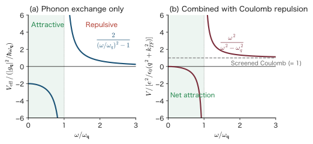
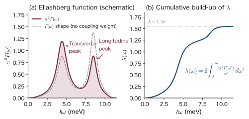
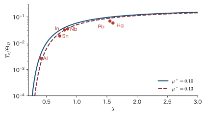

Chapter 29Electron–Phonon Interaction — From Phonons with Imaginary Frequencies to Cooper Pairs
In Chapters 13–14 we treated phonons as “vibrations of springs connecting the ions,” and in Chapters 15–18 we treated electrons as “waves in the periodic potential created by stationary ions.” We handled the two separately. This division of labor rests on the adiabatic approximation (the Born–Oppenheimer approximation). Electrons are much lighter and faster than ions, so once the ionic configuration is fixed, the electrons immediately settle into the ground state appropriate to that configuration. However, when the ions move, the potential felt by the electrons changes, and when the electronic state changes, the forces acting on the ions change in turn. This “give-and-take” is the electron–phonon interaction. In Chapter 22 we treated it as a scattering of electrons (a cause of reduced mobility). In this chapter we see how the electron–phonon interaction brings about something far more dramatic: it changes the shape of the crystal, and it draws electrons toward one another.
The backbone of this chapter is the two faces of the electron–phonon interaction. The first is the static electron–phonon interaction: if we displace the atoms slightly and hold them there, the electrons rearrange to suit the new configuration and the total energy decreases. When this decrease outweighs the restoring force of the lattice, the square of the frequency of a phonon calculated for the high-symmetry structure becomes negative. This is the true nature of the phonon with an imaginary frequency that so often appears in first-principles calculations, and it is the common origin of ferroelectricity, the octahedral rotations of perovskites, Jahn–Teller distortions, and the Peierls transition, all of them structural phase transitions. The second is the dynamic electron–phonon interaction: while the atoms are vibrating, an electron emits and absorbs phonons. The electron puts on a “phonon cloak,” becomes heavier, and acquires a finite lifetime. Moreover, with phonons as the intermediary, an attraction between electrons arises, and two electrons on the Fermi surface form a bound pair, the Cooper pair. This is the starting point of superconductivity. In a nutshell, the destination of the static electron–phonon interaction is the “phonon with an imaginary frequency” (an instability of the high-symmetry structure), and the destination of the dynamic electron–phonon interaction is the “Cooper pair” (superconductivity).
These two are two limits of the same Hamiltonian. The difference lies in the time scale. When the lattice deforms slowly and the electrons follow it instantaneously (static), the electronic rearrangement softens the springs of the lattice. When electrons close to the Fermi surface actually (or virtually) exchange phonons with the vibrating lattice (dynamic), the response of the heavy ions is retarded. After a fast electron has passed, a gathering of ions (a trail of positive charge) remains behind, and it attracts the electrons that come later. What lags is not the electron but the ions. In this chapter we first solve the static case completely with a small model of a two-level system plus a lattice (Section 29.2) and connect it to the reading of first-principles phonon calculations (Section 29.3). After summarizing the case of metals as the Kohn anomaly (Section 29.4), we move on to the dynamic case and derive in turn the mass enhancement and electrical resistance of electrons (Section 29.5), the attraction due to phonon exchange (Section 29.6), the Cooper pair (Section 29.7), and how to measure and calculate the coupling strength (Section 29.8).
Let us describe the connections with the neighboring chapters. The creation and annihilation operators, the way to read Feynman diagrams, and the meaning of the self-energy introduced in Chapter 27 are used concretely in this chapter for electrons and phonons. The electron–electron interaction of Chapter 28 (the Hubbard model) and the electron–phonon interaction of this chapter are the two pillars of Part V. How lattice anharmonicity stabilizes phonons with imaginary frequencies at high temperatures is discussed in Section 30.8 of Chapter 30, polarons, in which a charge is clothed in a lattice distortion, in Chapter 31, the one-dimensional Peierls transition and charge-density waves in Chapter 35, and the superconducting state in which many Cooper pairs have condensed (BCS theory) in Chapter 37.
- How to read the Hamiltonian of the electron–phonon interaction, $H_{\rm ep}=\sum g_{\kk\qq}\,c^\dagger_{\kk+\qq}c_\kk(a_\qq+a^\dagger_{-\qq})$, and the types of coupling (deformation potential, Fröhlich, piezoelectric)
- The two faces, static and dynamic: the distinction by time scale (electrons $\sim\mathrm{fs}$, lattice $\sim0.1\,\mathrm{ps}$)
- The complete solution of the model of a two-level system plus a lattice, $E_\pm(Q)=\tfrac12KQ^2\pm\sqrt{\Delta_0^2+g^2Q^2}$: the effective force constant $K_{\rm eff}=K-g^2/\Delta_0$, the double well, and the pseudo-Jahn–Teller effect and the Jahn–Teller effect
- The general formula of second-order perturbation theory, $K_{\rm eff}=K_0-2\sum_n\abs{\bra{n}\partial H/\partial Q\ket{0}}^2/(E_n-E_0)$: electronic rearrangement always lowers the force constant
- The meaning of a phonon with an imaginary frequency and how to read first-principles phonon calculations ($\Gamma$ point, zone boundary, $2k_F$), and how to tell when one appears because of a deficiency in the calculation
- That the renormalization of phonons in metals, the Kohn anomaly, and the Peierls instability have the same structure as the two-level model
- The self-energy of the electron: the mass enhancement $m^*=m_b(1+\lambda)$, the kink in the dispersion, and the $T$ and $T^5$ dependences of the electrical resistance
- The derivation by second-order perturbation of the effective interaction due to phonon exchange, $V_{\rm eff}(\qq,\omega)$, and the retarded attraction and the isotope effect
- The complete solution of the Cooper problem: however weak the attraction, a bound pair forms on the Fermi surface
- The Eliashberg function $\alpha^2F(\omega)$, the coupling constant $\lambda$, McMillan's formula, and high-temperature superconductivity in hydrides
29.1 What Is the Electron–Phonon Interaction?
Figure 29.1 gives an overview of the phenomena treated in this chapter. On the left is the “static electron–phonon interaction,” and on the right the “dynamic electron–phonon interaction.” Where these two separate is explained in Section 29.1.6.
29.1.1 The adiabatic approximation — a division of labor between electrons and ions
A solid consists of electrons and ions (atomic nuclei together with core electrons). The total Hamiltonian is the sum of the kinetic energy of the ions, the kinetic energy of the electrons, and the Coulomb interaction among all the particles. Writing $\rr$ for the coordinates of all the electrons together and $\RR$ for those of all the ions together, we have
$$ H=T_{\rm ion}+T_{\rm el}+U(\rr,\RR) $$The ratio of the electron mass $m$ to the ion mass $M$ is small, $m/M\sim10^{-4}$ to $10^{-6}$ ($8\times10^{-5}$ for Li, $9\times10^{-6}$ for Cu, and $3\times10^{-6}$ for Pb). Under a force of the same magnitude the accelerations differ by a factor of $M/m$ (more than $10^4$), and for energies of the same order the speeds differ by a factor of $\sqrt{M/m}$ ($10^2$ to $10^3$). Electrons move far more nimbly than ions. We therefore think in the following two stages.
- Holding the ions fixed at $\RR$, solve the electronic Schrödinger equation $\bigl[T_{\rm el}+U(\rr,\RR)\bigr]\Psi_n(\rr;\RR)=E_n(\RR)\Psi_n(\rr;\RR)$. The eigenvalue $E_n(\RR)$ becomes a function of the ion configuration.
- Assuming that the electrons are in the ground state $n=0$, regard $E_0(\RR)$ as the potential energy for the ions, and solve for the ionic motion $T_{\rm ion}+E_0(\RR)$.
This is the adiabatic approximation, or the Born–Oppenheimer approximation. $E_0(\RR)$ is called the adiabatic potential (the Born–Oppenheimer surface). The binding energy of Chapter 12 and the force constants of Chapter 13 are, in fact, expansions of this $E_0(\RR)$ about the equilibrium position $\RR_0$:
$$ E_0(\RR_0+\uu)=E_0(\RR_0)+\frac12\sum_{l,l'}\sum_{\alpha,\beta}\Phi^{(2)}_{l\alpha,l'\beta}\,u_{l\alpha}u_{l'\beta}+\cdots, \qquad \Phi^{(2)}_{l\alpha,l'\beta}=\frac{\partial^2E_0}{\partial u_{l\alpha}\partial u_{l'\beta}}\bigg|_{\uu=0} $$($l$ labels the ions, and $\alpha,\beta$ are $x,y,z$; the first-order term vanishes at the equilibrium position). What matters here is that the electronic contribution is already contained in the force constants $\Phi^{(2)}$. This is because $E_0$ is the sum of “the Coulomb repulsion between the ions” and “the energy of the electrons, which have rearranged when the ions are moved.” This is the starting point of the “static electron–phonon interaction” in Sections 29.2–29.4.
What has the adiabatic approximation thrown away? While the ions are moving, the electrons cannot, strictly speaking, follow the ground state perfectly, and a small probability remains of a transition to an excited state $n\ne0$. Treating this “lag in following” properly is the “dynamic electron–phonon interaction” of Sections 29.5–29.7. A rough estimate of the error of the adiabatic approximation is the ratio of the phonon energy to the electronic excitation energy, $\hbar\omega/\Delta E_{\rm el}$. In an insulator $\Delta E_{\rm el}$ is the band gap, so the ratio is small. In a metal there are empty states immediately above the Fermi surface, and electrons can be excited with arbitrarily small energy. In a metal, what lies beyond the adiabatic approximation inevitably becomes an issue. It is no accident that superconductivity occurs in metals.
29.1.2 When atoms move, the potential felt by the electrons changes
We write the potential felt by the electrons as a sum of single-ion potentials $v(\rr)$ (effective ones, including screening). When ion $l$ is displaced by $\uu_l$ from its equilibrium position $\RR_l$,
$$ V(\rr)=\sum_l v(\rr-\RR_l-\uu_l)\simeq\sum_l v(\rr-\RR_l)-\sum_l\uu_l\cdot\nabla v(\rr-\RR_l) $$(up to the first order of the Taylor expansion). The first term is the periodic potential of Chapter 16, which forms the bands. The second term
is the perturbation that the lattice displacement exerts on the electrons. Since $\uu_l$ is a displacement, $\delta V$ contains both the “electron coordinate” and the “ion coordinate.” This is what links the electrons and the lattice.
How does $\delta V$ change the state of an electron? Consider a lattice wave of wave vector $\qq$, $\uu_l\propto\ee^{i\qq\cdot\RR_l}$. Then $\delta V(\rr)$ is also modulated with wave vector $\qq$, and it takes the plane wave (Bloch wave) $\ket{\kk}$ to $\ket{\kk+\qq}$. This is the conservation law of momentum (crystal momentum): the change in the electron wave vector equals the wave vector of the phonon. Computing this matrix element and combining it with the quantization of phonons (Chapter 13, Section 13.8, and Chapter 22, Section 22.1.3), we obtain the Hamiltonian of the electron–phonon interaction.
Notation: creation and annihilation operators of Chapter 27, Section 27.4
$c^\dagger_{\kk\sigma}$ is the operator that “creates one electron of wave vector $\kk$ and spin $\sigma$,” and $c_{\kk\sigma}$ the operator that “annihilates one.” $a^\dagger_\qq$ and $a_\qq$ create and annihilate one phonon of wave vector $\qq$ (Chapter 27, Section 27.4). Read $c^\dagger_{\kk+\qq}c_\kk$ as “move an electron from $\kk$ to $\kk+\qq$.” A one-electron operator $A$ can be written as $\sum_{\kk,\kk'}\bra{\kk'}A\ket{\kk}\,c^\dagger_{\kk'}c_\kk$ (add up the “moving” operators with the matrix elements as coefficients). In this chapter, the spin index is sometimes omitted for processes that do not change the spin.
Derivation: The Hamiltonian of the electron–phonon interaction
For simplicity, we take one atom (mass $M$) per unit cell and a single phonon branch, and we approximate the electrons by plane waves $\langle\rr|\kk\rangle=\ee^{i\kk\cdot\rr}/\sqrt{\mathcal V}$ in a crystal of volume $\mathcal V=N\Omega_c$ ($N$ is the number of unit cells and $\Omega_c$ is the volume of the unit cell).
Step 1: Quantize the displacement. As in Chapter 13, Section 13.8, each normal mode is an independent harmonic oscillator, and the displacement is the sum of a “part that annihilates one phonon” and a “part that creates one”:
$$ \uu_l=\sum_\qq\sqrt{\frac{\hbar}{2NM\omega_\qq}}\;\hat{\bm e}_\qq\,\bigl(a_\qq+a^\dagger_{-\qq}\bigr)\,\ee^{i\qq\cdot\RR_l} $$$\hat{\bm e}_\qq$ is the unit vector that gives the direction of the vibration (the polarization vector), and $\sqrt{\hbar/2NM\omega_\qq}$ is the amplitude of the zero-point vibration of a single mode (divided by $\sqrt N$). The reason $a^\dagger_{-\qq}$ is paired with $\ee^{i\qq\cdot\RR_l}$ is that $\uu_l$ is real (a Hermitian operator): together with the $\qq\to-\qq$ term it gives $\uu_l^\dagger=\uu_l$.
Step 2: The matrix element of $\nabla v$. Let $v_\pp\equiv\int\ee^{-i\pp\cdot\bm s}v(\bm s)\,\dd^3s$ (the Fourier transform of the potential of a single ion). Changing variables to $\bm s=\rr-\RR_l$, we obtain
$$ \bra{\kk'}\nabla v(\rr-\RR_l)\ket{\kk} =\frac{1}{\mathcal V}\int\ee^{-i\kk'\cdot\rr}\,\nabla v(\rr-\RR_l)\,\ee^{i\kk\cdot\rr}\,\dd^3r =\frac{\ee^{-i(\kk'-\kk)\cdot\RR_l}}{\mathcal V}\int\ee^{-i(\kk'-\kk)\cdot\bm s}\,\nabla v(\bm s)\,\dd^3s $$We integrate the last integral by parts (the surface term vanishes because $v\to0$ rapidly far away). Since $\nabla\ee^{-i\pp\cdot\bm s}=-i\pp\,\ee^{-i\pp\cdot\bm s}$, with $\pp=\kk'-\kk$ we have
$$ \int\ee^{-i\pp\cdot\bm s}\,\nabla v(\bm s)\,\dd^3s=-\int v(\bm s)\,\nabla\ee^{-i\pp\cdot\bm s}\,\dd^3s=i\pp\,v_\pp $$Step 3: Sum over the ions. Substituting Step 1 into Eq. \eqref{eq:29-dV}, the coefficient of the $\qq$ component contains
$$ \sum_l\ee^{i\qq\cdot\RR_l}\,\ee^{-i(\kk'-\kk)\cdot\RR_l}=N\,\delta_{\kk',\kk+\qq} $$(we omit here the terms with $\kk'=\kk+\qq+\GG$, shifted by a reciprocal lattice vector, that is, Umklapp processes). This is the conservation of crystal momentum. Using $N/\mathcal V=1/\Omega_c$ and collecting the terms, we obtain
$$ \bra{\kk+\qq}\delta V\ket{\kk}=-\sqrt{\frac{\hbar}{2NM\omega_\qq}}\;\frac{i\,(\qq\cdot\hat{\bm e}_\qq)\,v_\qq}{\Omega_c}\;\bigl(a_\qq+a^\dagger_{-\qq}\bigr) $$Step 4: Write it in second-quantized form. Following the rule in the Notation box, we take the matrix element as the coefficient, multiply by $c^\dagger_{\kk+\qq}c_\kk$, and sum. ∎
Eq. \eqref{eq:29-Hep} is the general form of the electron–phonon interaction. In a simple model $g_{\kk\qq}$ depends only on $\qq$, but in a real solid it reflects the shape of the Bloch functions and depends also on $\kk$, on the band, and on the branch. In first-principles calculations it is written $g_{mn\nu}(\kk,\qq)$ ($m,n$ are bands and $\nu$ is the phonon branch) and is computed by density functional perturbation theory (Section 29.8). $g_{\kk\qq}$ has the dimension of energy, and it expresses how much the electron energy is shaken when an atom moves by the amplitude of its zero-point vibration. In the simple model of Eq. \eqref{eq:29-Hep}, because of the factor $\qq\cdot\hat{\bm e}_\qq$, only longitudinal waves ($\hat{\bm e}_\qq\parallel\qq$) couple to the electrons, since transverse waves do not change the density. Also, for $H_{\rm ep}$ to be Hermitian we need $g_{\kk+\qq,-\qq}=g_{\kk\qq}^*$, and the expression above satisfies this (we take $v_{-\qq}=v_\qq^*$ and $\hat{\bm e}_{-\qq}=\hat{\bm e}_\qq$).
Caution: Do not count screening twice
In Eq. \eqref{eq:29-Hep}, $v(\rr)$ is the ionic potential “screened by the conduction electrons,” and $\omega_\qq$ is the actual phonon frequency “including the response of the electrons.” As noted in Chapter 27, Section 27.3.2, the force constant of the adiabatic potential ($\Phi^{(2)}$ in Section 29.1.1) already contains the effect of the electrons following the ions (screening). Therefore, when we use the phonon frequency $\omega_\qq$ from measurements or first-principles calculations together with the screened $g$, we must not add the change of frequency due to the electrons once more. Conversely, in Section 29.4 we start from the “bare” frequency $\Omega_\qq$ with the electronic response removed, and compute the softening due to the electronic response anew. We need to check, equation by equation, which starting point we are standing on.
29.1.3 How to read the Hamiltonian — the basic vertex
A single term $g_{\kk\qq}c^\dagger_{\kk+\qq}c_\kk(a_\qq+a^\dagger_{-\qq})$ of Eq. \eqref{eq:29-Hep} is the sum of two processes.
- $c^\dagger_{\kk+\qq}c_\kk\,a_\qq$: the electron absorbs a phonon $\qq$ and moves from $\kk$ to $\kk+\qq$.
- $c^\dagger_{\kk+\qq}c_\kk\,a^\dagger_{-\qq}$: the electron emits a phonon $-\qq$ and moves from $\kk$ to $\kk+\qq$.
In both processes, the increase $\qq$ of the electron wave vector equals the crystal momentum passed from the phonon system to the electron system. In a Feynman diagram (Chapter 27, Section 27.4), we draw an electron as a solid line with an arrow and a phonon as a wavy line, and assign the coefficient $g_{\kk\qq}$ to the point where the lines meet (the vertex) (Figure 29.2). All the diagrams in the following sections are built by connecting two or more of these vertices.
29.1.4 Types of coupling
The magnitude of $g_{\kk\qq}$ and its dependence on $q$ are determined by the mechanism of the coupling. We summarize in a table the three mechanisms treated in Chapter 22 as causes of scattering, together with the coupling due to the ionic potential in metals.
| Type | Partner phonon | Mechanism | $q$ dependence of $\abs{g_\qq}^2$ | Location in this book |
|---|---|---|---|---|
| Deformation potential | Acoustic (longitudinal wave) | Stretching and compression of the lattice (strain $\propto q u$) shifts the band edge up and down | $\propto q$ | Section 22.1.2 |
| Optical deformation potential | Optical (nonpolar) | The relative displacement of the sublattices splits or shifts the bands | $\propto q^0$ | Section 22.3.2 |
| Fröhlich | Longitudinal optical (LO, polar crystal) | Electric field of the macroscopic polarization created by the relative displacement of positive and negative ions | $\propto 1/q^2$ | Section 22.3.1, Chapter 32 |
| Piezoelectric | Acoustic (piezoelectric crystal) | Strain creates a polarization, and its electric field pushes the electrons | $\propto 1/q$ | Section 22.1.7 |
| Screened ion potential | Longitudinal acoustic (metal) | Eq. \eqref{eq:29-Hep}. $v_\qq$ is screened by the conduction electrons and is finite as $q\to0$ | $\propto q$ | Section 29.6 (jellium model) |
The reason that $\abs{g_\qq}^2\propto q$ for the deformation potential and for metals is that $(\qq\cdot\hat{\bm e}_\qq)^2/\omega_\qq\propto q^2/(c_sq)=q/c_s$ in Eq. \eqref{eq:29-Hep} ($c_s$ is the speed of sound). The $1/q^2$ of the Fröhlich interaction is a remnant of the long-range Coulomb force $1/q^2$ (the same electric field that appears as the LO–TO splitting in Chapter 32).
29.1.5 Dimensionless coupling constant $\lambda$ — a preview
To compare the “strength” of the coupling, a dimensionless number is convenient. In this chapter we call a quantity of the form
$$ \lambda\sim\frac{2N(0)\,\langle\abs{g}^2\rangle}{\hbar\omega} \qquad\left(\frac{\text{energy the electrons gain from the lattice distortion}}{\text{energy required to distort the lattice}}\right) $$the electron–phonon coupling constant ($N(0)$ is the density of states per spin at the Fermi level, $\langle\abs{g}^2\rangle$ is the square of the coupling averaged over the Fermi surface, and $\omega$ is the angular frequency of a representative phonon). The numerator $N(0)\abs{g}^2$ is a rough estimate of “how much the electrons gain by responding to the distortion,” and the denominator $\hbar\omega$ of “how stiff the lattice is.” The precise definition is given in Section 29.5 (mass enhancement) and Section 29.8 (the Eliashberg function). In simple metals $\lambda\approx0.1$–$0.5$, and in soft metals such as Pb and Hg $\lambda\approx1.5$. The coupling constant of the Peierls transition in Section 35.1.5 of Chapter 35 is a quantity based on the same idea.
29.1.6 Static and dynamic — separated by the time scale
The same Hamiltonian \eqref{eq:29-Hep} gives rise to two completely different kinds of phenomena (Figure 29.1). The dividing line is the ratio of the speed of the electronic response to the speed of the lattice motion.
The time scale on the electron side is $\hbar/E_F$ (determined by the Fermi energy), and that on the lattice side is $1/\omega_D$ (determined by the Debye frequency). As we will see in Example 29.1, the former is about $0.1\,\mathrm{fs}$ and the latter about $20\,\mathrm{fs}$ (or $0.1\,\mathrm{ps}$ in terms of the vibrational period $2\pi/\omega_D$), which differ by more than two orders of magnitude.
- Static electron–phonon interaction: The lattice deformation is regarded as “frozen,” and the electrons follow it instantaneously. The ground-state energy of the electrons decreases as a function of the displacement $Q$, and the force constant of the lattice changes. An electronic rearrangement whose excitation energy (energy difference) is much larger than the phonon energy $\hbar\omega$ follows this picture.
- Dynamic electron–phonon interaction: For an electron within $\hbar\omega_D$ of the Fermi surface, the excitation energy is only about the same as the energy of a single phonon. In terms of the energy–time uncertainty relation, determining the energy of such an electron more finely than $\hbar\omega_D$ takes a time longer than $1/\omega_D$. In other words, for this electron the lattice vibration is not a “frozen distortion” but a quantum (a phonon) that can be counted one by one. The electron emits and absorbs phonons, actually (or virtually), and as a result the mass and lifetime of the electron change and an attraction between electrons arises. What lags here is the response of the heavy ions: after a fast electron has passed, a lattice distortion (a trail of positive charge) remains (Section 29.6.2).
Thus the difference between static and dynamic is the difference between viewing the same coupling $g$ as an electronic rearrangement with a large energy difference (which changes the stiffness of the lattice), and viewing it as an exchange between phonons and electrons very close to the Fermi surface (which changes the properties of the electrons and the interaction between electrons). The two pillars of this chapter branch off from here.
Physical Meaning: The two pillars of this chapter — static and dynamic
- Static (Sections 29.2–29.4): Displace the atoms and hold them → the electrons rearrange and the energy decreases → the force constant falls from $K$ to $K_{\rm eff}=K_0-(\text{softening due to electronic rearrangement})$ (Theorem 29.1). If the softening wins, $\omega^2=K_{\rm eff}/M\lt0$, that is, a phonon with an imaginary frequency appears, and the highly symmetric structure distorts (ferroelectricity, octahedral rotation, Jahn–Teller distortion, Peierls transition). In first-principles phonon calculations, this softening enters the force constants as the “electronic response term.”
- Dynamic (Sections 29.5–29.8): The electron emits and absorbs phonons → the electron puts on a “phonon cloak” and becomes heavy ($m^*=m_b(1+\lambda)$) and acquires a lifetime (electrical resistance) → when two electrons exchange one phonon, an attraction arises ($V_{\rm eff}\lt0$), and two electrons on the Fermi surface form a Cooper pair even for a weak attraction → many pairs condense into superconductivity (Chapter 37).
- The two are two limits of the same coupling $g$: As we will see in Example 29.12, the $\omega\to0$ limit $-2\abs{g_\qq}^2/\hbar\omega_\qq$ of the attraction due to phonon exchange is exactly the static energy of “an electron distorts the lattice, and that distortion attracts another electron.” Also, as we will see in Section 29.8.4, strengthening the coupling increases $\lambda$ (superconductivity), whereas if the phonons become too soft, an imaginary frequency (structural instability) appears. The two pillars are back to back.
Example 29.1: Comparing the time scales of electrons and the lattice
The Fermi energy of copper (Cu) is $E_F=7.0\,\mathrm{eV}$ and its Debye temperature is $\Theta_D=343\,\mathrm{K}$. (1) Find $\hbar/E_F$. (2) Find the Debye frequency $\omega_D=k_B\Theta_D/\hbar$, $1/\omega_D$, and the vibrational period $2\pi/\omega_D$. (3) Compare $(1/\omega_D)/(\hbar/E_F)$ with the mass ratio $\sqrt{M/m}$ (the atomic weight of Cu is 63.55).
Solution. (1) Using $\hbar=6.582\times10^{-16}\,\mathrm{eV\,s}$, we obtain
$$ \frac{\hbar}{E_F}=\frac{6.582\times10^{-16}\,\mathrm{eV\,s}}{7.0\,\mathrm{eV}}=9.4\times10^{-17}\,\mathrm{s}\approx0.1\,\mathrm{fs} $$(2) Since $$k_B\Theta_D=1.381\times10^{-23}\,\mathrm{J/K}\times343\,\mathrm{K}=4.736\times10^{-21}\,\mathrm{J}$$ we have
$$ \omega_D=\frac{4.736\times10^{-21}\,\mathrm{J}}{1.0546\times10^{-34}\,\mathrm{J\,s}}=4.49\times10^{13}\,\mathrm{s^{-1}} $$ $$ \frac1{\omega_D}=2.23\times10^{-14}\,\mathrm{s}=22\,\mathrm{fs}, \qquad \frac{2\pi}{\omega_D}=0.14\,\mathrm{ps} $$(3) The ratio is $22\,\mathrm{fs}/0.094\,\mathrm{fs}=2.4\times10^2$. On the other hand, from $$M=63.55\times1.6605\times10^{-27}\,\mathrm{kg}=1.055\times10^{-25}\,\mathrm{kg}$$ we get $$\sqrt{M/m}=\sqrt{1.055\times10^{-25}/9.109\times10^{-31}}=3.4\times10^2$$. They are of the same order of magnitude.
∎ The electrons respond more than two orders of magnitude faster than the lattice. That this ratio is of the same order as $\sqrt{M/m}$ is no coincidence: the ion vibration frequency is determined by the “spring made by the electrons ($\sim E_F/a^2$)” and the “ion mass $M$” ($\hbar\omega_D/E_F\sim\sqrt{m/M}$). The fact that the error of the adiabatic approximation is small by this ratio is the basis of the static picture. Conversely, for electrons within $\hbar\omega_D=k_B\Theta_D=30\,\mathrm{meV}$ of the Fermi surface, this ratio does not hold, and a dynamic treatment is required.
29.2 The Static Electron–Phonon Interaction I — Electronic Energy Is Lowered When the Lattice Distorts
29.2.1 The phenomenon — crystals that deliberately break a highly symmetric structure
A crystal ordinarily seems to try to adopt a structure of high symmetry. Yet there are many examples in which a highly symmetric structure is “deliberately” broken.
- Above about $120\,{}^\circ\mathrm{C}$, $\mathrm{BaTiO_3}$ is a cubic perovskite, but below that temperature the $\mathrm{Ti}$ atom is displaced from the center of the oxygen octahedron and the crystal has a spontaneous polarization (a ferroelectric; Chapter 19, Section 19.9).
- In $\mathrm{LaMnO_3}$ and $\mathrm{KCuF_3}$, the octahedra surrounding $\mathrm{Mn^{3+}}$ and $\mathrm{Cu^{2+}}$ are elongated in one direction, and the Mn–O bonds split into long ones (about $2.2\,\text{Å}$) and short ones (about $1.9\,\text{Å}$) (Jahn–Teller distortion, Chapter 10, Section 10.3).
- The carbon chain of polyacetylene is not equally spaced; long and short bonds alternate along it (Peierls distortion, Chapter 35, Section 35.1).
In every example, the cause is that displacing the atoms lowers the electronic energy, and this gain outweighs the loss incurred by distorting the lattice. In this section we solve this contest between the “electronic gain” and the “lattice loss” completely, using the simplest possible model. The model is small, but its conclusion (electronic rearrangement always lowers the force constant) holds in general, and it forms the basis for the phonons with imaginary frequencies of Section 29.3, the Kohn anomaly and Peierls transition of Section 29.4, and the small polarons of Chapter 31.
29.2.2 The two-level-plus-lattice model
We represent the lattice distortion by a single coordinate $Q$ ($Q=0$ is the highly symmetric structure). $Q$ is, for example, the displacement of the $\mathrm{Ti}$ atom at the center of an octahedron, or the amplitude of some normal mode (a normal coordinate, a configuration coordinate). The energy of the lattice when only $Q$ is considered is taken, in the harmonic approximation, to be $\frac12KQ^2$ ($K\gt0$ is the spring constant).
On the electronic side, we consider only two states $\ket{a}$ and $\ket{b}$ that are close in energy. Let their energies at $Q=0$ be $-\Delta_0$ and $+\Delta_0$ (spacing $2\Delta_0$). For example, let $\ket{a}$ be the state that does not change sign (is even) and $\ket{b}$ the state that changes sign (is odd) under spatial inversion centered on the Ti position ($\rr\to-\rr$; under this inversion the distortion becomes $Q\to-Q$) (“a (even)” and “b (odd)” in Figure 29.3(a)). In the Ti example, $\ket{a}$ corresponds to a filled state composed mainly of the oxygen $2p$ orbitals, and $\ket{b}$ to an empty state composed mainly of the $\mathrm{Ti}$ $3d$ orbitals. The distortion $Q$ changes the electronic potential by $Q\,(\partial H/\partial Q)$. Since $\partial H/\partial Q$ changes sign under inversion, just as $Q$ does, the matrix elements $\bra{a}\partial H/\partial Q\ket{a}$ and $\bra{b}\partial H/\partial Q\ket{b}$ between states of the same parity vanish, and only $\bra{a}\partial H/\partial Q\ket{b}\equiv g$ between states of different parity remains ($g$ can be taken to be real). Hence, in the basis $\{\ket{a},\ket{b}\}$ the electronic Hamiltonian is
We suppose that there is one electron and that it occupies the lower level.
Here “one electron” means one electron in a single level with the spin specified. When two electrons, of up and down spin, occupy the lower level, as in the O $2p$ level of the Ti example, each of the two gains the same amount, so the electronic contributions below (such as $-g^2/\Delta_0$) are simply to be read as doubled ($g^2\to2g^2$). The fact that the story changes when electrons are also present in the upper level is discussed at the end of Section 29.2.4.
Notation: $\Delta_0$, $g$, $\lambda$, $\xi$ in this chapter, and symbols used twice
- $\Delta_0$ is half the two-level spacing. It is a different quantity from the superconducting energy gap $\Delta$ (Chapter 37). When this chapter refers to the superconducting gap, we state it explicitly as the “superconducting gap $\Delta$”.
- The $g$ of Sections 29.2–29.3 is the “matrix element per unit distortion”, with dimensions of energy/length ($\mathrm{eV/Å}$). It differs from $g_{\kk\qq}$ in Eq. \eqref{eq:29-Hep} (dimensions of energy) only in whether one multiplies by the zero-point vibration amplitude $\sqrt{\hbar/2M\omega}$. The $g$ of the Holstein model in Chapter 31 has the dimensions of energy (per $a+a^\dagger$); what corresponds to the $g$ of this chapter is $g'=A/\sqrt2$ (per unit displacement) of the two-site model in Chapter 31, Section 31.8.3.
- $\lambda$ is the dimensionless electron–phonon coupling constant. It is distinguished by its subscript or argument from the superconducting magnetic penetration depth $\lambda_L$ and from $\lambda(T)$ (Chapter 37). Chapter 37 writes the same quantity as $\lambda_{\rm ep}$.
- $\xi_\kk=E(\kk)-\mu$ is the electron energy measured from the chemical potential (the Fermi level), and always carries the subscript $\kk$. It is a different quantity from the superconducting coherence lengths $\xi_0$ and $\xi(T)$.
- $T_c$ is used in two senses. In Section 29.3 (including Example 29.6 and Example 29.7) and in Exercise 29.2 it is the transition temperature of a structural phase transition; in Sections 29.6–29.8 it is the superconducting transition temperature. In the tab on phonons with imaginary frequencies of the simulator “Superconductivity”, the temperature of the structural phase transition is written $T_0$. The temperature of the Peierls transition is written $T_P$.
- $\mu$ is the chemical potential (the definition of $\xi_\kk$). The strength of the Coulomb repulsion is written $\mu_{\rm C}$ and the Coulomb pseudopotential $\mu^*$, distinguished by subscript and superscript mark (Section 29.6.6). The $\mu$ in the resistivity unit $\mu\Omega\,\mathrm{cm}$ is $10^{-6}$.
- Quantities carrying $\Omega$: $\Omega_c$ is the volume of the unit cell; $\Omega_q$ ($\Omega_{2k_F}$) is the frequency of the “bare” phonon, with the electronic response removed (Section 29.4); $\Omega_p$ is the ion plasma frequency (Section 29.6.5); and $\Omega$ (without subscript) is the effective phonon frequency of Section 29.9.1. $\omega_\qq$ always denotes the actual phonon frequency including the electronic response (in Section 29.4 it is called the “renormalized frequency”, and in Section 29.6.5 the “ionic vibration screened by the electrons”, but the meaning is the same).
- Quantities carrying $\alpha$: $\alpha,\beta$ are Cartesian indices (Section 29.1, Section 29.3.2); $\alpha^2F(\omega)$ is the Eliashberg function (Section 29.8; $\alpha^2$ as a whole is a single symbol); $\alpha$ is the exponent of the isotope effect (Eq. \eqref{eq:29-isotope}); $\alpha_V$ and $\beta_V$ are the constants of the Varshni formula; and $\alpha_F$ is the Fröhlich coupling constant.
- $N$ is the number of unit cells, and $N(0)$ is the density of states per spin at the Fermi level (for which volume it is taken is stated equation by equation).
Derivation 1: The adiabatic potential of the two-level-plus-lattice model
Step 1: Electronic eigenvalues. The eigenvalues $E$ of the matrix in Eq. \eqref{eq:29-2lev} satisfy the secular equation
$$ \det\begin{pmatrix}-\Delta_0-E & gQ\\ gQ & \Delta_0-E\end{pmatrix}=(-\Delta_0-E)(\Delta_0-E)-g^2Q^2=0 $$Since $(-\Delta_0-E)(\Delta_0-E)=E^2-\Delta_0^2$, we have $E^2=\Delta_0^2+g^2Q^2$, that is, $E=\pm\sqrt{\Delta_0^2+g^2Q^2}$.
Step 2: Total energy. Adding the lattice energy to this gives two adiabatic potentials.
When the electron is in the lower level, the total energy is $E_-(Q)$. ∎
29.2.3 Curvature at the symmetric structure — the effective force constant
We examine the shape of $E_-(Q)$ near $Q=0$. Assuming $\abs{gQ}\ll\Delta_0$, we expand the square root. Using $\sqrt{1+x}=1+\frac x2-\frac{x^2}8+\cdots$ with $x=g^2Q^2/\Delta_0^2$, we obtain
$$ \sqrt{\Delta_0^2+g^2Q^2}=\Delta_0\sqrt{1+\frac{g^2Q^2}{\Delta_0^2}}=\Delta_0+\frac{g^2Q^2}{2\Delta_0}-\frac{g^4Q^4}{8\Delta_0^3}+\cdots $$Therefore
$$ E_-(Q)=-\Delta_0+\frac12\left(K-\frac{g^2}{\Delta_0}\right)Q^2+\frac{g^4}{8\Delta_0^3}Q^4+\cdots $$Twice the coefficient of $Q^2$ is the actual spring constant of the symmetric structure (the curvature of the adiabatic potential).
The second term $-g^2/\Delta_0$ is the electronic contribution. As long as the electron is in the lower level, this contribution is always negative and softens the lattice. The stronger the coupling $g$, and the narrower the two-level spacing $2\Delta_0$ (the more easily the states mix), the softer the lattice becomes. Since the coefficient of $Q^4$, $g^4/8\Delta_0^3$, is positive, the electronic contribution weakens at large $Q$ (the lower level then drops only in proportion to $\abs{gQ}$).
29.2.4 Double well — critical coupling, stable distortion, and energy lowering
From Eq. \eqref{eq:29-Keff2}, two cases arise depending on the coupling strength.
- $g^2\lt K\Delta_0$: $K_{\rm eff}\gt0$. $Q=0$ is a minimum of the energy, and the symmetric structure is stable (a single well). The frequency, however, is lower than in the absence of the electron.
- $g^2\gt K\Delta_0$: $K_{\rm eff}\lt0$. $Q=0$ is a maximum of the energy (the top of a hill), and the symmetric structure is unstable. $E_-(Q)$ has two valleys at $Q=\pm Q_0$ (a double well).
The boundary value $g_c=\sqrt{K\Delta_0}$ is the critical coupling. For $g\gt g_c$, let us find the stable distortion and the lowering of the energy.
Derivation 2: Stable distortion $Q_0$ and the depth of the double well
Step 1: Condition for an extremum. Differentiate $E_-(Q)$ of Eq. \eqref{eq:29-Epm} with respect to $Q$. Since $\dfrac{\dd}{\dd Q}\sqrt{\Delta_0^2+g^2Q^2}=\dfrac{g^2Q}{\sqrt{\Delta_0^2+g^2Q^2}}$, we have
$$ \frac{\dd E_-}{\dd Q}=KQ-\frac{g^2Q}{\sqrt{\Delta_0^2+g^2Q^2}}=Q\left[K-\frac{g^2}{\sqrt{\Delta_0^2+g^2Q^2}}\right] $$The extrema other than $Q=0$ are where the square bracket vanishes:
$$ \sqrt{\Delta_0^2+g^2Q_0^2}=\frac{g^2}{K} $$Step 2: Solve for $Q_0$. Squaring both sides gives $\Delta_0^2+g^2Q_0^2=g^4/K^2$. Dividing by $g^2$,
$$ Q_0^2=\frac{g^2}{K^2}-\frac{\Delta_0^2}{g^2}=\frac{g^2}{K^2}\left[1-\left(\frac{K\Delta_0}{g^2}\right)^2\right] $$For the right-hand side to be positive, $g^2\gt K\Delta_0$ is necessary, which agrees with the classification above.
Step 3: Energy at the bottom of the valley. Substitute Steps 1 and 2 into $E_-(Q_0)$.
$$ E_-(Q_0)=\frac12K\left(\frac{g^2}{K^2}-\frac{\Delta_0^2}{g^2}\right)-\frac{g^2}{K} =-\frac{g^2}{2K}-\frac{K\Delta_0^2}{2g^2} $$Step 4: Depth. The lowering from the energy of the symmetric structure, $E_-(0)=-\Delta_0$, is
$$ E_-(0)-E_-(Q_0)=-\Delta_0+\frac{g^2}{2K}+\frac{K\Delta_0^2}{2g^2} =\frac{g^2}{2K}\left[1-\frac{2K\Delta_0}{g^2}+\frac{K^2\Delta_0^2}{g^4}\right] $$The square bracket is $(1-K\Delta_0/g^2)^2$. ∎
Where $g$ is just above the critical value $g_c$, $1-K\Delta_0/g^2$ is small, so both $Q_0$ and $E_b$ grow continuously from 0 (the same behavior as in a second-order phase transition). When the coupling is sufficiently strong ($g^2\gg K\Delta_0$), $Q_0\to g/K$ and $E_b\to g^2/2K$, which approach the Jahn–Teller result of Section 29.2.6. Figure 29.4 shows how the shape of $E_-(Q)$ changes as $g$ is varied.
![Adiabatic potentials of the two-level-plus-lattice model. (a) The lower surface E-(Q) drawn for coupling g equal to 0.6, 1, 1.3, and 1.6 times the critical value gc. For g smaller than gc there is a single valley at Q=0; at gc the bottom of the valley becomes flat; beyond gc, Q=0 becomes a hill and two valleys form on its left and right. (b) The upper surface E+ and the lower surface E- at g=1.6gc. The gray dashed lines are the lattice-only energy KQ²/2 shifted downward. (c) E±=KQ²/2±gQ for the degenerate case (Δ0=0). Two parabolas cross at Q=0, and the lower surface has valleys at ±g/K. The depth of the valleys is the Jahn–Teller energy g²/2K](figs/ch29_fig29-4.svg)
Let us put the reading of Fig. 29.4(b) into words. When a distortion is introduced, the lower surface is pushed down and the upper surface is pushed up. This is the level repulsion of quantum mechanics (when two states mix, they move away from each other). If the electron occupies only the lower state, the total energy is lowered. If the lattice spring is sufficiently stiff (large $K$), this lowering loses to the cost to the lattice, and the symmetric structure remains. If the spring is soft, the structure distorts. If the upper state is also occupied by an electron, the corresponding gain is canceled, so the tendency to distort weakens. From this, a simple model of a structural phase transition can be constructed: when the temperature rises and electrons are thermally excited to the upper level, the symmetric structure is restored (Exercise 29.2).
Example 29.2: Critical coupling and stable distortion in the two-level model
In the two-level model, let $\Delta_0=0.5\,\mathrm{eV}$, $K=10\,\mathrm{eV/Å^2}$, and $g=3\,\mathrm{eV/Å}$. (1) Find the critical coupling $g_c$ and determine whether the symmetric structure is stable or unstable. (2) Find $K_{\rm eff}$. (3) Find the stable distortion $Q_0$ and the depth $E_b$ of the double well.
Solution. (1) $$g_c=\sqrt{K\Delta_0}=\sqrt{10\times0.5}\,\mathrm{eV/Å}=\sqrt5\,\mathrm{eV/Å}=2.24\,\mathrm{eV/Å}$$. Since $g=3\gt g_c$, the symmetric structure is unstable.
(2) From Eq. \eqref{eq:29-Keff2},
$$ K_{\rm eff}=10\,\mathrm{eV/Å^2}-\frac{(3\,\mathrm{eV/Å})^2}{0.5\,\mathrm{eV}}=10-18=-8\,\mathrm{eV/Å^2} $$(3) $K\Delta_0/g^2=5/9=0.556$. From Eq. \eqref{eq:29-Q0},
$$ Q_0=\frac{3}{10}\,\text{Å}\times\sqrt{1-0.556^2}=0.300\,\text{Å}\times\sqrt{0.6914}=0.300\times0.8315\,\text{Å}=0.249\,\text{Å} $$ $$ E_b=\frac{9}{2\times10}\,\mathrm{eV}\times\left(1-0.556\right)^2=0.450\,\mathrm{eV}\times0.1975=0.089\,\mathrm{eV} $$(Minimizing $E_-(Q)$ numerically also gives $Q_0=0.2494\,\text{Å}$ and $E_b=0.0889\,\mathrm{eV}$.)
∎ With the lattice alone, the spring constant at $Q=0$ is $+10\,\mathrm{eV/Å^2}$, but electronic rearrangement adds $-18\,\mathrm{eV/Å^2}$, and the net value becomes negative. The distortion is $0.25\,\text{Å}$ (about one tenth of the bond length), and the energy gain is $0.09\,\mathrm{eV}\approx1000\,\mathrm{K}$, much larger than the thermal energy at room temperature.
Try It Live: Strengthening the coupling turns a single well into a double well
The simulator below draws the two-level-plus-lattice model of Eq. \eqref{eq:29-Epm}. There are three sliders: the coupling $g$ ($\mathrm{eV/Å}$), half the level spacing $\Delta_0$ ($\mathrm{eV}$), and the spring constant $K$ ($\mathrm{eV/Å^2}$), and the readout displays the ratio $r\equiv g^2/K\Delta_0=(g/g_c)^2$ in large type. The default values ($\Delta_0=0.5\,\mathrm{eV}$, $K=10\,\mathrm{eV/Å^2}$, $g=1.5\,\mathrm{eV/Å}$, $r=0.45$) give a single well. When you move the slider for the coupling $g$ to the right, the curvature of the lower surface $E_-(Q)$ at $Q=0$ (proportional to $\omega^2$) decreases, becomes 0 at $r=1$ ($g=g_c$), and becomes negative for $r\gt1$, so that a double well forms (Fig. 29.4(a)). The small plot at the lower left below the large plot shows $\omega^2/\omega_0^2=1-r$, and for $r\gt1$ it displays “phonon with an imaginary frequency” (Fig. 29.6(a)). When you drag the ball in the plot (the distortion $Q$) and release it, it oscillates around $Q=0$ for $r\lt1$, while for $r\gt1$ it moves away from $Q=0$ exponentially and rolls into a valley at $\pm Q_0$ (Section 29.3.1). The “Examples from the text” buttons switch to the values of Example 29.2, of $g=g_c$, and of Example 29.4. We also encourage you to check that decreasing $\Delta_0$ lowers the critical coupling, and that switching the model to “degenerate ($\Delta_0=0$: Jahn–Teller)” gives the case of Fig. 29.4(c).
29.2.5 General formula for second-order perturbation — electronic rearrangement always lowers the force constant
The conclusion of the two-level model can be generalized. Even when the electrons have many states, the curvature of the adiabatic potential with respect to the distortion $Q$ can be found by second-order perturbation theory.
Derivation 3: General formula for the effective force constant
Step 1: Expand the Hamiltonian in $Q$. Write the Hamiltonian of the whole system (electrons plus the Coulomb interaction with the ions) when the ions are displaced by $Q$ as
$$ H(Q)=H_0+Q\,H_1+\frac12Q^2H_2+\cdots, \qquad H_1=\frac{\partial H}{\partial Q}\bigg|_0,\quad H_2=\frac{\partial^2H}{\partial Q^2}\bigg|_0 $$Let $\ket{n}$ be the eigenstates of $H_0$ and $E_n$ the eigenvalues, and let $\ket{0}$ be the ground state. The direct interaction between the ions is a number independent of the electronic state, so we include it in the expectation value of $H_2$.
Step 2: Find the energy up to $Q^2$. From first- and second-order perturbation theory, the change in the ground-state energy due to the perturbation $W=QH_1+\frac12Q^2H_2$ is
$$ E_0(Q)=E_0+\bra{0}W\ket{0}+\sum_{n\ne0}\frac{\abs{\bra{n}W\ket{0}}^2}{E_0-E_n}+\cdots $$We pick up only the $Q^2$ terms. From the first-order term we obtain $\frac12Q^2\bra{0}H_2\ket{0}$; from the second-order term, only the $QH_1$ part of $W$ gives $Q^2$, so we obtain $Q^2\sum_n\abs{\bra{n}H_1\ket{0}}^2/(E_0-E_n)$. The term linear in $Q$, $Q\bra{0}H_1\ket{0}$, is set to 0 here because $Q=0$ is the equilibrium position (the force vanishes).
Step 3: Take the second derivative.
$$ \frac{\dd^2E_0}{\dd Q^2}\bigg|_{Q=0}=\bra{0}H_2\ket{0}+2\sum_{n\ne0}\frac{\abs{\bra{n}H_1\ket{0}}^2}{E_0-E_n} $$Letting $K_0\equiv\bra{0}H_2\ket{0}$ and rewriting $E_0-E_n=-(E_n-E_0)$, we obtain the following equation. ∎
Theorem 29.1: Electronic rearrangement lowers the force constant
The second term of Eq. \eqref{eq:29-Keff} is always negative or zero around the ground state. This is because the numerator $\abs{\bra{n}\partial H/\partial Q\ket{0}}^2$ is nonnegative, and the denominator $E_n-E_0$ is positive by the definition of the ground state.
Therefore, the stability of the structure is decided by a contest between the “stiffness when the ions are moved without changing the electron distribution,” $K_0$ (positive), and the “softening caused by the electrons mixing in excited states and rearranging” (negative). When the latter exceeds the former, $K_{\rm eff}\lt0$ and the symmetric structure becomes unstable.
$K_0$ is sometimes called the rigid-ion term (the curvature when the ions are moved without changing the electron wave functions), and the second term the relaxation term (the lowering due to the electrons rearranging to fit the new configuration). Equation \eqref{eq:29-Keff} is the same as the equation derived in Chapter 19 as the reason why $\mathrm{Ti^{4+}}$ tends to be displaced (the equation for the second-order Jahn–Teller effect in Section 19.9.2). In Chapter 19 it was used in the context of ferroelectrics, but as we have seen here, it is the general expression of the “static electron–phonon interaction.”
Example 29.3: Applying the general second-order perturbation formula to the two-level model
Apply Eq. \eqref{eq:29-Keff} to the two-level-plus-lattice model (Eq. \eqref{eq:29-2lev}) and verify that Eq. \eqref{eq:29-Keff2} follows.
Solution. At $Q=0$, $H_{\rm el}$ is diagonal, with ground state $\ket{0}=\ket{a}$ ($E_0=-\Delta_0$) and excited state $\ket{1}=\ket{b}$ ($E_1=+\Delta_0$). The total energy is $\frac12KQ^2+H_{\rm el}(Q)$, so
$$ \frac{\partial H}{\partial Q}=KQ+\begin{pmatrix}0&g\\ g&0\end{pmatrix}\ \xrightarrow{Q=0}\ \begin{pmatrix}0&g\\ g&0\end{pmatrix}, \qquad \frac{\partial^2H}{\partial Q^2}=K\cdot\mathbb{1} $$($\mathbb 1$ is the identity matrix). Hence $K_0=\bra{a}K\mathbb 1\ket{a}=K$, $\bra{b}\partial H/\partial Q\ket{a}=g$, and $E_1-E_0=2\Delta_0$. Equation \eqref{eq:29-Keff} becomes
$$ K_{\rm eff}=K-2\times\frac{g^2}{2\Delta_0}=K-\frac{g^2}{\Delta_0} $$which agrees with Eq. \eqref{eq:29-Keff2}.
∎ The “2” of the general formula and the 2 in the denominator, the “level spacing of the two levels $2\Delta_0$,” cancel to give $g^2/\Delta_0$. When there are many states, the contributions $2\abs{g_n}^2/(E_n-E_0)$ from the individual excited states add up, so states closer in energy and states with stronger coupling contribute more.
Supplement: The names pseudo-Jahn–Teller effect and second-order Jahn–Teller effect
The instability of the symmetric structure caused by mixing with a nearby excited state (the second term of Eq. \eqref{eq:29-Keff}), even though the ground state is not degenerate, is called the pseudo-Jahn–Teller effect or the second-order Jahn–Teller effect. “Second-order” refers to the fact that the energy is lowered by second-order perturbation in $Q$. In contrast, the Jahn–Teller effect of the next subsection arises because the energy of a degenerate state splits to first order in $Q$, so it is a “first-order” effect. In molecular chemistry, the pyramidal shape of $\mathrm{NH_3}$ and the coordination distortions of $d^0$ transition-metal ions ($\mathrm{Ti^{4+}}$, $\mathrm{Nb^{5+}}$) and of ions with a lone pair ($\mathrm{Pb^{2+}}$, $\mathrm{Bi^{3+}}$) are explained by this effect (Bersuker's textbook).
29.2.6 The degenerate case — the Jahn–Teller effect
Consider the case in which the spacing of the two levels is zero ($\Delta_0=0$), that is, the two electronic states are degenerate at $Q=0$. Eq. \eqref{eq:29-Epm} becomes
For $Q\gt0$ the lower surface is $\frac12KQ^2-gQ$ (we take $g\gt0$), and its slope at $Q=0$ is $-g\ne0$. Because the slope is nonzero, $Q=0$ cannot be a minimum. However weak the coupling, the lattice always distorts. The minimum on the $Q\gt0$ side follows from $\dd E_-/\dd Q=KQ-g=0$:
$$ Q_0=\frac gK, \qquad E_-(Q_0)=\frac12K\frac{g^2}{K^2}-\frac{g^2}{K}=-\frac{g^2}{2K} $$This lowering of the energy is called the Jahn–Teller energy:
$$ E_{\rm JT}=\frac{g^2}{2K} $$This agrees with the limit $\Delta_0\to0$ of Eq. \eqref{eq:29-Q0}. That $K_{\rm eff}\to-\infty$ when we let $\Delta_0\to0$ in Eq. \eqref{eq:29-Keff2} reflects the fact that the surface has a cusp (is not differentiable) at $Q=0$.
Theorem 29.2: Jahn–Teller theorem (1937)
A nonlinear molecule, or a complex in a crystal, whose electronic state is orbitally degenerate is always unstable against a distortion that lifts the degeneracy (linear molecules, and the Kramers twofold degeneracy due to spin alone, are excluded).
The key points of the proof are two: (i) except for linear molecules, there always exists, by symmetry, a distortion $Q$ that splits the degenerate level at first order in perturbation theory (that is, a direction in which, for example, $\bra{a}\partial H/\partial Q\ket{a}$ is nonzero); and (ii) for such a distortion the total energy decreases at first order in $Q$, as in Eq. \eqref{eq:29-JT}. Statement (i) is shown by group theory (“the symmetric product of the degenerate irreducible representation contains an irreducible representation of a vibration that is not totally symmetric”). For details, see Theorem 10.1 and its derivation in Section 10.3 of Chapter 10.
Typical examples are $\mathrm{Cu^{2+}}$ ($d^9$) and high-spin $\mathrm{Mn^{3+}}$ ($d^4$) in an octahedron. In both, the $e_g$ orbitals (the twofold-degenerate pair $d_{x^2-y^2}$ and $d_{3z^2-r^2}$) hold one electron ($\mathrm{Mn^{3+}}$) or one hole ($\mathrm{Cu^{2+}}$). When the octahedron is stretched along the $z$ direction (a distortion of $Q_3$ type), the ligands along $z$ move away, so $d_{3z^2-r^2}$ is lowered and $d_{x^2-y^2}$ is raised. If an electron occupies the lowered level, the energy is lowered by the amount of the stretch (Figure 29.5). In $\mathrm{LaMnO_3}$ and $\mathrm{KCuF_3}$, this distortion is arranged throughout the crystal with the directions aligned (or alternating) between neighbors. This is called the cooperative Jahn–Teller effect, and the pattern of the distortions is bound up with the pattern of the $e_g$ orbitals (orbital order).
Supplement: in the real $e_g$ problem the surface takes a Mexican-hat shape
There are actually two distortions that split the $e_g$ orbitals (the $Q_3$ that stretches along the $z$ direction, and the $Q_2$ that stretches $x$ and shrinks $y$). When both are considered, the lower surface on the $(Q_2,Q_3)$ plane becomes $\frac12K\rho^2-g\rho$ ($\rho=\sqrt{Q_2^2+Q_3^2}$), which has a Mexican-hat shape with a circular valley centered on the origin (the $E\otimes e$ problem). Since the bottom of the valley is a circle, the anharmonic terms and the environment of the crystal select one of three positions in the valley (an octahedron stretched along one of the $x$, $y$, or $z$ directions). This “circular valley” has the same form as the free energy of the superconducting order parameter (Chapter 37), and as the two-component order parameter seen when U(1) is chosen in tab ④ (phonons with imaginary frequencies) of the simulator “Superconductivity”.
Example 29.4: The Jahn–Teller energy and the magnitude of the distortion
For a $\mathrm{Cu^{2+}}$ octahedron, let the coupling to a $Q_3$-type distortion be $g=1.5\,\mathrm{eV/Å}$ and the spring constant be $K=10\,\mathrm{eV/Å^2}$ (model values). (1) Find the stable distortion $Q_0$ and the Jahn–Teller energy $E_{\rm JT}$. (2) Find the splitting $2gQ_0$ of the $e_g$ levels in the distorted structure, and compare it with $E_{\rm JT}$. (3) Convert $E_{\rm JT}$ to a temperature.
Solution. (1) $Q_0=g/K=1.5/10\,\text{Å}=0.15\,\text{Å}$. $$E_{\rm JT}=g^2/2K=(1.5)^2/(2\times10)\,\mathrm{eV}=2.25/20\,\mathrm{eV}=0.1125\,\mathrm{eV}$$.
(2) $2gQ_0=2g^2/K=2\times2.25/10\,\mathrm{eV}=0.45\,\mathrm{eV}$. This equals $4E_{\rm JT}$.
(3) $$E_{\rm JT}/k_B=0.1125\,\mathrm{eV}/(8.617\times10^{-5}\,\mathrm{eV/K})=1.3\times10^3\,\mathrm{K}$$.
∎ The level splitting (the shift of the $d$–$d$ transition, which can be measured optically) is $4E_{\rm JT}$, four times the energy gain $E_{\rm JT}$. The electron gains half of the splitting $2gQ_0$, namely $gQ_0=2E_{\rm JT}$, but pays half of that, $E_{\rm JT}$, as elastic energy of the lattice ($\frac12KQ_0^2=g^2/2K=E_{\rm JT}$). Because the gain is as large as about $10^3\,\mathrm{K}$, the Jahn–Teller distortion of $\mathrm{LaMnO_3}$ persists up to temperatures far above room temperature (about $750\,\mathrm{K}$).
29.3 The Static Electron–Phonon Interaction II — Phonons with Imaginary Frequencies
29.3.1 The square of the frequency becomes negative
We restate the result of Section 29.2 in the language of vibrations. Let $M$ be the effective mass associated with the distortion $Q$ (if only $\mathrm{Ti}$ moves, the mass of $\mathrm{Ti}$; in general, the effective mass of the normal mode). Small vibrations around $Q=0$ obey the equation of motion
$$ M\ddot Q=-\frac{\dd E_-}{\dd Q}\simeq-K_{\rm eff}\,Q $$Substituting $Q=A\,\ee^{-i\omega t}$ gives $-M\omega^2=-K_{\rm eff}$, that is,
This is the frequency in the harmonic approximation (Chapter 13, $\omega^2=K/M$) with the contribution of electronic rearrangement included.
If $K_{\rm eff}\gt0$, $\omega$ is real and $Q$ oscillates in the ordinary way. If $K_{\rm eff}\lt0$, then $\omega^2\lt0$ and $\omega=\pm i\abs{\omega}$ (with $\abs{\omega}=\sqrt{\abs{K_{\rm eff}}/M}$) is purely imaginary. In this case the general solution of the equation of motion $M\ddot Q=+\abs{K_{\rm eff}}Q$ is
$$ Q(t)=A\,\ee^{+\abs{\omega}t}+B\,\ee^{-\abs{\omega}t} $$(this can be checked by substituting $\ddot Q=\abs{\omega}^2Q$). However small the initial displacement, the $\ee^{+\abs{\omega}t}$ term makes it grow exponentially. The point $Q=0$ is not the center of an oscillation but the top of a hill on the energy surface (a saddle point in several dimensions), and the structure is unstable against displacements in that direction. In this sense, a vibrational mode with $\omega^2\lt0$ is called a phonon with an imaginary frequency.
Definition: Phonon with an imaginary frequency
When the force-constant matrix (dynamical matrix) in the harmonic approximation is diagonalized for a given crystal structure, an eigenmode whose eigenvalue $\omega^2$ is negative is called a phonon with an imaginary frequency. It means that the structure sits not at an energy minimum but at a maximum or a saddle point with respect to small displacements along the direction of the eigenvector of that mode.
In the two-level model, Eq. \eqref{eq:29-Keff2} gives $\omega^2=\omega_0^2\left[1-(g/g_c)^2\right]$ (where $\omega_0^2=K/M$ is the value without the electrons and $g_c=\sqrt{K\Delta_0}$). As the coupling is increased, the frequency first decreases (softening), vanishes at $g=g_c$, and its square becomes negative for $g\gt g_c$ (Figure 29.6(a)).
Caution: A static electron–phonon interaction does not always produce an imaginary frequency
Theorem 29.1 says only that “electronic rearrangement lowers the force constant.” The condition $\omega^2\lt0$ arises only when the contribution that lowers the force constant (the relaxation term) exceeds the stiffness ($K_0$) obtained when the ions are moved without changing the electron distribution. In most crystals the former loses to the latter, and the static electron–phonon interaction merely lowers the phonon frequency a little. The phonons of a metal are usually softer than the values estimated from the forces between the atoms alone, and this too is an effect of the static electron–phonon interaction.
![(a) The square of the frequency in the two-level model and how it is plotted in a phonon dispersion diagram. The horizontal axis is g/gc. The square of the frequency decreases as 1−(g/gc)², crosses zero at g=gc, and becomes negative. The frequency on the right vertical axis illustrates the convention of plotting √ω² when the square is positive and −√|ω²|, a negative value, when it is negative. (b) Time evolution of the vibration. For a real frequency the system oscillates in place; for an imaginary frequency a small initial displacement grows exponentially](figs/ch29_fig29-6.svg)
Example 29.5: Reading the speed of instability from an imaginary frequency
In the calculation with the machine-learning potential in Appendix C (Section C.7), the octahedral-rotation mode at the $R$ point of cubic $\mathrm{SrTiO_3}$ has an imaginary frequency $\nu=1.09i\,\mathrm{THz}$ (plotted as $-1.09\,\mathrm{THz}$ in the figure). (1) Find $\abs{\omega}=2\pi\abs{\nu}$ and the time $1/\abs{\omega}$ in which the displacement grows by a factor of $\ee$. (2) Estimate the time it takes for the displacement to grow from a magnitude of $10^{-3}$ times to $1$ times its original size (neglect the $\ee^{-\abs{\omega}t}$ term).
Solution. (1) $$\abs{\omega}=2\pi\times1.09\times10^{12}\,\mathrm{s^{-1}}=6.85\times10^{12}\,\mathrm{s^{-1}}$$, $$1/\abs{\omega}=1.46\times10^{-13}\,\mathrm{s}=0.15\,\mathrm{ps}$$.
(2) From $\ee^{\abs{\omega}t}=10^3$, $$t=\ln(10^3)/\abs{\omega}=6.91/(6.85\times10^{12}\,\mathrm{s^{-1}})=1.0\times10^{-12}\,\mathrm{s}=1.0\,\mathrm{ps}$$.
∎ The magnitude of an imaginary frequency is the “speed of instability.” Within $1\,\mathrm{ps}$ the displacement grows by a factor of $1000$. This, however, is a statement about the harmonic approximation at $0\,\mathrm{K}$; the real $\mathrm{SrTiO_3}$ remains stable as a cubic crystal above about $105\,\mathrm{K}$ (Section 29.3.4).
29.3.2 How to read a first-principles phonon calculation
In a real crystal there is not just one distortion coordinate. For the displacements $u_{l\alpha}$ of all the atoms, we compute the second derivatives of the adiabatic potential (the force constants) $\Phi^{(2)}_{l\alpha,l'\beta}=\partial^2E_0/\partial u_{l\alpha}\partial u_{l'\beta}$, and, as in Chapter 13, diagonalize the dynamical matrix
$$ D_{\kappa\alpha,\kappa'\beta}(\qq)=\frac{1}{\sqrt{M_\kappa M_{\kappa'}}}\sum_{l'}\Phi^{(2)}_{0\kappa\alpha,\,l'\kappa'\beta}\,\ee^{i\qq\cdot(\RR_{l'}-\RR_0)} $$($\kappa$ labels the atoms in the unit cell). The eigenvalues are $\omega^2_{\qq\nu}$, and the eigenvectors $\bm e_{\qq\nu}$ are the vibration patterns (the direction of motion of each atom and the amplitude ratios). Extending Eq. \eqref{eq:29-Keff} to many degrees of freedom, the force constant splits into two parts.
The second term is an “electron-mediated force”: when one atom is moved, the electrons rearrange, and the rearranged electrons exert a force on another atom. In first-principles calculations, whether by the finite-displacement method (move the atoms slightly and compute the forces) or by density functional perturbation theory (DFPT, which computes the electronic response directly as a linear response), these two terms are computed together. What is actually computed is that the electronic-response term is the static electron–phonon interaction.
Figure 29.7 summarizes the conventions and key points for reading the results of a first-principles phonon calculation (the phonon dispersion diagram).
- Plotting convention: a mode with $\omega^2\lt0$ is plotted as a negative value, $-\sqrt{\abs{\omega^2}}$ (the default in phonopy, a representative program that computes phonons by the finite-displacement method, and others). A line below 0 in the dispersion diagram is to be read as an “imaginary frequency.”
- The eigenvector tells how the structure distorts: if the atoms are displaced along the eigenvector of a mode with an imaginary frequency, the energy decreases. If the structure is relaxed with the displacement kept, a low-temperature phase (a distorted structure) is often obtained.
- The wavenumber tells the superperiodicity: at the $\Gamma$ point ($\qq=0$) the unit cell does not change, and at a zone-boundary point the unit cell doubles (for the $X$, $M$, and $R$ points). For a general $\qq$, a modulated structure with period $2\pi/q$ is formed.
- The irreducible representation tells the symmetry: which irreducible representation the mode with an imaginary frequency belongs to determines the space group of the low-temperature phase (an isotropy subgroup; group theory of Chapter 11).
29.3.3 What happens depending on the wave vector at which the mode appears
At which $\qq$ an imaginary frequency appears, and with what eigenvector, tells us what kind of structural phase transition occurs. Figure 29.8 and Table 29.2 summarize the representative cases.
| Wavenumber | Mode | What happens | Examples | Cause on the electron side |
|---|---|---|---|---|
| $\Gamma$ ($\qq=0$) | Polar optical (transverse) | Ferroelectricity (spontaneous polarization) | $\mathrm{BaTiO_3}$, $\mathrm{PbTiO_3}$, $\mathrm{KNbO_3}$ | Hybridization of the $d^0$ $d$ orbitals with O $2p$ (second-order Jahn–Teller effect) |
| $\Gamma$ | Polar mode (lone pair) | Ferroelectricity and antiferroelectricity | $\mathrm{PbTiO_3}$, $\mathrm{BiFeO_3}$ | Hybridization of the $6s^2$ lone pair with O $2p$ |
| $R$, $M$ (zone boundary) | Octahedral rotation | Antiferrodistortive distortion that doubles the unit cell | $\mathrm{SrTiO_3}$ (about $105\,\mathrm{K}$), $\mathrm{CaTiO_3}$, $\mathrm{LaAlO_3}$ | Mainly the size mismatch of the ions (tolerance factor $t\lt1$; see the note below) |
| $2k_F$ (set by the Fermi surface) | Longitudinal acoustic and optical | Peierls transition, charge-density wave | Polyacetylene, KCP, $\mathrm{NbSe_3}$ | Nesting of the Fermi surface (Section 29.4.2) |
| Specific mode at a degenerate point | Jahn–Teller type | Cooperative Jahn–Teller distortion, orbital order | $\mathrm{LaMnO_3}$, $\mathrm{KCuF_3}$ | Degenerate $e_g$ orbitals (Section 29.2.6) |
(Note) The tolerance factor $t=(r_A+r_O)/[\sqrt2\,(r_B+r_O)]$ is a number determined by the ionic radii $r_A$, $r_B$, and $r_O$ of A, B, and O; it equals 1 when the A and B ions fit exactly, with no gaps, in a cubic perovskite. If $t\lt1$ (the A ion is too small), the octahedra tilt to fill the gaps. Nesting means that translating part of the Fermi surface by a certain wavenumber makes it coincide exactly with another part; it is explained in Section 29.4.2.
Polar mode at the $\Gamma$ point — ferroelectricity. In $\mathrm{BaTiO_3}$ and $\mathrm{PbTiO_3}$, the empty $3d$ orbitals of $\mathrm{Ti^{4+}}$ ($3d^0$) and the filled O $2p$ orbitals are close in energy. When the $\mathrm{Ti}$ moves off center, the hybridization between them strengthens and the occupied states are lowered (the “Ti in a cage” of Figure 29.3 is a schematic of this situation). This is the relaxation term of Eq. \eqref{eq:29-Keff}, and it is nothing other than what was explained in Chapter 19 as the “second-order Jahn–Teller effect” (Section 19.9.2). In Chapter 19, in Cochran's picture (Section 19.6.4), the same thing was viewed as a mutual cancellation between the “short-range repulsion” and the “long-range dipole attraction.” In either view, the cause of ferroelectricity is that the difference between two large contributions becomes negative.
Zone-boundary mode — octahedral rotation. $\mathrm{SrTiO_3}$ undergoes a transition from cubic to tetragonal at about $105\,\mathrm{K}$. This is the freezing of the mode at the $R$ point $(\tfrac12,\tfrac12,\tfrac12)$ (neighboring octahedra rotate alternately in opposite senses about the $c$ axis), and the unit cell doubles. In the calculation of Appendix C (Section C.7), the frequency of this mode appears as $-1.09\,\mathrm{THz}$ (imaginary), while the rotation at the $M$ point (rotating in phase along the $c$ direction) is $+1.72\,\mathrm{THz}$ (real). Because the instability of the rotation comes mainly from the size mismatch of the ions (if the ion at the A site is small, the octahedra tilt to fill the gaps), the contribution of electronic hybridization is less clear than in the ferroelectric case. Even so, the meaning, “an eigenvalue of the force-constant matrix of the high-symmetry structure is negative,” is the same.
Mode at $2k_F$ — Peierls transition and charge-density wave. In a metal, the phonon at the wavenumber $2k_F$, the diameter of the Fermi surface, becomes especially soft. In one dimension it always reaches an imaginary frequency (Peierls instability). This is treated in the next section, Section 29.4.
Lone pair. In oxides containing $\mathrm{Pb^{2+}}$ ($6s^2$) or $\mathrm{Bi^{3+}}$ ($6s^2$), the antibonding state of the filled $6s$ orbital and the O $2p$ orbital mixes with the empty $6p$ orbital, and the coordination becomes lopsided. The large tetragonal distortion of $\mathrm{PbTiO_3}$ and the ferroelectricity of $\mathrm{BiFeO_3}$ are due to this effect. This too has the form of Eq. \eqref{eq:29-Keff} (mixing of occupied and empty states).
29.3.4 Why a high-temperature phase exists even though there are imaginary frequencies
First-principles calculations are usually carried out in the harmonic approximation at $0\,\mathrm{K}$. Hence, even if an imaginary frequency appears for a high-symmetry structure, that structure often does exist stably at high temperatures. Cubic $\mathrm{BaTiO_3}$ (above about $120\,{}^\circ\mathrm{C}$), cubic $\mathrm{SrTiO_3}$ (above about $105\,\mathrm{K}$), and body-centered cubic Ti and Zr (high-temperature phases) are examples.
To understand this, consider a double-well potential with a quartic term added. For one degree of freedom $Q$, let
$$ E(Q)=\frac12M\omega_0^2Q^2+\frac14BQ^4,\qquad \omega_0^2\lt0,\ B\gt0 $$(here $\omega_0^2$ is the value in the $0\,\mathrm{K}$ harmonic approximation, that is, the square of the imaginary frequency from the first-principles calculation). The valleys of the double well follow from $\dd E/\dd Q=M\omega_0^2Q+BQ^3=0$ as $Q_0^2=M\abs{\omega_0^2}/B$, and the depth is
$$ E(0)-E(Q_0)=-\frac12M\omega_0^2Q_0^2-\frac14BQ_0^4=\frac12M\abs{\omega_0^2}Q_0^2-\frac14M\abs{\omega_0^2}Q_0^2=\frac14M\abs{\omega_0^2}\,Q_0^2 $$(in the second equality we used $BQ_0^2=M\abs{\omega_0^2}$). As the temperature rises and the atoms oscillate with larger amplitude, the quartic term raises the effective quadratic coefficient through the “mean square of the oscillation” $\langle Q^2\rangle$. Roughly,
$$ M\omega^2(T)\simeq M\omega_0^2+3B\langle Q^2\rangle_T $$and in the classical high-temperature regime the equipartition theorem gives $\langle Q^2\rangle_T\propto k_BT$. The factor 3 arises as follows: regard $Q$ as oscillating about the mean $\langle Q\rangle=0$; among the four $Q$'s in $Q^4$, there are ${}_4C_2=6$ ways to choose two and replace them by the mean $\langle Q^2\rangle$, so $Q^4\to6\langle Q^2\rangle Q^2$, and therefore $\frac14BQ^4\to\frac14B\cdot6\langle Q^2\rangle Q^2=\frac12\,(3B\langle Q^2\rangle)\,Q^2$; thus $\frac12\cdot3B\langle Q^2\rangle$ is added to the quadratic coefficient $\frac12M\omega_0^2$ (a careful treatment is given in Section 30.8 of Chapter 30). The larger the oscillation, the more the quartic wall pushes up the bottom of the valley, and the effective curvature approaches positive. Then $\omega^2(T)$ increases in proportion to the temperature and changes from negative to positive at some temperature $T_c$:
This is the soft mode of Chapter 19 (the Cochran law of Section 19.6). Above $T_c$, the high-symmetry structure is stable on average (while oscillating), and the frequency approaches 0 on the way toward $T_c$. Below $T_c$, the system falls into one of the valleys of the double well, and a new vibration within the distorted structure (the amplitude mode) appears with a real frequency. The derivation of the stabilization by the quartic term (the mean-field treatment that decomposes $Q^4$ into $6\langle Q^2\rangle Q^2$) is carried out in Section 30.8 of Chapter 30 (Section 30.8). If the well of Example 29.6 is treated in this mean-field approximation, the transition temperature is about $190\,\mathrm{K}$ classically and about $160\,\mathrm{K}$ when the zero-point vibration is included (Example 30.16 of Chapter 30). Figure 29.9 shows this behavior.
![(a) The double-well potential, and how the effective curvature returns to positive as the temperature rises. In the 0 K harmonic approximation the potential is concave downward at Q=0 (imaginary frequency), but the effective potential that incorporates the average of the oscillations becomes concave upward at high temperatures. (b) Temperature dependence of the squared frequency of the soft mode. Above Tc it decreases in proportion to T−Tc and reaches 0 at Tc. Below Tc the amplitude mode within the distorted structure appears, and its square increases as 2A(Tc−T). The value in the 0 K harmonic approximation is negative.](figs/ch29_fig29-9.svg)
Example 29.6: Estimating the depth of the double well from the imaginary frequency and the distortion
Suppose that a first-principles calculation for a certain cubic perovskite gives an imaginary frequency $\nu_0=6i\,\mathrm{THz}$ for the polar mode at the $\Gamma$ point. Assume that in the eigenvector essentially only the $\mathrm{Ti}$ at the B site (mass $47.87\,\mathrm{u}$) moves, and that when the structure is relaxed along that direction it settles into a structure in which the $\mathrm{Ti}$ is displaced by $Q_0=0.10\,\text{Å}$ (model values). (1) Find the depth of the double well from $\frac14M\abs{\omega_0^2}Q_0^2$ and express it in meV and in K. (2) Find the quartic coefficient $B$. (3) Compare this depth with the cubic–tetragonal transition temperature of $\mathrm{BaTiO_3}$ (about $400\,\mathrm{K}$).
Solution. (1) $$\abs{\omega_0}=2\pi\times6\times10^{12}\,\mathrm{s^{-1}}=3.77\times10^{13}\,\mathrm{s^{-1}}$$, $$M=47.87\times1.6605\times10^{-27}\,\mathrm{kg}=7.949\times10^{-26}\,\mathrm{kg}$$ so that
$$ M\abs{\omega_0^2}=7.949\times10^{-26}\times(3.77\times10^{13})^2\,\mathrm{J/m^2}=1.130\times10^{2}\,\mathrm{J/m^2}=7.05\,\mathrm{eV/Å^2} $$ $$ E_b=\frac14\times7.05\,\mathrm{eV/Å^2}\times(0.10\,\text{Å})^2=0.0176\,\mathrm{eV}=17.6\,\mathrm{meV} $$Dividing by $k_B$, $$E_b/k_B=0.0176/(8.617\times10^{-5})\,\mathrm{K}=2.0\times10^2\,\mathrm{K}$$.
(2) $$B=M\abs{\omega_0^2}/Q_0^2=7.05\,\mathrm{eV/Å^2}/(0.10\,\text{Å})^2=7.1\times10^2\,\mathrm{eV/Å^4}$$.
(3) The depth ($200\,\mathrm{K}$) and the transition temperature ($400\,\mathrm{K}$) are of the same order of magnitude.
∎ If the magnitude of the imaginary frequency and the magnitude of the distortion are known, the depth of the double well, and hence the order of magnitude of the transition temperature, can be estimated. However, $T_c$ is not determined by the depth of the well alone. It also depends on how strongly the distortions of neighboring unit cells tend to align (the coupling between unit cells). If the well is deep and the coupling between unit cells is weak, the distortion of each cell has already fallen into one of $\pm Q_0$ even at high temperatures, and only the orientation is disordered (order–disorder type, Chapter 19, Section 19.4). With a shallow well and strong coupling, the displacive-type soft mode of Figure 29.9 is clearly seen.
Example 29.7: Extrapolating the transition temperature from a soft-mode measurement
The frequency of the transverse optical phonon at the $\Gamma$ point of a certain material was measured by Raman scattering and found to be $2.0\,\mathrm{THz}$ at $300\,\mathrm{K}$ and $1.5\,\mathrm{THz}$ at $200\,\mathrm{K}$ (model values). Assuming that Eq. \eqref{eq:29-soft} holds, find the coefficient $A$ and the transition temperature $T_c$. Predict the frequency at $150\,\mathrm{K}$.
Solution. Let $\nu^2=A'(T-T_c)$ ($A'=A/4\pi^2$). Taking the difference between the two temperatures gives
$$ A'=\frac{(2.0)^2-(1.5)^2}{300-200}\,\mathrm{THz^2/K}=\frac{4.00-2.25}{100}\,\mathrm{THz^2/K}=0.0175\,\mathrm{THz^2/K} $$From the value at $300\,\mathrm{K}$, $$T_c=300\,\mathrm{K}-\dfrac{4.00\,\mathrm{THz^2}}{0.0175\,\mathrm{THz^2/K}}=300-229=71\,\mathrm{K}$$. At $150\,\mathrm{K}$, $$\nu=\sqrt{0.0175\times(150-71)}\,\mathrm{THz}=\sqrt{1.38}\,\mathrm{THz}=1.17\,\mathrm{THz}$$.
∎ If one plots the square of the frequency, rather than the frequency itself, against temperature, one obtains a straight line, and its intersection with 0 gives $T_c$. This is the standard way of analyzing a soft mode in experiments.
Try It Live: Temperature dependence of the double well and the soft mode
The simulator embedded below is tab ④ of the simulator “Superconductivity,” “Phonons with Imaginary Frequencies — Symmetry Breaking in the Lattice System,” which lets you operate the Landau-type model $E(Q)=\frac12A(T-T_0)Q^2+\frac14BQ^4$ of Figure 29.9 (the simulator writes the temperature of the structural phase transition as $T_0$; it is the same as $T_c$ in the main text). When you move the slider for the temperature $T/T_0$, the shape of the potential (a single well for $T\gt T_0$, a double well for $T\lt T_0$) and the temperature dependence of the squared frequency (the soft mode $\omega^2\propto T-T_0$ and the amplitude mode) change together. If you choose “Z₂ (one component)” in the switch for the number of components of the order parameter, you get the double well of the main text; if you choose “U(1) (two components),” you get the Mexican-hat shape of the Supplement in Section 29.2.6. If you turn on the effect of the zero-point vibration with the “Quantum fluctuation $T_1/T_0$” slider, the straight line of $\omega^2$ flattens at low temperatures, and you can also see the case in which the transition does not occur (the quantum paraelectricity of $\mathrm{SrTiO_3}$; Section 29.3.5). The table of correspondence with superconductivity is in §9 of the simulator's explanation page.
29.3.5 Caution — how to read imaginary frequencies correctly, and deficiencies of the calculation
Caution: An imaginary frequency does not mean that “the material falls apart”
All that an imaginary frequency means is “the high-symmetry structure we calculated is not an energy minimum in the harmonic approximation ($0\,\mathrm{K}$, infinitesimal displacements)”. The material does not collapse, nor does that phase fail to exist. In reality, one of the following holds: (i) a distorted low-symmetry structure is the true ground state; (ii) at high temperatures anharmonicity makes the high-symmetry structure stable on average (Section 29.3.4); or (iii) the zero-point vibration is large and the system stays in the high-symmetry structure quantum mechanically (the quantum paraelectricity of $\mathrm{SrTiO_3}$).
Caution: Imaginary frequencies also appear from flaws in the calculation
Imaginary frequencies sometimes appear even when there is no physical instability. Do not draw a physical conclusion until you have checked the following points.
- Insufficient convergence: the $\kk$-point mesh is too coarse, the cutoff energy is too low, or the structural relaxation (forces and stresses) is insufficient. In metals the results are also sensitive to the treatment of the Fermi surface (the smearing width; smearing is a numerical device that slightly blurs the occupation numbers near the Fermi level to stabilize the calculation), and particular care is needed near the Kohn anomaly of Section 29.4.
- Violation of the acoustic sum rule: translating the whole crystal produces no force, so the frequency of the acoustic modes at the $\Gamma$ point must be exactly 0 (the acoustic sum rule). If numerical errors violate this, the acoustic branch becomes slightly negative very close to the $\Gamma$ point (the circled gray dashed line in Figure 29.7). It disappears when a procedure that imposes the sum rule is applied.
- Size of the supercell: in the finite-displacement method, long-range force constants that do not fit in the supercell are cut off, and spurious imaginary frequencies can appear partway along the interpolated dispersion plot. Enlarge the supercell and check that the result does not change.
- Lattice constants and functional: the result changes depending on whether the lattice constants were fixed at the experimental values or relaxed in the calculation. A shallow double well can appear or disappear depending on the choice of the exchange-correlation functional.
The most reliable way to check is to displace the atoms along the eigenvector of the mode with an imaginary frequency and directly calculate the total energy $E(Q)$. If the energy decreases and a double well is visible, the instability is real; if not, suspect a flaw in the calculation (see “The procedure for handling phonons with imaginary frequencies in DFT” in §9 of the explanation page of the simulator “Superconductivity”).
The above is the first pillar of this chapter: “the static electron–phonon interaction appears in first-principles calculations as a phonon with an imaginary frequency”. Readers who want to know more concrete calculation procedures should consult the companion volume “Introduction to Computational Materials Science,” Chapter 1, Section 1.7 (imaginary frequencies and double wells, the search for new ferroelectrics).
29.4 The Case of Metals — Electronic Susceptibility, the Kohn Anomaly, and the Peierls Instability
29.4.1 Rearrangement occurs at the Fermi surface
In the two-level model of Section 29.2, the electronic rearrangement was a mixing of a “filled level $\ket a$” and an “empty level $\ket b$”. In a metal, the boundary between filled and empty states is the Fermi surface. A lattice distortion of wave vector $\qq$ (a static phonon) mixes a filled state $\kk$ ($E(\kk)\lt E_F$) with an empty state $\kk+\qq$ ($E(\kk+\qq)\gt E_F$). There are innumerable pairs that get mixed, and each of them makes a contribution that “lowers the force constant,” like the second term of Eq. \eqref{eq:29-Keff}. Its denominator is the energy difference between the two states, $E(\kk+\qq)-E(\kk)$. Right next to the Fermi surface there are pairs whose energy difference is arbitrarily small, so in metals the effect of electronic rearrangement can become especially large.
This is what is calculated in Section 35.4 of Chapter 35 (the derivation in Section 35.4.2). We restate the result in the notation of Chapter 35. For a one-dimensional chain (lattice constant $a$, ion mass $M$), let $\Omega_q$ be the “bare” frequency without the electronic response and $\omega_q$ the “renormalized” frequency including the electronic response. Then
We explain the symbols one by one.
- $L=N_sa$ is the length of the chain ($N_s$ is the number of sites). $\chi(q)$ is defined with a factor $\frac1L$ so that it is a quantity “per unit length”.
- $\sum_{k,\sigma}$ is the sum over the electron wavenumber $k$ and spin $\sigma$. A lattice distortion does not distinguish spin, so up and down electrons respond in the same way, and the spin sum gives a factor of 2.
- $f$ is the Fermi distribution. The numerator $f(E_k)-f(E_{k+q})$ and the denominator $E_{k+q}-E_k$ always have the same sign (if $E_{k+q}\gt E_k$, then $f(E_k)\gt f(E_{k+q})$), so every term is positive and $\chi(q)\gt0$.
- $g$ is the matrix element of the electron–phonon coupling defined in Chapter 35 (the change in the electron energy when an atom moves by the amplitude of its zero-point vibration). The dimension of $\chi$ is “1/(energy × length)”, so for $2g^2\chi/\hbar\Omega_q$ to be dimensionless, $g^2$ must have the dimension “energy$^2$ × length” (Chapter 35 defines $g^2\equiv a\hbar\mathcal{G}^2/2M\Omega_q$, including one factor of the lattice constant $a$).
$\chi(q)$ is the electronic susceptibility (the static Lindhard function). $\chi(q)$ expresses “how much the electron density responds when a potential of wavenumber $q$ is applied” (for a potential $V_q$, the density changes by $\delta n_q=-\chi(q)V_q$).
Physical Meaning: The equation for the Kohn anomaly has the same structure as the equation of the two-level model
Placing Eq. \eqref{eq:29-kohn} next to Eq. \eqref{eq:29-Keff2} of the two-level model, the two correspond as shown in Table 29.3. In both cases the “softening due to electronic rearrangement (second-order perturbation, always negative)” is subtracted from the “stiffness of the lattice”. In a metal, the magnitude of the softening is collected into a single function $\chi(q)$, and its $q$ dependence determines which phonons become soft.
| Two-level model | Metal | |
|---|---|---|
| Stiffness of the lattice | $K$ | $M\Omega_q^2$ |
| Mixed pairs | one pair, $\ket a$ and $\ket b$ | all pairs of a filled $k$ and an empty $k+q$ |
| Energy difference | $2\Delta_0$ | $E_{k+q}-E_k$ (approaches 0 near the Fermi surface) |
| Electronic contribution | $-g^2/\Delta_0$ | negative, proportional to $\chi(q)$ |
| Condition for instability | $g^2\gt K\Delta_0$ | $2g^2\chi(q)/\hbar\Omega_q\gt1$ |
Caution: Signs and symbols differ between textbooks
This book (Chapter 35 and this section) takes $\chi(q)\gt0$ and writes the bare frequency as $\Omega_q$ and the renormalized frequency as $\omega_q$. In Chapter 10 of the companion volume “Introduction to Linear Response Theory” (Section 10.1), the static Lindhard function is defined as a negative quantity, $\chi^0(q,0)=-N(\epsilon_F)F(x)\lt0$, and Chapter 14 writes the bare frequency of the phonon as $\omega$ and the renormalized frequency as $\Omega$, the opposite letters to this book. When you read both, please reinterpret the signs and letters accordingly.
29.4.2 The $2k_F$ singularity — the span of the Fermi surface
What is decisive in the $q$ dependence of $\chi(q)$ is the singularity at $q=2k_F$ (the diameter of the Fermi sphere). If $q\lt2k_F$, a point $\kk$ on the Fermi surface and a point $\kk+\qq$ on the Fermi surface can be connected, so pairs with arbitrarily small energy difference (pairs of a filled state and an empty state) can be found. For $q\gt2k_F$ there are no such pairs, and every pair requires a finite energy difference. At this boundary the behavior of $\chi(q)$ changes abruptly. How abruptly depends on the dimension (Figure 29.10(c)).
- Three dimensions: $\chi(q)$ is continuous at $q=2k_F$, but the slope $\dd\chi/\dd q$ diverges logarithmically. This is because the pairs with a small energy difference at $q=2k_F$ can be made only near the “two ends of a diameter” of the Fermi sphere.
- One dimension: the Fermi surface consists of just two points $\pm k_F$, and if we shift by $q=2k_F$ the left Fermi point lands exactly on the right Fermi point. All states near the Fermi points make pairs with energy difference close to 0 (nesting). As a result, $\chi(2k_F)$ itself diverges logarithmically ($T=0$).
Figure 29.10(c) shows the free-electron $\chi(q)$ in one, two, and three dimensions side by side. The complete calculation is in Section 35.5 of Chapter 35 (Section 35.5.2). Here we use only the form of the result. At wavenumbers where $\chi(q)$ is large, the square bracket in Eq. \eqref{eq:29-kohn} becomes small and the phonon becomes soft (Figure 29.10(d)). In one dimension $\chi$ diverges at $q=2k_F$, so the square bracket falls below zero no matter how weak the coupling is. In three dimensions $\chi$ remains finite, and only a kink is left in the dispersion curve.

29.4.3 Three-dimensional metals — the Kohn anomaly
In 1959 Kohn pointed out that the phonon dispersion curve of a metal should show a kink at $q=2k_F$, reflecting the singularity of $\chi(q)$. This is called the Kohn anomaly. Because the Fermi surface of a real metal is not a sphere, the kink appears at the wave vectors for which “$\qq+\GG$ ($\GG$ is a reciprocal lattice vector) connects two points on the Fermi surface whose tangent planes are parallel.” In the early 1960s Brockhouse et al. observed this kink in Pb by inelastic neutron scattering (Chapter 13, Section 13.9), confirming that the phonon dispersion reflects the shape of the Fermi surface.
Example 29.8: Wavenumber at which the Kohn anomaly appears in Pb
Pb is face-centered cubic (lattice constant $a=4.95\,\text{Å}$) and each atom contributes four valence electrons. (1) Using the free electron model, find $k_F$ and $2k_F$, and express them in units of $2\pi/a$. (2) Among the wave vectors $\qq=\zeta(2\pi/a)(1,0,0)$ along the $[100]$ direction ($0\le\zeta\le1$; $\zeta=1$ is the $X$ point), find the $\zeta$ for which $\abs{\qq+\GG}=2k_F$. The reciprocal lattice vectors are $\GG=(2\pi/a)(h,k,l)$, where in the face-centered cubic case $h,k,l$ are either all even or all odd.
Solution. (1) The unit cell (volume $a^3$) contains four atoms, so the electron density is $$n=4\times4/a^3=16/(4.95\times10^{-10}\,\mathrm{m})^3=1.319\times10^{29}\,\mathrm{m^{-3}}$$.
$$ k_F=(3\pi^2n)^{1/3}=(3\times9.870\times1.319\times10^{29})^{1/3}\,\mathrm{m^{-1}}=(3.906\times10^{30})^{1/3}\,\mathrm{m^{-1}}=1.575\,\text{Å}^{-1} $$$2k_F=3.150\,\text{Å}^{-1}$. Since $2\pi/a=6.2832/4.95\,\text{Å}^{-1}=1.269\,\text{Å}^{-1}$, we have $2k_F=2.481\times(2\pi/a)$.
(2) Because $2k_F$ is larger than the first Brillouin zone (the distance from $\Gamma$ to $X$ is $1\times2\pi/a$), we search using $\abs{\qq+\GG}$ with $\GG$ added. For $\GG=(2\pi/a)(2,0,0)$ we have $\abs{\qq+\GG}=(2\pi/a)(\zeta+2)$, so $\zeta+2=2.481$ and $\zeta=0.48$. For $\GG=(2\pi/a)(1,1,1)$ we have $\abs{\qq+\GG}=(2\pi/a)\sqrt{(\zeta+1)^2+2}$, so $(\zeta+1)^2=2.481^2-2=4.156$ and $\zeta=1.04$, which lies slightly outside the range ($\zeta\le1$).
∎ In the free electron model, the Kohn anomaly is expected at $\zeta\approx0.48$, almost midway between $\Gamma$ and $X$ along the $[100]$ direction. Several kinks can appear even along a single direction, corresponding to different $\GG$. Comparing with the measured positions of the kinks reveals the deviation of the Fermi surface from the free electron model.
29.4.4 One-dimensional metals — the Peierls instability
In one dimension, $\chi(2k_F)$ becomes a logarithm rounded off by the temperature $T$, $\chi(2k_F,T)=N(0)\ln(1.134\Lambda/k_BT)$ (Chapter 35, Section 35.4.4; $N(0)$ is the one-dimensional density of states per spin per unit length used in this chapter, and $\Lambda$ is the energy width over which the band can be linearized). Substituting this into Eq. \eqref{eq:29-kohn} and using the coupling constant $\lambda\equiv2g^2N(0)/\hbar\Omega_{2k_F}$, we obtain
$$ \omega_{2k_F}^2(T)=\Omega_{2k_F}^2\left[1-\lambda\ln\frac{1.134\Lambda}{k_BT}\right]=\lambda\,\Omega_{2k_F}^2\ln\frac{T}{T_P}, \qquad k_BT_P=1.134\,\Lambda\,\ee^{-1/\lambda} $$(the derivation is in Chapter 35, Section 35.4.4). As the temperature is lowered, the $2k_F$ phonon becomes softer and softer, and it reaches exactly 0 at $T=T_P$. Below $T_P$ the $2k_F$ phonon freezes in, producing a static distortion of period $\pi/k_F$ (a charge-density wave, CDW); a gap opens in the Fermi surface, and the metal becomes an insulator. This is the Peierls transition. Since $\ln(1/T)$ grows without bound as $T\to0$, no matter how small $\lambda$ is, the system always becomes unstable at some temperature (Peierls' theorem, Chapter 35, Theorem 35.1).
We can restate this conclusion in the language of Section 29.2. In a one-dimensional metal, the states at the Fermi points $k_F$ and $-k_F$ form a pair of equal energy (a degenerate pair). A distortion of wavenumber $2k_F$ splits this degeneracy to first order. This is the same situation as the Jahn–Teller effect for a degenerate level (the limit $\Delta_0\to0$). Pairs slightly away from the Fermi points are “two levels with a small spacing $2\Delta_0$ between them,” and they contribute through the pseudo-Jahn–Teller effect. Since pairs with small spacing are lined up at a constant density $N(0)$, summing their individual contributions $\propto1/\Delta_0$ gives the logarithm of $\int\dd\varepsilon/\varepsilon$. The three examples of the static electron–phonon interaction—pseudo-Jahn–Teller, Jahn–Teller, and Peierls—are three manifestations of a single principle: electronic rearrangement lowers the force constant (Theorem 29.1).
29.4.5 Two- and three-dimensional charge-density waves, and phonon softening due to strong coupling
Two-dimensional charge-density waves. In layered $2H$-$\mathrm{NbSe_2}$ (a CDW with a period of about three times the lattice period at about $33\,\mathrm{K}$) and $1T$-$\mathrm{TaS_2}$, the CDW forms within the layers (Chapter 35, Section 35.5.6). The nesting of a two-dimensional Fermi surface is not as perfect as in one dimension, and even when $\chi(\qq)$ is computed by first-principles calculation, there is sometimes no prominent peak at the wave vector of the CDW. In such cases it has been argued that what determines the CDW wave vector is the wave-vector dependence of the coupling $g_\qq$ rather than $\chi(\qq)$ (Johannes and Mazin, 2008, among others). This means that both factors in “$g^2\times\chi$” of Eq. \eqref{eq:29-kohn} matter: the picture that “the CDW is determined by nesting” is correct in one dimension but is only a rough guide in two and three dimensions.
Phonon softening due to strong coupling. Even in three-dimensional metals, phonons with particularly strong coupling become conspicuously soft. In the superconductor $\mathrm{MgB_2}$, the in-plane stretching vibration of boron (the $E_{2g}$ mode) couples strongly to the boron $\sigma$-bonding bands; its frequency is considerably lower than the value without the coupling, and its linewidth is also large. This single mode is the main contributor to the high $T_c$ of $\mathrm{MgB_2}$ (about $39\,\mathrm{K}$) (Section 29.8). The “strong electron–phonon coupling” that favors superconductivity at the same time softens phonons, and if pushed too far it produces an imaginary frequency (a structural instability). A high $T_c$ from strong coupling and structural stability compete with each other (Section 29.8.4).
29.5 The Dynamic Electron–Phonon Interaction I — The Electron Dresses Itself in a Phonon Cloud
29.5.1 The phenomenon — electrons in a metal are a little heavy
From here on we turn to the second pillar of this chapter, the dynamic electron–phonon interaction. First we list three experimental facts.
- Electronic specific heat: the coefficient $\gamma$ in the low-temperature specific heat of a metal, $C=\gamma T$, is proportional to the density of states at the Fermi level (Chapter 15, Section 15.5). The measured $\gamma$ is often larger than the value expected from the density of states of a band calculation. It is about 2.5 times larger for Pb, and about twice as large for Hg and Nb (the $1+\lambda$ of Table 29.4; Example 29.9).
- The mass in the de Haas–van Alphen effect: the effective mass (the cyclotron mass; Chapter 18, Section 18.6) obtained from the temperature dependence of the oscillations in a magnetic field is also larger than the value from band calculations.
- The kink in ARPES: when the band dispersion $E(\kk)$ is measured by angle-resolved photoemission spectroscopy (ARPES, Chapter 18, Section 18.8) close to the Fermi level, one sees a bend (kink) at which the slope of the dispersion changes abruptly, at a few tens of meV (the phonon energy) from the Fermi level. Immediately next to the Fermi level the dispersion is flat (the velocity is low and the mass is heavy), and deeper than the phonon energy it returns to the slope of the original band.
All three show that “electrons near the Fermi level are heavier than band calculations predict.” Moreover, only the electrons within about a phonon energy of the Fermi level become heavier. This is the mass enhancement caused by the electron–phonon interaction.
29.5.2 Virtual emission and reabsorption of phonons — the self-energy
As an electron moves through a crystal, the coupling of Eq. \eqref{eq:29-Hep} constantly causes a process in which it emits a phonon and immediately takes it back (Figure 29.11). The intermediate state (the electron $\kk-\qq$ and the phonon $\qq$) may be a “virtual” state that does not conserve energy. In second-order perturbation theory of quantum mechanics, such virtual processes shift the energy of a state. In the language introduced in Section 27.5, this shift is the self-energy $\Sigma$, whose real part gives the energy shift and whose imaginary part gives the inverse lifetime (Chapter 27, Section 27.5).
- Real part $\mathrm{Re}\,\Sigma$: the case in which the intermediate state is virtual. It is the sum of the second-order perturbation energy shifts, “$\abs{\text{matrix element}}^2/(\text{energy difference})$.” It changes the dispersion of the electron and increases its mass.
- Imaginary part $\mathrm{Im}\,\Sigma$: the case in which the electron can actually move to the intermediate state while conserving energy (it is actually scattered into another state by emitting or absorbing a phonon). Through the transition probability of Fermi's golden rule, it determines the lifetime $\tau$ of the state ($\abs{\mathrm{Im}\,\Sigma}=\hbar/2\tau$). It is a cause of electrical resistance.
Because the electron “moves along wrapped in a cloud of phonons,” we express this by saying that “the electron puts on a phonon cloak.” The electron that has put on the cloak is the quasiparticle.
29.5.3 Derivation of the mass enhancement $m^*=m_b(1+\lambda)$
We calculate $\mathrm{Re}\,\Sigma$ in the simplest model. All phonons have the same angular frequency $\omega_E$ (Einstein model), the coupling $\abs{g}^2$ is constant, and the electronic density of states is a constant value $N(0)$ near the Fermi level (per spin, for the whole crystal). The temperature is $T=0$.
Derivation: Self-energy of an electron in the Einstein model
Step 1: Second-order perturbation energy for adding one electron. Add one electron of energy $\xi_\kk\gt0$ to the Fermi sea (the state in which all states with $\xi_{\kk'}\lt0$ are filled). The shift in the energy of this electron has two kinds of contributions.
(i) The process in which electron $\kk$ itself emits a phonon and virtually moves to an empty state $\kk'$ ($\xi_{\kk'}\gt0$). The energy of the intermediate state is $\xi_{\kk'}+\hbar\omega_E$, so the second-order perturbation shift is
$$ \sum_{\kk'}\frac{\abs{g}^2\,(1-f_{\kk'})}{\xi_\kk-\xi_{\kk'}-\hbar\omega_E} $$($1-f_{\kk'}$ expresses that the transition is possible only when $\kk'$ is empty. At $T=0$ it equals 1 for $\xi_{\kk'}\gt0$ and 0 for $\xi_{\kk'}\lt0$).
(ii) The process in which an electron $\kk'$ of the Fermi sea ($\xi_{\kk'}\lt0$) emits a phonon and virtually moves to state $\kk$. Before electron $\kk$ is added, this process had lowered the energy of the Fermi sea by $\abs{g}^2/(\xi_{\kk'}-\xi_\kk-\hbar\omega_E)$. When electron $\kk$ is added, state $\kk$ becomes occupied, so the Pauli principle forbids this process, and the energy rises by the corresponding amount. Including this rise in the energy of electron $\kk$ gives
$$ -\sum_{\kk'}\frac{\abs{g}^2\,f_{\kk'}}{\xi_{\kk'}-\xi_\kk-\hbar\omega_E}=\sum_{\kk'}\frac{\abs{g}^2\,f_{\kk'}}{\xi_\kk-\xi_{\kk'}+\hbar\omega_E} $$The sum of (i) and (ii) is the real part of the self-energy.
$$ \mathrm{Re}\,\Sigma(\xi_\kk)=\abs{g}^2\sum_{\kk'}\left[\frac{1-f_{\kk'}}{\xi_\kk-\xi_{\kk'}-\hbar\omega_E}+\frac{f_{\kk'}}{\xi_\kk-\xi_{\kk'}+\hbar\omega_E}\right] $$(The same expression holds for a hole with $\xi_\kk\lt0$. Because the phonon does not change the spin, the spin is not included in the sum over $\kk'$.) The diagrams of the two processes (i) and (ii) are shown side by side in Figure 29.11(a) and (b).
Step 2: Converting to an energy integral. Replace $\sum_{\kk'}\to N(0)\int\dd\xi'$ and cut off at $-W\lt\xi'\lt W$, where $W$ is a rough estimate of the bandwidth. Abbreviate $\xi\equiv\xi_\kk$ and $\hbar\omega_E\equiv\varepsilon_E$.
$$ \frac{\mathrm{Re}\,\Sigma(\xi)}{\abs{g}^2N(0)}=\int_0^W\frac{\dd\xi'}{\xi-\xi'-\varepsilon_E}+\int_{-W}^0\frac{\dd\xi'}{\xi-\xi'+\varepsilon_E} $$Step 3: Carrying out the integrals. Since $\dfrac{\dd}{\dd\xi'}\ln\abs{\xi'-\xi+\varepsilon_E}=\dfrac{1}{\xi'-\xi+\varepsilon_E}$, the first term is
$$ \int_0^W\frac{\dd\xi'}{\xi-\xi'-\varepsilon_E}=-\Bigl[\ln\abs{\xi'-\xi+\varepsilon_E}\Bigr]_0^W=-\ln\left|\frac{W-\xi+\varepsilon_E}{\varepsilon_E-\xi}\right| $$Similarly, since $\dfrac{\dd}{\dd\xi'}\ln\abs{\xi-\xi'+\varepsilon_E}=\dfrac{-1}{\xi-\xi'+\varepsilon_E}$, the second term is
$$ \int_{-W}^0\frac{\dd\xi'}{\xi-\xi'+\varepsilon_E}=-\Bigl[\ln\abs{\xi-\xi'+\varepsilon_E}\Bigr]_{-W}^0=\ln\left|\frac{\xi+W+\varepsilon_E}{\xi+\varepsilon_E}\right| $$Step 4: Putting the terms together. Adding the two and rearranging the arguments of the logarithms, we obtain
$$ \frac{\mathrm{Re}\,\Sigma(\xi)}{\abs{g}^2N(0)}=\ln\frac{W+\varepsilon_E+\xi}{W+\varepsilon_E-\xi}+\ln\left|\frac{\varepsilon_E-\xi}{\varepsilon_E+\xi}\right| $$For $\abs{\xi}\ll W$, the first term is a small quantity of order $2\xi/W$ and only slightly changes the shape of the band (we regard it as already included in the band calculation). The second term is the essential part, which acts near the Fermi level. ∎
Why? Is it legitimate for the self-energy to be determined by the energy $\xi$ alone, regardless of the wave vector $\kk$ (Migdal's argument)?
In the derivation above, we obtained $\mathrm{Re}\,\Sigma$ as a function of the electron energy $\xi$ alone. This is because the phonon energy $\hbar\omega_D$ is much smaller than the Fermi energy $E_F$ ($\hbar\omega_D/E_F\sim10^{-2}$, Example 29.1). $\Sigma$ changes substantially over an energy width of order $\hbar\omega_D$, but to change in the wave-vector direction, one must move a distance of order $E_F$ in terms of the electron energy (Chapter 27, Section 27.5.4). In 1958, Migdal showed that, for the same reason, the correction to the vertex itself in Figure 29.11 (the vertex correction) is also small, of order $\hbar\omega_D/E_F\sim\sqrt{m/M}$. For this reason, the electron–phonon interaction in metals is well described by the self-energy of the form in Figure 29.11 alone, even in strong coupling, where the coupling $\lambda$ exceeds 1 (Migdal's theorem; the foundation of the Eliashberg theory in Section 29.8). Conversely, this simplification cannot be used in systems where $\hbar\omega_D$ is comparable to $E_F$ (polarons in semiconductors with few carriers, Chapter 31).
The $\lambda$ in Eq. \eqref{eq:29-ReSigma} is the dimensionless electron–phonon coupling constant announced in Section 29.1.5 (for the Einstein model; it is defined in the same way as the $\lambda$ in Sections 27.5.4 and 27.7.1 of Chapter 27). The following can be read off from this expression.
- Very close to the Fermi level ($\abs\xi\ll\hbar\omega_E$): from $\ln\dfrac{1-x}{1+x}\simeq-2x$ ($x=\xi/\hbar\omega_E$), we get $\mathrm{Re}\,\Sigma\simeq\dfrac{\lambda\hbar\omega_E}{2}\times\left(-\dfrac{2\xi}{\hbar\omega_E}\right)=-\lambda\xi$. The self-energy is proportional to $\xi$, and its sign is always such as to pull toward the Fermi level.
- Far from the Fermi level ($\abs\xi\gg\hbar\omega_E$): $\ln\abs{(1-x)/(1+x)}\simeq-2/x\to0$. The self-energy vanishes, and the band returns to its original dispersion.
The quasiparticle energy $E$ is the original band energy $\xi_\kk$ plus the self-energy, but the self-energy is evaluated at the quasiparticle's own energy: $E=\xi_\kk+\mathrm{Re}\,\Sigma(E)$. Substituting $\mathrm{Re}\,\Sigma(E)\simeq-\lambda E$ near the Fermi level gives
$$ E=\xi_\kk-\lambda E\qquad\Longrightarrow\qquad E=\frac{\xi_\kk}{1+\lambda} $$The slope of the dispersion (the velocity) becomes $1/(1+\lambda)$ times its original value, so the effective mass becomes $(1+\lambda)$ times larger.
Here $m_b$ and $\gamma_b$ are the mass and the specific heat coefficient from the band calculation (which does not include the electron–phonon interaction). The density of states becomes $(1+\lambda)$ times larger because the number of $\kk$ states packed into the same energy width becomes $(1+\lambda)$ times larger, and this directly makes the coefficient $\gamma$ of the electronic specific heat $(1+\lambda)$ times larger. This mass enhancement occurs only within $\hbar\omega_E$ (in general, $\hbar\omega_D$) of the Fermi level; deeper than that, the slope of the band returns to its original value. The boundary between the two is the kink seen in ARPES (Figure 29.12).
![(a) The electron self-energy calculated with a Debye-type model. The real part with its sign reversed increases linearly, like λE, near the Fermi level, reaches a maximum near the Debye energy, and then decreases. The magnitude of the imaginary part is 0 at the Fermi level, increases steeply up to the Debye energy, and is almost constant beyond it. (b) The kink in the band dispersion. The original band is a straight line, but the renormalized dispersion flattens near the Fermi level to a slope of 1/(1+λ), bends at a depth equal to the Debye energy, and returns to the original band](figs/ch29_fig29-12.svg)
Typical values of $\lambda$ for real materials are given in Table 29.4. They are values obtained from the enhancement of the specific heat, the superconducting transition temperature (Section 29.8), tunneling spectroscopy, and so on, and they vary by 10–20% depending on how they are determined (the methods are described in Section 29.8.2).
| Material | $\lambda$ | $T_c$ (K) | Remarks |
|---|---|---|---|
| Na, K | about $0.1$–$0.2$ | — (not superconducting) | Alkali metals. Weak coupling |
| Cu, Ag, Au | about $0.1$–$0.15$ | — (not superconducting) | Noble metals. Small electrical resistance |
| Al | about $0.4$ | $1.14$ | Representative weak-coupling BCS superconductor |
| Sn, In | about $0.7$–$0.8$ | $3.72$, $3.40$ | |
| Nb | about $0.8$–$1.2$ | $9.50$ | Highest $T_c$ among the elements at ambient pressure |
| Pb, Hg | about $1.5$ | $7.19$, $4.15$ | Soft lattice. Strong coupling |
| $\mathrm{MgB_2}$ | about $0.7$ (average) | $39$ | Strongly coupled to specific modes (Section 29.8) |
Example 29.9: Estimating the mass and specific-heat enhancements from the coupling constant
Pb has four valence electrons per atom. (1) Using the electron density $n=1.319\times10^{29}\,\mathrm{m^{-3}}$ of Example 29.8 (Fermi wavenumber $k_F=1.575\,\text{Å}^{-1}$), find the Fermi energy $E_F$ of the free electron model and the electronic specific heat coefficient $\gamma_{\rm free}=\dfrac{\pi^2}{2}\dfrac{zN_Ak_B^2}{E_F}$ (per mole of atoms; $z=4$ is the number of electrons per atom). (2) The measured $\gamma$ is about $3.0\,\mathrm{mJ/(mol\,K^2)}$. If $\lambda=1.55$, what is the “band” specific heat coefficient $\gamma_b$, excluding the electron–phonon interaction? (3) What is the ratio of the quasiparticle velocity at the Fermi level to the band velocity?
Solution. (1) From $k_F=1.575\times10^{10}\,\mathrm{m^{-1}}$ (Example 29.8),
$$ E_F=\frac{\hbar^2k_F^2}{2m}=\frac{(1.0546\times10^{-34})^2\times(1.575\times10^{10})^2}{2\times9.109\times10^{-31}}\,\mathrm{J}=1.514\times10^{-18}\,\mathrm{J}=9.45\,\mathrm{eV} $$ $$ \gamma_{\rm free}=\frac{\pi^2}{2}\times\frac{4\times6.022\times10^{23}\times(1.381\times10^{-23})^2}{1.514\times10^{-18}}\,\mathrm{J/(mol\,K^2)}=1.50\times10^{-3}\,\mathrm{J/(mol\,K^2)} $$(2) From Eq. \eqref{eq:29-mstar}, $$\gamma_b=\gamma/(1+\lambda)=3.0/2.55\,\mathrm{mJ/(mol\,K^2)}=1.18\,\mathrm{mJ/(mol\,K^2)}$$.
(3) $v^*/v_b=1/(1+\lambda)=1/2.55=0.39$.
∎ The measured $\gamma$ is about twice the free-electron value, but its content is the product of “the change in the density of states due to the band structure ($\gamma_b/\gamma_{\rm free}\approx0.8$)” and “the enhancement due to the electron–phonon interaction ($1+\lambda=2.55$).” Specific heat alone cannot separate these two, so $\lambda$ can be determined only by comparison with the band calculation ($\gamma_b$). Because of the phonon cloak, an electron of Pb near the Fermi level moves at only 40% of the band velocity.
29.5.4 Imaginary part — lifetime and electrical resistance
When an electron can move to an intermediate state with energy conserved, it is actually scattered into another state by emitting or absorbing a phonon. The frequency of this is given by Fermi's golden rule. Let us find the scattering rate of an electron above the Fermi level in the Einstein model.
Derivation: The high-temperature scattering rate $\hbar/\tau=2\pi\lambda k_BT$
Step 1: Emission and absorption. By Fermi's golden rule (companion volume “Quantum Mechanics,” Chapter 51, Section 51.2), the rate at which an electron in state $\kk$ absorbs a phonon and moves to $\kk'$ is proportional to the number of phonons $n=n(\omega_E)$:
$$ \frac{2\pi}{\hbar}\sum_{\kk'}\abs{g}^2\,n\,(1-f_{\kk'})\,\delta(\xi_{\kk'}-\xi_\kk-\hbar\omega_E) $$The rate of moving by emitting a phonon is proportional to $n+1$ (stimulated emission and spontaneous emission):
$$ \frac{2\pi}{\hbar}\sum_{\kk'}\abs{g}^2\,(n+1)\,(1-f_{\kk'})\,\delta(\xi_{\kk'}-\xi_\kk+\hbar\omega_E) $$The factors $n$ and $n+1$ in front of $\abs g^2$ come from the squares of the matrix elements of the phonon creation and annihilation operators, $\bra{n-1}a\ket{n}=\sqrt n$ and $\bra{n+1}a^\dagger\ket{n}=\sqrt{n+1}$ (Chapter 27, Section 27.4).
Step 2: Take the sum over $\kk'$. Setting $\sum_{\kk'}\to N(0)\int\dd\xi'$, the delta function finishes the integral, and for an electron at the Fermi level ($\xi_\kk=0$) we have
$$ \frac1\tau=\frac{2\pi}{\hbar}\abs{g}^2N(0)\Bigl[n\,\bigl(1-f(\hbar\omega_E)\bigr)+(n+1)\bigl(1-f(-\hbar\omega_E)\bigr)\Bigr] $$Using $1-f(-x)=f(x)$, the square bracket becomes $n\bigl(1-f(\hbar\omega_E)\bigr)+(n+1)f(\hbar\omega_E)=n+f(\hbar\omega_E)$. This is the rate $1/\tau_{\rm out}$ at which electrons “go out” of state $\kk$. At high temperatures (Step 4) it becomes $\hbar/\tau_{\rm out}\simeq\pi\lambda k_BT$.
Step 3: Add the incoming rate. If we kept only the “outgoing rate” of Step 2, the final answer would be smaller by a factor of two. The rate at which the deviation of the occupation number of state $\kk$ (the deviation from equilibrium) returns to zero is affected in the same way by the rate at which electrons in other states “come in” to $\kk$ (when the collision term of the Boltzmann equation is expanded to first order around equilibrium, the relaxation rate is the sum of the outgoing and incoming rates; Chapter 21, Section 21.4). The processes that bring electrons into $\xi_\kk=0$ are the process in which an electron at an energy $\hbar\omega_E$ above emits a phonon and drops down ($f(\hbar\omega_E)(n+1)$) and the process in which an electron at an energy $\hbar\omega_E$ below absorbs a phonon and goes up ($f(-\hbar\omega_E)\,n=(1-f(\hbar\omega_E))\,n$); their sum is $n+f(\hbar\omega_E)$. Together with the outgoing rate,
$$ \frac1\tau=\frac{2\pi}{\hbar}\abs{g}^2N(0)\cdot2\bigl[n+f(\hbar\omega_E)\bigr] $$In the language of the self-energy, $\abs{\mathrm{Im}\,\Sigma}$ contains both the “processes in which an electron goes out” and the “processes in which an electron comes in (processes in which a hole goes out),” and at high temperatures $\abs{\mathrm{Im}\,\Sigma}\simeq\pi\lambda k_BT$. The $\tau$ in the relation $\abs{\mathrm{Im}\,\Sigma}=\hbar/2\tau$ of Section 29.5.2 is thus the lifetime that combines both going out and coming in, and $\hbar/\tau=2\abs{\mathrm{Im}\,\Sigma}\simeq2\pi\lambda k_BT$. Step 4 below is the calculation that confirms this.
At $T=0$ we have $n=0$ and $f(\hbar\omega_E)=0$, so an electron at the Fermi level is not scattered (an electron with $\abs{\xi_\kk}\lt\hbar\omega_E$ has no phonon that it can emit or absorb).
Step 4: The high-temperature limit. For $k_BT\gg\hbar\omega_E$, $n=1/(\ee^{\hbar\omega_E/k_BT}-1)\simeq k_BT/\hbar\omega_E\gg1$, and $f(\hbar\omega_E)\simeq\frac12$ is negligible compared with $n$.
$$ \frac1\tau\simeq\frac{2\pi}{\hbar}\abs{g}^2N(0)\cdot\frac{2k_BT}{\hbar\omega_E}=\frac{2\pi}{\hbar}\cdot\frac{2N(0)\abs{g}^2}{\hbar\omega_E}\cdot k_BT $$Using $\lambda=2N(0)\abs g^2/\hbar\omega_E$ (Eq. \eqref{eq:29-ReSigma}), we obtain the following equation. ∎
Eq. \eqref{eq:29-tau} was derived with the Einstein model, but for general phonons it takes the same form as long as $k_BT\gg\hbar\omega_D$ ($\lambda$ is the general definition in Eq. \eqref{eq:29-lambda}). This equation shows that the $\lambda$ that determines the mass enhancement and the $\lambda$ that determines the high-temperature scattering rate are the same quantity. This is because the real and imaginary parts of the self-energy come from the same Figure 29.11. What determines the electrical resistance is the transport scattering rate, weighted by $1-\cos\theta$, which measures “how much momentum is lost” in a scattering event ($\theta$ is the scattering angle; Chapter 22, Section 22.1.5), and in that case $\lambda$ is replaced by the transport coupling constant $\lambda_{\rm tr}$. In many metals $\lambda_{\rm tr}\approx\lambda$. Substituting into the Drude formula (Chapter 15, Section 15.6) $\rho=m_b/ne^2\tau$, the high-temperature resistivity is
$$ \rho(T)=\frac{m_b}{ne^2}\cdot\frac{2\pi\lambda_{\rm tr}k_BT}{\hbar}\ \propto\ T $$which is proportional to the temperature. This is why the resistivity of a metal increases roughly in proportion to the temperature near room temperature.
Example 29.10: Scattering rate and resistivity of copper at room temperature
The electron density of copper is $n=8.47\times10^{28}\,\mathrm{m^{-3}}$, $m_b\approx m$, and the transport coupling constant is $\lambda_{\rm tr}\approx0.13$. (1) Find $\hbar/\tau$ and $\tau$ at $300\,\mathrm{K}$. (2) Find the resistivity and compare it with the measured value of about $1.7\,\mu\Omega\,\mathrm{cm}$. (3) Find the mean free path using the Fermi velocity $v_F=1.57\times10^6\,\mathrm{m/s}$.
Solution. (1) Since $k_BT=25.85\,\mathrm{meV}$, $$\hbar/\tau=2\pi\times0.13\times25.85\,\mathrm{meV}=21.1\,\mathrm{meV}$$.
$$ \frac1\tau=\frac{2\pi\lambda_{\rm tr}k_BT}{\hbar}=\frac{0.8168\times4.142\times10^{-21}\,\mathrm{J}}{1.0546\times10^{-34}\,\mathrm{J\,s}}=3.21\times10^{13}\,\mathrm{s^{-1}},\qquad\tau=3.1\times10^{-14}\,\mathrm{s} $$(2)
$$ \rho=\frac{m}{ne^2\tau}=\frac{9.109\times10^{-31}\times3.21\times10^{13}}{8.47\times10^{28}\times(1.602\times10^{-19})^2}\,\Omega\,\mathrm{m}=1.34\times10^{-8}\,\Omega\,\mathrm{m}=1.3\,\mu\Omega\,\mathrm{cm} $$This agrees with the measured value of about $1.7\,\mu\Omega\,\mathrm{cm}$ to within about 20%.
(3) $$\ell=v_F\tau=1.57\times10^6\,\mathrm{m/s}\times3.12\times10^{-14}\,\mathrm{s}=4.9\times10^{-8}\,\mathrm{m}=49\,\mathrm{nm}$$.
∎ Even a coupling as small as $\lambda_{\rm tr}=0.13$ can explain most of the resistance of copper at room temperature. Cu, Ag, and Au conduct electricity well not because they have few electrons (their electron densities are large) but because their electron–phonon coupling is weak. Conversely, the room-temperature resistivity of Pb, with its strong coupling (about $21\,\mu\Omega\,\mathrm{cm}$), is more than ten times that of copper. This is one explanation of the empirical rule that “good conductors rarely become superconducting.”
29.5.5 Low-temperature resistivity — the Bloch–Grüneisen $T^5$ law
For $T\ll\Theta_D$, only long-wavelength acoustic phonons with $\hbar\omega_\qq\lesssim k_BT$ are thermally excited. The resistivity then decreases much faster than $T$, in proportion to $T^5$. This is called the Bloch–Grüneisen law. The fifth power in $T^5$ can be counted as the product of the following four factors.
Derivation: Counting the powers in $\rho\propto T^5$
The transport scattering rate is the golden rule multiplied by a weight for the way momentum is lost:
$$ \frac{1}{\tau_{\rm tr}}\propto\sum_\qq\abs{g_\qq}^2\,n(\omega_\qq)\,(1-\cos\theta)\,\delta(\xi_{\kk+\qq}-\xi_\kk\mp\hbar\omega_\qq) $$At low temperatures only phonons with $q\lesssim q_T\equiv k_BT/\hbar c_s$ ($c_s$ is the speed of sound) matter, so we pick up the $q$ dependence of each factor and count which power of $q$ results.
- Number of available phonons (phase space; Figure 29.13(c)): $\sum_\qq$ is a three-dimensional integral $\int q^2\dd q\,\dd\Omega_q$, but the delta function (the electron is still on the Fermi surface after scattering) eliminates one of the angular integrals. On the Fermi surface, the wave vectors $\qq$ for which $\kk+\qq$ also lies on the Fermi surface lie on a two-dimensional disk tangent to the Fermi surface, and their number is proportional to $\int q\,\dd q$ (integrating the delta function over $\cos\theta_q$ gives $1/(\hbar v_Fq)$, so $q^2\dd q\to q\,\dd q$).
- Coupling strength: for the deformation-potential coupling to acoustic phonons, $\abs{g_\qq}^2\propto q$ (Table 29.1).
- The way momentum is lost: for small $q$ the scattering angle $\theta\approx q/k_F$ is small, and $1-\cos\theta\simeq\theta^2/2\propto q^2$.
- Number of phonons: $n(\omega_\qq)$ is of order 1 or larger for $q\lesssim q_T$ and exponentially small for larger $q$.
Combining 1 through 3, the integrand is $q\,\dd q\times q\times q^2=q^4\dd q$, and since 4 restricts the integral to $q\lesssim q_T\propto T$,
$$ \frac{1}{\tau_{\rm tr}}\propto\int_0^{\sim q_T}q^4\,\dd q\propto q_T^5\propto T^5 $$∎ Incidentally, at high temperatures factor 4 becomes $n\simeq k_BT/\hbar c_sq$, and the integral of $q\,\dd q\times q\times q^2\times\dfrac{T}{q}=Tq^3\dd q$ from $0$ to the Debye wavenumber is proportional to $T$ (Eq. \eqref{eq:29-tau}).
When the integral is carried out carefully, the temperature dependence of the resistivity is given by the following Bloch–Grüneisen formula.
$\Theta_R$ is a temperature of the order of the Debye temperature, determined from the resistivity, and $\rho_1$ is a constant that fixes the slope of the high-temperature straight line $\rho_{\rm ph}\simeq\rho_1T/\Theta_R$. At high temperatures ($\Theta_R/T\ll1$) the integrand becomes $x^5/(x\cdot x)=x^3$, so the integral is $(\Theta_R/T)^4/4$, and overall $\rho_{\rm ph}\simeq\rho_1T/\Theta_R$. At low temperatures the upper limit of the integral can be taken to be $\infty$, and its value is $5!\,\zeta(5)=124.4$, so $\rho_{\rm ph}\simeq498\,\rho_1(T/\Theta_R)^5$ ($\zeta$ is the Riemann zeta function; Section A.5 of Appendix A).
The resistivity of a real metal is the sum of the part due to phonons, $\rho_{\rm ph}(T)$, and a temperature-independent part $\rho_0$ due to impurities and lattice defects (the residual resistivity).
$$ \rho(T)=\rho_0+\rho_{\rm ph}(T) $$This is called Matthiessen's rule. If the different scattering mechanisms are independent, the scattering rates $1/\tau$ add (for the derivation and the cases in which the rule fails, see Chapter 22, Section 22.3.8; for its use in semiconductor mobility, see Chapter 17, Section 17.8). Figure 29.13 shows the form of $\rho(T)$.

29.6 The Dynamic Electron–Phonon Interaction II — Phonon-Mediated Attraction between Electrons
29.6.1 Why the attraction between electrons is a problem
In 1911, Kamerlingh Onnes discovered that the electrical resistance of mercury (Hg) suddenly drops to zero at about $4.2\,\mathrm{K}$. This is superconductivity (for the experimental facts in detail, see Chapter 37, Section 37.1). In the superconducting state, electrons form pairs of two (Cooper pairs), and these pairs all condense into the same quantum state at once. For two electrons to form a pair, an attraction must act between them. But electrons carry negative charge, and the Coulomb force between them is repulsive. Where does the attraction come from? The answer is the lattice (phonons). In this section we examine the mechanism in two ways: through a real-space picture (Section 29.6.2) and through a calculation in momentum space (Sections 29.6.3–29.6.5).
First we check the situation on the Coulomb repulsion side. In a metal, the Coulomb repulsion between two electrons is screened because the surrounding conduction electrons instantly gather and disperse (Chapter 21, Section 21.3.4). In the Thomas–Fermi approximation, the screened repulsion is
$$ V_{\rm C}(r)=\frac{e^2}{4\pi\epsilon_0r}\ee^{-k_{TF}r}, \qquad V_{\rm C}(\qq)=\frac{e^2}{\epsilon_0(q^2+k_{TF}^2)} $$(the right-hand expression is the Fourier transform), and the screening length $1/k_{TF}$ in a metal is about $0.05$–$0.1\,\mathrm{nm}$, shorter than the lattice constant. Therefore, as long as the two electrons do not come to the same place at the same time, the Coulomb repulsion has almost no effect. The attraction due to phonons acts in a form that satisfies exactly this condition.
29.6.2 The real-space picture — a trail of positive charge
Let us follow the time sequence in Figure 29.14.
- Electron 1 passes by: When electron 1, running at the Fermi velocity $v_F\sim10^6\,\mathrm{m/s}$, passes nearby, the positive ions are attracted to electron 1 and begin to move.
- The ions gather late: An ion is tens of thousands to hundreds of thousands of times heavier than an electron, and its vibration period, $2\pi/\omega_D\sim0.1\,\mathrm{ps}$, is long. The time during which electron 1 is nearby ($\sim a/v_F\sim0.3\,\mathrm{fs}$) is much shorter than this, so the ion receives only a short “kick” from electron 1 and afterward moves at its own natural frequency. The displacement of an oscillator that has received a kick grows in the form $\sin\omega t$, and it reaches its maximum when about $1/4$ of a period has elapsed, that is, long after electron 1 has gone by. During this time electron 1 has advanced $10^2$–$10^3$ times the spacing of the ions. The place where the ions have gathered becomes rich in positive charge, and a trail of positive charge remains for a long distance behind electron 1.
- Electron 2 is drawn to the trail: Electron 2, arriving later, is drawn to this trail of positive charge. Electron 2 is far from electron 1 both in time and in space, so the Coulomb repulsion (which is screened and reaches only $0.1\,\mathrm{nm}$) does not act. Only the attraction through the “memory” of the lattice acts.
This is the retarded attraction. Note that what is delayed is not the electron but the response of the heavy ions. The time for which the trail remains is of the order of the vibration period (it is densest at $1/4$ period and afterward remains for a while while oscillating), so we express a rough estimate of the range of the attraction as the distance that electron 1 travels during one vibration of an ion,
(the factors of 1 and $1/4$ are only rough estimates; it is the order of magnitude that matters). This comes to several hundred nm (Example 29.11), more than three orders of magnitude longer than the screening length of $0.1\,\mathrm{nm}$. The difference between the time scales of the “slow lattice” and the “fast electron” (Section 29.1.6) is the key that lets the attraction act while avoiding the repulsion.
Example 29.11: How long is the trail of positive charge?
For (1) Pb ($v_F=1.83\times10^6\,\mathrm{m/s}$, $\Theta_D=105\,\mathrm{K}$) and (2) Al ($v_F=2.03\times10^6\,\mathrm{m/s}$, $\Theta_D=428\,\mathrm{K}$), find $\ell$ of Eq. \eqref{eq:29-ell}. (3) Compare it with the screening length $1/k_{TF}\approx0.06\,\mathrm{nm}$.
Solution. From $\omega_D=k_B\Theta_D/\hbar$ we have $2\pi/\omega_D=2\pi\hbar/k_B\Theta_D=h/k_B\Theta_D$. We use $h/k_B=4.799\times10^{-11}\,\mathrm{K\,s}$.
(1) Pb: $$2\pi/\omega_D=4.799\times10^{-11}/105\,\mathrm{s}=4.57\times10^{-13}\,\mathrm{s}$$, $$\ell=1.83\times10^6\times4.57\times10^{-13}\,\mathrm{m}=8.4\times10^{-7}\,\mathrm{m}=0.84\,\mu\mathrm{m}$$.
(2) Al: $$2\pi/\omega_D=4.799\times10^{-11}/428\,\mathrm{s}=1.12\times10^{-13}\,\mathrm{s}$$, $$\ell=2.03\times10^6\times1.12\times10^{-13}\,\mathrm{m}=2.3\times10^{-7}\,\mathrm{m}=0.23\,\mu\mathrm{m}$$.
(3) $\ell/(1/k_{TF})$ is $840/0.06\approx1\times10^4$ for Pb and $230/0.06\approx4\times10^3$ for Al.
∎ The trail remains over a length $10^3$–$10^4$ times the screening length. The heavier the element (Pb), the more slowly the lattice vibrates, so the longer the trail. On the other hand, the energy window $\hbar\omega_D$ in which the attraction acts becomes narrower for heavier elements (Section 29.7).
Try It Live: The trail of positive charge left by the lattice
This simulator animates electron 1 and electron 2 running through a lattice of ions connected by springs. The density of the clustering of ions (the density of positive charge) is shown by color. If you turn the knob for the ion mass $M$ toward heavier values, the lattice vibrates more slowly and the trail extends farther behind the electron (Eq. \eqref{eq:29-ell}). If you make the ions lighter, they follow the electron immediately and the trail becomes shorter. Also move the knobs for the electron speed, the damping, and the coupling strength, and watch how the attraction felt by electron 2 changes. The physics behind it is summarized in §2 of the explanation page.
29.6.3 The picture in momentum space — exchanging one phonon
We now recast the real-space picture in the language of quantum mechanics. Electron 1 emits a phonon, and electron 2 absorbs it. As a result, the two electrons exchange momentum (crystal momentum) $\hbar\qq$ and are scattered. This is a process in which two vertices of Eq. \eqref{eq:29-Hep} (Figure 29.2) are connected, and it is second-order perturbation in $g$. In the intermediate state one phonon exists. Depending on whether it is electron 1 or electron 2 that emits the phonon, there are two processes with different time orderings (Figure 29.15).
Derivation: Effective interaction through phonon exchange
Step 1: Initial, final, and intermediate states. Let the initial state $\ket{i}$ be the state with electrons $\kk_1$ and $\kk_2$ and no phonons ($T=0$). The final state $\ket{f}$ is the state with electrons $\kk_1-\qq$ and $\kk_2+\qq$ and no phonons. Let the energies be
$$ E_i=E(\kk_1)+E(\kk_2),\qquad E_f=E(\kk_1-\qq)+E(\kk_2+\qq) $$and write the energy lost by electron 1 as $\hbar\omega\equiv E(\kk_1)-E(\kk_1-\qq)$. When energy is conserved in the scattering ($E_i=E_f$), the energy gained by electron 2, $E(\kk_2+\qq)-E(\kk_2)$, is also equal to $\hbar\omega$.
Step 2: The effective matrix element in second-order perturbation theory. The matrix element for a direct transition from $\ket i$ to $\ket f$ is 0 (because $H_{\rm ep}$ changes the number of phonons by one), but the system can go there in two steps through an intermediate state $\ket m$. The effective matrix element of second-order perturbation theory is
$$ V_{\rm eff}=\sum_m\frac{\bra{f}H_{\rm ep}\ket{m}\bra{m}H_{\rm ep}\ket{i}}{E_i-E_m} $$(see second-order perturbation theory in the companion volume “Quantum Mechanics”). The intermediate states are the two shown in Figure 29.15.
Step 3: Process (a). The intermediate state is “electrons $\kk_1-\qq$ and $\kk_2$, and phonon $\qq$,” with energy $E_m^{(a)}=E(\kk_1-\qq)+E(\kk_2)+\hbar\omega_\qq$. We look in Eq. \eqref{eq:29-Hep} for the term to be used at the first vertex (electron 1 emits phonon $\qq$ and $\kk_1\to\kk_1-\qq$). In the single term $g_{\kk\qq}c^\dagger_{\kk+\qq}c_\kk(a_\qq+a^\dagger_{-\qq})$ of Eq. \eqref{eq:29-Hep}, setting the summation variable $\kk$ to $\kk_1$ and $\qq$ to $-\qq$ gives
$$ g_{\kk_1,-\qq}\,c^\dagger_{\kk_1-\qq}c_{\kk_1}\bigl(a_{-\qq}+a^\dagger_{\qq}\bigr) $$Its second term, $g_{\kk_1,-\qq}c^\dagger_{\kk_1-\qq}c_{\kk_1}a^\dagger_{\qq}$, is the term that “moves an electron from $\kk_1$ to $\kk_1-\qq$ and creates one phonon $\qq$.” The second vertex (electron 2 absorbs phonon $\qq$ and $\kk_2\to\kk_2+\qq$) is the first term, $g_{\kk_2,\qq}c^\dagger_{\kk_2+\qq}c_{\kk_2}a_\qq$, of the term with $\kk\to\kk_2$. The matrix elements that take the phonon number from 0 to 1 and from 1 to 0 are both 1, so the numerator is $g_{\kk_2,\qq}\,g_{\kk_1,-\qq}$. The denominator is
$$ E_i-E_m^{(a)}=E(\kk_1)-E(\kk_1-\qq)-\hbar\omega_\qq=\hbar\omega-\hbar\omega_\qq $$Step 4: Process (b). The intermediate state is “electrons $\kk_1$ and $\kk_2+\qq$, and phonon $-\qq$,” with $E_m^{(b)}=E(\kk_1)+E(\kk_2+\qq)+\hbar\omega_{-\qq}$. Using $\omega_{-\qq}=\omega_\qq$ (time-reversal symmetry), the denominator is
$$ E_i-E_m^{(b)}=E(\kk_2)-E(\kk_2+\qq)-\hbar\omega_\qq=-\hbar\omega-\hbar\omega_\qq $$The numerator is the product of $g_{\kk_2,\qq}c^\dagger_{\kk_2+\qq}c_{\kk_2}a^\dagger_{-\qq}$, in which electron 2 emits phonon $-\qq$, and $g_{\kk_1,-\qq}c^\dagger_{\kk_1-\qq}c_{\kk_1}a_{-\qq}$, in which electron 1 absorbs it; this is the same $g_{\kk_2,\qq}\,g_{\kk_1,-\qq}$ as in (a).
Step 5: Adding them. In the simple case where the coupling depends only on $\qq$, the Hermiticity condition $g_{-\qq}=g_\qq^*$ (Section 29.1.2) gives $g_{\kk_2,\qq}\,g_{\kk_1,-\qq}=g_\qq g_\qq^*=\abs{g_\qq}^2$. Therefore
$$ V_{\rm eff}=\abs{g_\qq}^2\left[\frac{1}{\hbar\omega-\hbar\omega_\qq}+\frac{1}{-\hbar\omega-\hbar\omega_\qq}\right] =\abs{g_\qq}^2\left[\frac{1}{\hbar\omega-\hbar\omega_\qq}-\frac{1}{\hbar\omega+\hbar\omega_\qq}\right] $$Putting the terms over a common denominator, the numerator becomes $(\hbar\omega+\hbar\omega_\qq)-(\hbar\omega-\hbar\omega_\qq)=2\hbar\omega_\qq$ and the denominator becomes $(\hbar\omega)^2-(\hbar\omega_\qq)^2$. ∎
Supplement: Finite temperature and the view in terms of an effective interaction
Even when $n$ phonons are present from the start at finite temperature, the terms proportional to $n$ that arise from stimulated emission and absorption cancel between (a) and (b), and Eq. \eqref{eq:29-Veff} holds as it is. Moreover, the combination of the denominator $(\hbar\omega)^2-(\hbar\omega_\qq)^2$ and the numerator $2\hbar\omega_\qq$ in Eq. \eqref{eq:29-Veff} is precisely the way a phonon propagates (the propagator). In the language of Feynman diagrams, the effective interaction is the diagram “in which two electron lines are joined by a single wavy phonon line,” and the factor of Eq. \eqref{eq:29-Veff} is attached to this wavy line (see “phonon exchange” in Figure 27.15(d) in Chapter 27, Section 27.4.6. Readers who want to learn more should consult the correspondence table between electrons and phonons in Chapter 14, Section 14.12 of the companion volume “Introduction to Linear Response Theory.” Note, however, that there the symbols for the bare and renormalized frequencies are the reverse of those in this book).
29.6.4 The condition for attraction — $\abs{\hbar\omega}\lt\hbar\omega_\qq$
We examine the sign of Eq. \eqref{eq:29-Veff}. The numerator $2\hbar\omega_\qq\abs{g_\qq}^2$ is positive, so the sign is determined by the denominator $(\hbar\omega)^2-(\hbar\omega_\qq)^2$.
- $\abs{\hbar\omega}\lt\hbar\omega_\qq$ (the energy exchanged is smaller than the phonon energy): the denominator is negative and $V_{\rm eff}\lt0$, an attraction.
- $\abs{\hbar\omega}\gt\hbar\omega_\qq$: the denominator is positive and $V_{\rm eff}\gt0$, a repulsion.
Figure 29.16(a) shows this form. The divergence as $\hbar\omega\to\hbar\omega_\qq$ occurs because the lattice resonates when it is shaken at its natural frequency. The interaction is attractive only for slow processes in which the energy exchanged is small—this is the expression, in the language of energy (frequency), of the “retardation” in real space. The lattice follows obediently a shaking that is slower than its natural frequency (it is drawn toward electron 1 and gathers positive charge), but it can follow a fast shaking only in antiphase. This is the same reason that the phase of a forced oscillator reverses across the resonance (see the forced oscillation in the companion simulator “Damped Oscillation and Resonance”).
For electrons near the Fermi surface, the energy exchanged is of the order $\abs{\hbar\omega}\lesssim\abs{\xi_{\kk_1}}+\abs{\xi_{\kk_2}}$. Therefore, an attraction acts between electrons that lie within about $\hbar\omega_D$ of the Fermi level. BCS theory simplifies this by assuming that “a constant attraction $-V$ acts only between electrons with $\abs{\xi_\kk}\lt\hbar\omega_D$” (Section 29.7).
Example 29.12: Sign and magnitude of the effective interaction
Express Eq. \eqref{eq:29-Veff} in units of $\abs{g_\qq}^2/\hbar\omega_\qq$, and find its values for $\hbar\omega/\hbar\omega_\qq=0$, $0.5$, $0.9$, $1.1$, and $2$. What does the value at $\omega\to0$ mean?
Solution. Letting $x=\omega/\omega_\qq$, we have $V_{\rm eff}=\dfrac{\abs{g_\qq}^2}{\hbar\omega_\qq}\cdot\dfrac{2}{x^2-1}$.
- $x=0$: $2/(0-1)=-2$.
- $x=0.5$: $2/(0.25-1)=2/(-0.75)=-2.67$.
- $x=0.9$: $2/(0.81-1)=2/(-0.19)=-10.5$.
- $x=1.1$: $2/(1.21-1)=2/0.21=+9.5$.
- $x=2$: $2/(4-1)=+0.67$.
∎ For $x\lt1$ all values are negative (attraction) and grow in magnitude as $x\to1$. For $x\gt1$ the sign changes to positive (repulsion), and the value approaches 0 as $x\to\infty$. The value at $\omega\to0$, $-2\abs{g_\qq}^2/\hbar\omega_\qq$, is the “static” attraction when the two electrons are held fixed; as in Section 29.2, it is the energy of the process in which “an electron distorts the lattice and that distortion attracts another electron.” The form $2\abs g^2/\hbar\omega$ is nothing other than the content of $\lambda=2N(0)\abs g^2/\hbar\omega_E$ in Section 29.5.
29.6.5 Combining with the screened Coulomb repulsion — the Bardeen–Pines effective interaction
Between electrons there acts, in addition to the phonon-mediated attraction, a screened Coulomb repulsion. To treat the two on the same footing, we consider the simplest jellium model (a model that regards the positive charge as a uniform “jelly”) into which mobile point-like ions are inserted. Bardeen and Pines (1955) derived the combined effective interaction in this model.
Derivation (outline): The Bardeen–Pines effective interaction
Step 1: The two parts of the dielectric function. The Coulomb interaction $e^2/\epsilon_0q^2$ between two electrons is weakened, being divided by $\epsilon(\qq,\omega)$, through the response of the surrounding charges (screening). There are two kinds of responding charge.
- Conduction electrons: because they are light and fast, they follow slow changes with $\omega\ll v_Fq$ instantaneously, and give the Thomas–Fermi screening $k_{TF}^2/q^2$.
- Ions: because they are heavy, considering the ions alone, they respond as free charged particles with a response $-\Omega_p^2/\omega^2$. Here $\Omega_p^2=n_iZ^2e^2/\epsilon_0M$ is the plasma frequency of the ions ($n_i$ is the density of ions and $Ze$ is the charge of an ion); it is the formula for the plasma frequency of free electrons (Chapter 21, Section 21.3.2) with $m\to M$ and $e\to Ze$.
Step 2: The screened interaction. Substituting into $V(\qq,\omega)=\dfrac{e^2}{\epsilon_0q^2\epsilon(\qq,\omega)}$ and rearranging the denominator:
$$ V(\qq,\omega)=\frac{e^2}{\epsilon_0\left(q^2+k_{TF}^2-q^2\Omega_p^2/\omega^2\right)} =\frac{e^2}{\epsilon_0(q^2+k_{TF}^2)}\cdot\frac{1}{1-\omega_\qq^2/\omega^2}, \qquad \omega_\qq^2\equiv\frac{q^2\Omega_p^2}{q^2+k_{TF}^2} $$Step 3: Putting it in shape. From $$\dfrac{1}{1-\omega_\qq^2/\omega^2}=\dfrac{\omega^2}{\omega^2-\omega_\qq^2}=1+\dfrac{\omega_\qq^2}{\omega^2-\omega_\qq^2}$$ we obtain the following equation. ∎
$\omega_\qq$ is the vibration of the ions screened by the electrons, that is, the longitudinal acoustic phonon. For small $q$ we have $\omega_\qq\simeq(\Omega_p/k_{TF})\,q$, a sound wave with speed of sound $c_s=\Omega_p/k_{TF}$ (the Bohm–Staver speed of sound, Exercise 29.4).
The first term of Eq. \eqref{eq:29-BP} is the screened Coulomb repulsion (independent of $\omega$), and the second term is the phonon-mediated interaction, which has the same form as Eq. \eqref{eq:29-Veff}, $\propto\omega_\qq^2/(\omega^2-\omega_\qq^2)$. Let us check that even the coefficients agree. Written in terms of $\omega$ rather than $\hbar\omega$, Eq. \eqref{eq:29-Veff} is $V_{\rm eff}=\abs{g_\qq}^2\dfrac{2\omega_\qq/\hbar}{\omega^2-\omega_\qq^2}$. On the other hand, inserting into $g_\qq$ of Eq. \eqref{eq:29-Hep} the screened ionic potential of the jellium model, $v_\qq=Ze^2/\epsilon_0(q^2+k_{TF}^2)$ (the magnitude of the potential that an ion of charge $Ze$ exerts on an electron), and a longitudinal wave ($\qq\cdot\hat{\bm e}_\qq=q$), and using $\Omega_c=1/n_i$, $N\Omega_c=\mathcal V$, and $\Omega_p^2=n_iZ^2e^2/\epsilon_0M$, we obtain
$$ \begin{aligned} \abs{g_\qq}^2\frac{2\omega_\qq}{\hbar}&=\frac{\hbar}{2NM\omega_\qq}\frac{q^2v_\qq^2}{\Omega_c^2}\cdot\frac{2\omega_\qq}{\hbar} =\frac{q^2Z^2e^4}{NM\Omega_c^2\epsilon_0^2(q^2+k_{TF}^2)^2}\\ &=\frac{1}{\mathcal V}\cdot\frac{e^2}{\epsilon_0(q^2+k_{TF}^2)}\cdot\frac{q^2\Omega_p^2}{q^2+k_{TF}^2} =\frac{1}{\mathcal V}\cdot\frac{e^2\,\omega_\qq^2}{\epsilon_0(q^2+k_{TF}^2)} \end{aligned} $$(in the last step we used $\omega_\qq^2=q^2\Omega_p^2/(q^2+k_{TF}^2)$ from Eq. \eqref{eq:29-BP}). The factor $1/\mathcal V$ arises because Eq. \eqref{eq:29-Veff} is a matrix element between plane waves, whereas Eq. \eqref{eq:29-BP} is a Fourier transform ($\bra{\kk'}V\ket{\kk}=V(\qq)/\mathcal V$). Thus we see that the second term of Eq. \eqref{eq:29-BP} is precisely Eq. \eqref{eq:29-Veff}. Looking at the combined form $\dfrac{e^2}{\epsilon_0(q^2+k_{TF}^2)}\cdot\dfrac{\omega^2}{\omega^2-\omega_\qq^2}$, we see that for $\abs\omega\lt\omega_\qq$ the whole is negative; that is, the attraction overcomes the Coulomb repulsion and is attractive on balance (Figure 29.16(b)). The jellium model is crude, but it correctly captures the essential point that “in slow processes the phonon attraction can exceed the screened repulsion.”

29.6.6 Retardation weakens the repulsion — the Coulomb pseudopotential $\mu^*$
In Eq. \eqref{eq:29-BP}, in the limit $\omega\to0$ the attraction and repulsion exactly cancel and $V\to0$ ($\omega^2/(\omega^2-\omega_\qq^2)\to0$). That the attraction nevertheless wins in real metals is because the energy ranges (time scales) over which the attraction and the repulsion act are different.
- The phonon attraction acts only between electrons within $\hbar\omega_D$ (tens of meV) of the Fermi level (it is slow).
- The Coulomb repulsion acts between electrons over a wide range extending from the Fermi level up to $E_F$ (several eV) (it is fast).
The electrons that form a pair are near the Fermi level (within $\hbar\omega_D$), but the Coulomb repulsion is weakened by repeating many times the process “being virtually scattered into a high-energy state and then coming back.” As a result, the repulsion that actually acts within the energy range of pair formation is reduced from the bare value $\mu_{\rm C}\equiv N(0)\langle V_{\rm C}\rangle$ ($\langle V_{\rm C}\rangle$ is the average over the Fermi surface of the screened Coulomb repulsion $V_{\rm C}(\qq)$ of Section 29.6.1; as with $V$ in the Cooper problem, it is treated as a matrix element that includes the inverse of the volume) to
$$ \mu^*=\frac{\mu_{\rm C}}{1+\mu_{\rm C}\ln(E_F/\hbar\omega_D)} $$(we show only the result; this logarithm comes from carrying out, from $\hbar\omega_D$ to $E_F$, an integral of the same form as Eq. \eqref{eq:29-cooper1} of the Cooper problem). This is called the Coulomb pseudopotential. For example, for $\mu_{\rm C}=0.4$ and $E_F/\hbar\omega_D=300$, we have $\ln300=5.70$, so $\mu^*=0.4/(1+2.28)=0.12$. For many metals, $\mu^*\approx0.1$–$0.15$. If the electron–phonon coupling $\lambda$ exceeds this $\mu^*$, a net attraction remains. Retardation (the slow response of the lattice) not only produces the attraction but also serves to weaken the repulsion relatively.
29.6.7 The isotope effect — evidence that the lattice is involved
The decisive evidence that the lattice is involved in superconductivity is the isotope effect. In 1950, Maxwell and, independently, the group of Reynolds, Serin, Wright, and Nesbitt measured the transition temperatures of samples made from isotopes of mercury (atoms with different mass numbers) and found that the heavier the isotope, the lower $T_c$. The result can be summarized as
In the same year, 1950, Fröhlich published a theory that the electron–phonon interaction produces an attraction between electrons, and in it he had predicted the isotope effect independently of experiment.
Why is $\alpha=\frac12$? We combine the following three facts.
- The energy window in which the attraction acts is $\hbar\omega_D$, and both the binding energy of the Cooper pair in the next section and the $T_c$ of the BCS theory in Chapter 37 have a prefactor proportional to $\hbar\omega_D$.
- The $N(0)V$ in the exponent does not depend on the mass. Since $\abs g^2$ is proportional to the square of the zero-point vibration amplitude, $\hbar/2M\omega$, we have $N(0)V\propto\abs g^2/\hbar\omega\propto(1/M\omega)\cdot(1/\omega)=1/(M\omega^2)$, and $M\omega^2$ is the spring constant (determined by the forces between the electrons and the atoms, and unchanged by isotope substitution).
- $\omega_D\propto\sqrt{K/M}\propto M^{-1/2}$.
Therefore $T_c\propto\omega_D\propto M^{-1/2}$. The measured $\alpha$ is close to $\frac12$: about $0.50$ for Hg, about $0.49$ for Pb, and about $0.47$ for Sn. On the other hand, in transition metals such as Ru and Zr, $\alpha$ is much smaller. This is explained by the fact that $\mu^*$ enters the expression for $T_c$ and the $\ln(E_F/\hbar\omega_D)$ inside $\mu^*$ depends on the mass (using the McMillan formula of Section 29.8, one can calculate the deviation of $\alpha$ from $\frac12$).
Example 29.13: How much does the transition temperature change with mercury isotopes?
Suppose the transition temperature of the mercury isotope with mass number $204$ is $4.15\,\mathrm{K}$. Taking $\alpha=\frac12$, predict the transition temperature of the isotope with mass number $198$.
Solution. From Eq. \eqref{eq:29-isotope}, $$T_c(198)/T_c(204)=(198/204)^{-1/2}=(204/198)^{1/2}$$.
$$ \left(\frac{204}{198}\right)^{1/2}=(1.0303)^{1/2}=1.0150, \qquad T_c(198)=4.15\,\mathrm{K}\times1.0150=4.21\,\mathrm{K} $$∎ A 3% difference in mass makes a 1.5% ($0.06\,\mathrm{K}$) difference in $T_c$. The difference is small, but it is easily detectable if one measures to an accuracy of $0.01\,\mathrm{K}$. Since the properties of the electrons (the number of electrons and the Fermi surface) hardly change among isotopes, we can conclude that the change in $T_c$ is due to the change in the lattice frequencies. This became the decisive evidence that “the lattice is involved in superconductivity.”
29.7 Cooper Pairs — Even a Weak Attraction Produces a Bound State
29.7.1 The setting of the problem
In Section 29.6 we saw that a weak attraction, mediated by phonons, acts between electrons within $\hbar\omega_D$ of the Fermi level. Will two electrons be bound by this attraction? For two particles in vacuum, in three dimensions a bound state does not form unless the attraction exceeds a certain strength (a shallow well has no bound state). In 1956, however, Cooper showed that two electrons placed on top of a filled Fermi sphere are bound by an attraction, however weak. This is the Cooper problem, and the two bound electrons are called a Cooper pair.
Cooper's setting is as follows (Figure 29.17).
- The Fermi sphere at $T=0$ ($\abs\kk\lt k_F$) is filled with electrons, and these electrons do nothing. However, by the Pauli principle, the two added electrons cannot enter states inside the Fermi sphere.
- Two electrons are added outside the Fermi sphere. The momentum of the center of mass is taken to be 0, and the two electrons occupy the states $\kk$ and $-\kk$ as a pair. Their spins are antiparallel ($\kk\uparrow$, $-\kk\downarrow$), forming a singlet (the reason is given in Section 29.7.4).
- A constant attraction acts between the two electrons only when both electrons are within $\hbar\omega_D$ of the Fermi level ($0\lt\xi_\kk\lt\hbar\omega_D$) (the simplification of Section 29.6.4). The matrix element that takes the pair $(\kk,-\kk)$ to the pair $(\kk',-\kk')$ is $V_{\kk'\kk}=-V$ ($V\gt0$).
Notation: $V$, $N(0)$, and $\varepsilon$ in the Cooper problem
$V\gt0$ is the strength of the attraction, and the interaction is $-V$. $V$ contains the inverse $1/\mathcal V$ of the crystal volume $\mathcal V$ (because the matrix element has the form $\frac1{\mathcal V}\int\ee^{-i(\kk'-\kk)\cdot\rr}V(\rr)\,\dd^3r$). $N(0)$ is the density of states at the Fermi level per spin for the whole crystal, so $N(0)V$ is a dimensionless number. We write the total energy of the two electrons as $2E_F+\varepsilon$, and $\varepsilon$ is the energy measured from twice the Fermi level. If $\varepsilon\lt0$, the state is a bound state.
29.7.2 Solving the Cooper problem
Derivation: Binding energy of a Cooper pair
Step 1: Form of the wave function. We write the (spatial part of the) wave function of two electrons whose center of mass is at rest as a superposition of plane waves in the relative coordinate $\rr=\rr_1-\rr_2$.
$$ \psi(\rr_1,\rr_2)=\sum_{\kk}{}'\,\phi_\kk\,\ee^{i\kk\cdot(\rr_1-\rr_2)} $$Here $\sum'$ is a sum over states outside the Fermi sphere only ($\abs\kk\gt k_F$). Each term represents the state “electron 1 has $\kk$ and electron 2 has $-\kk$,” and $\phi_\kk$ is its amplitude (the “probability amplitude of being in the pair state $(\kk,-\kk)$”). The spin part is multiplied by the singlet $(\uparrow\downarrow-\downarrow\uparrow)/\sqrt2$.
Step 2: Schrödinger equation. The Hamiltonian of the two electrons is the sum of their kinetic energies and the interaction. The function $\ee^{i\kk\cdot(\rr_1-\rr_2)}$ is an eigenfunction of the kinetic energy, with eigenvalue $E(\kk)+E(-\kk)=2E(\kk)$. The interaction moves the pair $(\kk,-\kk)$ to $(\kk',-\kk')$, and its matrix element is $V_{\kk'\kk}$. Comparing the coefficients of $\ee^{i\kk\cdot(\rr_1-\rr_2)}$ on both sides of $H\psi=(2E_F+\varepsilon)\psi$, we obtain
$$ 2E(\kk)\,\phi_\kk+\sum_{\kk'}{}'\,V_{\kk\kk'}\,\phi_{\kk'}=(2E_F+\varepsilon)\,\phi_\kk $$Rewriting this with $2E(\kk)-2E_F=2\xi_\kk$ gives
$$ (2\xi_\kk-\varepsilon)\,\phi_\kk=-\sum_{\kk'}{}'\,V_{\kk\kk'}\,\phi_{\kk'} $$Step 3: Introducing the model of the attraction. We let $V_{\kk\kk'}=-V$ when $0\lt\xi_\kk,\xi_{\kk'}\lt\hbar\omega_D$ and 0 otherwise. For $\kk$ inside the shell,
$$ (2\xi_\kk-\varepsilon)\,\phi_\kk=V\sum_{\kk'}{}''\,\phi_{\kk'}\equiv V\,C $$($\sum''$ is a sum over the inside of the shell only). The quantity $C\equiv\sum''_{\kk'}\phi_{\kk'}$ on the right-hand side is a constant independent of $\kk$. For $\kk$ outside the shell the right-hand side is 0, so $\phi_\kk=0$ as long as $\varepsilon\ne2\xi_\kk$.
Step 4: The self-consistency condition. From Step 3, inside the shell
$$ \phi_\kk=\frac{V\,C}{2\xi_\kk-\varepsilon} $$Summing both sides over $\kk$ inside the shell, the left-hand side becomes $C$ by definition:
$$ C=V\,C\sum_{\kk}{}''\frac{1}{2\xi_\kk-\varepsilon} $$In a bound state $C\ne0$ (if $C=0$, all the $\phi_\kk$ would vanish), so dividing by $C$ we obtain
Step 5: Converting the sum into an integral. The number of states in the shell per energy width $\dd\xi$ is $N(0)\,\dd\xi$ (the density of states per spin; the spin of the partner $-\kk$ is already fixed, so we do not include the factor 2 for spin). Hence
$$ 1=N(0)V\int_0^{\hbar\omega_D}\frac{\dd\xi}{2\xi-\varepsilon} $$Since we look for $\varepsilon\lt0$, the integrand is positive and the denominator never vanishes. From $\dfrac{\dd}{\dd\xi}\ln(2\xi-\varepsilon)=\dfrac{2}{2\xi-\varepsilon}$ we get
$$ \int_0^{\hbar\omega_D}\frac{\dd\xi}{2\xi-\varepsilon}=\frac12\Bigl[\ln(2\xi-\varepsilon)\Bigr]_0^{\hbar\omega_D}=\frac12\ln\frac{2\hbar\omega_D-\varepsilon}{-\varepsilon} $$Step 6: Solving for $\varepsilon$. From $1=\dfrac{N(0)V}{2}\ln\dfrac{2\hbar\omega_D-\varepsilon}{-\varepsilon}$ we have $\ln\dfrac{2\hbar\omega_D+\abs\varepsilon}{\abs\varepsilon}=\dfrac{2}{N(0)V}$ (with $-\varepsilon=\abs\varepsilon$). Exponentiating,
$$ \frac{2\hbar\omega_D}{\abs\varepsilon}+1=\ee^{2/N(0)V} \qquad\Longrightarrow\qquad \abs\varepsilon=\frac{2\hbar\omega_D}{\ee^{2/N(0)V}-1} $$∎
Theorem 29.3: Cooper's theorem (1956)
Two electrons above a filled Fermi sphere form a bound state with energy lower than $2E_F$, however weak the attraction $-V$ ($V\gt0$) acting near the Fermi surface is. The binding energy is given by Eq. \eqref{eq:29-cooper}.
Proof. As long as $V\gt0$, the right-hand side of Eq. \eqref{eq:29-cooper} is a finite negative value, because $\ee^{2/N(0)V}-1\gt0$. This $\varepsilon$ satisfies the condition ($\varepsilon\lt0$) used for the integral in Step 5 of the derivation, and it is a solution of Eq. \eqref{eq:29-cooper1}. ∎
Figure 29.18(a) shows the binding energy as a function of $N(0)V$. When $N(0)V$ is small the binding energy becomes exponentially small, but it never reaches 0. For the typical metallic values $N(0)V\approx0.2$–$0.5$, $\abs\varepsilon$ is $10^{-4}$–$10^{-1}$ times $\hbar\omega_D$, that is, of the order of $\mu\mathrm{eV}$ to meV.
![(a) The magnitude of the Cooper-pair binding energy, in units of the Debye energy, plotted against N(0)V on a semilogarithmic scale. The exact expression and the weak-coupling approximation 2exp(−2/N(0)V) almost coincide for N(0)V of 0.5 or less. For comparison, the form 2exp(−1/N(0)V) that appears in the BCS theory of Chapter 37 is also shown as a dashed line. (b) The amplitude φk of the Cooper-pair wave function plotted against the energy measured from the Fermi level. The amplitude is concentrated in a width of the order of the binding energy just above the Fermi level, and decreases as 1/ξ beyond it](figs/ch29_fig29-18.svg)
Example 29.14: Binding energy and size of a Cooper pair
Let $\hbar\omega_D=30\,\mathrm{meV}$, $N(0)V=0.3$, and $v_F=1.5\times10^6\,\mathrm{m/s}$. (1) Find $\varepsilon$ from both the exact form and the approximate form of Eq. \eqref{eq:29-cooper}, and convert it to a temperature. (2) Estimate the size of the pair as $\hbar v_F/\abs\varepsilon$ and compare it with the lattice constant (about $0.3\,\mathrm{nm}$).
Solution. (1) Since $2/N(0)V=6.667$ and $\ee^{6.667}=785.8$,
$$ \abs\varepsilon=\frac{2\times30\,\mathrm{meV}}{785.8-1}=\frac{60\,\mathrm{meV}}{784.8}=0.0765\,\mathrm{meV} $$With the approximate form, $$60\,\mathrm{meV}\times\ee^{-6.667}=60\times1.273\times10^{-3}\,\mathrm{meV}=0.0764\,\mathrm{meV}$$ and the difference from the exact value is 0.1%. Converted to a temperature, $$\abs\varepsilon/k_B=0.0765\times10^{-3}/(8.617\times10^{-5})\,\mathrm{K}=0.89\,\mathrm{K}$$.
(2) $$\hbar v_F=6.582\times10^{-16}\,\mathrm{eV\,s}\times1.5\times10^6\,\mathrm{m/s}=9.87\times10^{-10}\,\mathrm{eV\,m}$$ so
$$ \frac{\hbar v_F}{\abs\varepsilon}=\frac{9.87\times10^{-10}\,\mathrm{eV\,m}}{7.65\times10^{-5}\,\mathrm{eV}}=1.3\times10^{-5}\,\mathrm{m}=13\,\mu\mathrm{m} $$This is about $4\times10^4$ times the lattice constant.
∎ For the Cooper problem with a single pair, the binding energy is about $1\,\mathrm{K}$ and the size of the pair reaches $10\,\mu\mathrm{m}$. In a real superconductor, all the electrons near the Fermi surface form pairs simultaneously, which strengthens the binding (the exponent changes from $2/N(0)V$ to $1/N(0)V$), and with the same parameters the size of the pair (the coherence length $\xi_0$) becomes about $0.1\,\mu\mathrm{m}$ (Chapter 37). This is still far larger than the lattice constant.
29.7.3 Why even an arbitrarily weak attraction binds
We summarize the key points of the result in four items. First we state (i) and (ii).
(i) Because of the Fermi sphere, the problem is effectively two-dimensional. If we solve the two-body problem in vacuum by the same method, the sum in Eq. \eqref{eq:29-cooper1} starts from $\kk=0$ and the density of states is proportional to $\sqrt{E}$ (three dimensions). Then the integral $\int_0\sqrt E\,\dd E/(2E)$ remains finite even as $\varepsilon\to0^-$, and if $V$ is smaller than a certain value there is no $\varepsilon\lt0$ that satisfies Eq. \eqref{eq:29-cooper1} (the binding has a threshold; Exercise 29.5). With a Fermi sphere, (a) the sum starts from the Fermi surface, and (b) the density of states near it is almost a constant value $N(0)$. Since states with small energy $\xi$ are lined up at a constant density, $\int_0\dd\xi/(2\xi+\abs\varepsilon)$ diverges logarithmically as $\abs\varepsilon\to0$, like $\frac12\ln(1/\abs\varepsilon)$. Because the right-hand side can become arbitrarily large, an $\varepsilon$ satisfying the equality can be found however small $V$ is. A “constant density of states” is a property of a free particle in two dimensions, and it is known that in two dimensions a weak attraction always produces a bound state even in vacuum. The Fermi sphere makes the problem effectively two-dimensional. This logarithm has the same origin as the logarithm in the one-dimensional Peierls instability of Section 29.4 (pairs of states with nearby energies are lined up at a constant density).
(ii) The result cannot be expanded in $V$ — it does not come out of perturbation theory. The energy $\varepsilon\simeq-2\hbar\omega_D\ee^{-2/N(0)V}$ approaches 0 as $V\to0$, but it cannot be written as a power series in $V$ (Example 29.15). However many terms of perturbation theory (first order, second order, … in the attraction $V$) we add, we never obtain a bound state. This is one of the reasons why the theory of superconductivity took 46 years after Kamerlingh Onnes's discovery (the BCS theory, 1957).
Example 29.15: $\ee^{-2/x}$ cannot be expanded around $x=0$
Let $h(x)=\ee^{-2/x}$ ($x\gt0$) and $h(0)=0$. (1) Show that $h(x)$, $h'(x)$, and $h''(x)$ all approach 0 as $x\to0^+$. (2) From this, state what happens if $\varepsilon(V)$ is Taylor-expanded around $V=0$.
Solution. (1) Let $y=1/x\to+\infty$. Then $h=\ee^{-2y}\to0$. Also $h'(x)=\dfrac{2}{x^2}\ee^{-2/x}=2y^2\ee^{-2y}\to0$ (the decay of an exponential function beats the growth of any power). $$h''(x)=\left(\dfrac{4}{x^4}-\dfrac{4}{x^3}\right)\ee^{-2/x}=(4y^4-4y^3)\ee^{-2y}\to0$$. In general the $n$th derivative has the form “a polynomial in $y$ $\times\ee^{-2y}$,” so all of them approach 0.
(2) The value at $V=0$ and all the derivatives vanish, so the Taylor series is identically 0. On the other hand, $\varepsilon(V)$ itself is not 0 for $V\gt0$. That is, $\varepsilon(V)$ cannot be represented by its Taylor series around $V=0$.
∎ Perturbation theory is a method that “finds the answer as a power series in $V$,” so however high an order we compute, the answer remains 0. The Cooper pair appears only when the effects of the interaction are summed to infinite order (solving Eq. \eqref{eq:29-cooper1} corresponds to an infinite-order summation).
29.7.4 Why $(\kk\uparrow,-\kk\downarrow)$, and the size of the pair
(iii) A pair with the center of mass at rest and antiparallel spins. Consider a pair $(\kk+\bm K/2,-\kk+\bm K/2)$ whose center-of-mass momentum $\hbar\bm K$ is nonzero. The number of $\kk$ for which both electrons lie inside the shell ($0\lt\xi\lt\hbar\omega_D$) is smaller than for $\bm K=0$ (only the intersection of the two shifted shells can be used). When the terms in the sum of Eq. \eqref{eq:29-cooper1} decrease, the binding becomes weaker, so the pair with $\bm K=0$ is the most strongly bound. Next, the spin. The solution $\phi_\kk=VC/(2\xi_\kk-\varepsilon)$ of Step 4 depends only on $\xi_\kk$, so $\phi_{-\kk}=\phi_\kk$. Therefore the spatial part $\psi\propto\sum\phi_\kk\ee^{i\kk\cdot\rr}$ does not change sign under $\rr\to-\rr$ (the exchange of electrons 1 and 2); it is symmetric ($s$-wave). Since electrons are fermions, the total wave function must change sign under exchange, so the spin part is the antisymmetric singlet ($\uparrow\downarrow-\downarrow\uparrow$). If the spatial part is symmetric, the probability that the two electrons are close to each other is high, and the attraction can be used most effectively.
(iv) The size of the pair is much larger than the interatomic spacing. As in Figure 29.18(b), the pair amplitude $\phi_\kk\propto1/(2\xi_\kk+\abs\varepsilon)$ is concentrated within a range of about $\abs\varepsilon$ from the Fermi level. In terms of the wavenumber, this is a width $\delta k\approx\abs\varepsilon/\hbar v_F$ from the Fermi surface (with $\xi=\hbar v_F(k-k_F)$). By the uncertainty relation, the spread of the pair in real space is the inverse of this,
$$ r_{\rm pair}\sim\frac{1}{\delta k}\sim\frac{\hbar v_F}{\abs\varepsilon} $$which, as we saw in Example 29.14, reaches $\mu\mathrm{m}$. This is far larger than the lattice constant ($0.3\,\mathrm{nm}$) and the average spacing between electrons. Cooper pairs are loose pairs that strongly overlap one another in space. Within the extent of a single pair lie the centers of mass of more than $10^6$ other pairs. This is why the picture that regards Cooper pairs as “independent small molecules (bosons)” does not hold, and why a theory that treats many pairs at once is needed (see the pair-size tab of the simulator “Cooper pair” and §3 of the explanation page).
29.7.5 From the one-pair problem to the many-body BCS theory
The conclusion of the Cooper problem is striking: when two electrons are added on top of a Fermi sphere, the energy falls below $2E_F$. If so, then taking electrons near the surface of the Fermi sphere two at a time and pairing them up should keep lowering the energy. That is, if there is an attraction, the filled Fermi sphere itself (the ground state of an ordinary metal) becomes unstable. This is the most important thing we learn from the one-pair problem.
However, the one-pair problem contains a major approximation. The electrons of the Fermi sphere were given only the role of “blocking states through the Pauli principle.” In reality, all the electrons near the Fermi surface try to form pairs at the same time, hindering one another’s pairs, and the system as a whole searches for the state of lowest energy. This many-body problem was solved by the BCS theory of Bardeen–Cooper–Schrieffer (1957), which we treat in Sections 37.5–37.7 of Chapter 37 (Section 37.5). To state only the result: in the many-body ground state an energy gap opens around the Fermi level, and its magnitude has an exponent of the form $1/N(0)V$ rather than $2/N(0)V$, so it is much larger than the binding energy of a single pair (the gray dotted line in Figure 29.18(a)). The division of labor is thus as follows: the one-pair Cooper problem shows that “the Fermi sphere is unstable against an attraction,” and the BCS theory shows “what state the system settles into after it has become unstable.”
29.8 Measuring and Calculating the Coupling Strength — The Eliashberg Function and $\lambda$
29.8.1 The Eliashberg function $\alpha^2F(\omega)$
In the Einstein model of Section 29.5, there was only one phonon frequency ($\omega_E$) and only one coupling strength ($\abs g^2$). A real metal has phonons of many different frequencies, each with a different coupling strength. The function that summarizes “how strongly phonons of which frequency couple to the electrons on the Fermi surface” is the Eliashberg function $\alpha^2F(\omega)$.
The idea is as follows. In the Einstein model, the electron couples only to a single phonon of frequency $\omega_E$, with strength $N(0)\abs g^2$. Regard this as “a single line on the frequency axis (a $\delta$ function),” and consider that in a real metal this line spreads over the frequencies of many phonons to form a continuous distribution. That distribution is $\alpha^2F(\omega)$, which expresses “how strongly phonons around frequency $\omega$ couple to the electrons on the Fermi surface.” In the Einstein model, $\alpha^2F(\omega)=N(0)\abs g^2\,\delta(\hbar\omega-\hbar\omega_E)$. Since $\lambda=2N(0)\abs g^2/\hbar\omega_E$ in Section 29.5 had the form “coupling strength $\div$ phonon energy,” for a spread-out distribution we only need to add up the contribution of each frequency with a weight of $1/\omega$. This $1/\omega$ weight comes from the form “$2\abs g^2/\hbar\omega$” that we saw in Example 29.12. The lower the frequency of a phonon, the more strongly it contributes to $\lambda$. This is why $\lambda$ is large for Pb and Hg, whose lattices are soft. Putting the above into a formula gives the following definition (compare it with the schematic in Figure 29.19).
Definition: The Eliashberg function and the coupling constant $\lambda$
Take the square $\abs{g_{\kk\qq\nu}}^2$ of the coupling by which an electron $\kk$ on the Fermi surface is scattered by a phonon $(\qq,\nu)$ into an electron $\kk+\qq$ on the Fermi surface, average it over the Fermi surface, and collect it for phonons of frequency $\omega$:
$$ \alpha^2F(\omega)=N(0)\,\Bigl\langle\,\sum_\nu\abs{g_{\kk\qq\nu}}^2\,\delta(\hbar\omega-\hbar\omega_{\qq\nu})\Bigr\rangle_{\text{Fermi surface}} $$($\langle\cdots\rangle_{\text{Fermi surface}}$ means averaging both $\kk$ and $\kk+\qq$ over the Fermi surface). $\alpha^2F(\omega)$ is dimensionless, and can be read as the phonon density of states $F(\omega)$ multiplied by a weight given by the coupling strength $\alpha^2(\omega)$ (the origin of the name). The dimensionless electron–phonon coupling constant is
Substituting the Einstein-model $\alpha^2F(\omega)=N(0)\abs g^2\,\delta(\hbar\omega-\hbar\omega_E)$ into Eq. \eqref{eq:29-lambda} and using $\delta(\hbar\omega-\hbar\omega_E)=\delta(\omega-\omega_E)/\hbar$, we obtain $\lambda=2N(0)\abs g^2/\hbar\omega_E$, which agrees with the $\lambda$ of Eq. \eqref{eq:29-ReSigma}.
Figure 29.19 shows a schematic of $\alpha^2F(\omega)$ with Pb in mind. The actual $\alpha^2F$ of Pb also has two peaks, a transverse peak (in the $4\,\mathrm{meV}$ range) and a longitudinal peak (in the $8\,\mathrm{meV}$ range), and its shape resembles the phonon density of states $F(\omega)$. However, because of the weight $\alpha^2$, the ratio of the peak heights differs from that of $F(\omega)$.

Example 29.16: Finding $\lambda$ from the Eliashberg function
Approximate the $\alpha^2F(\omega)$ of a metal by two sharp peaks, $\alpha^2F(\omega)=a_1\delta(\hbar\omega-\varepsilon_1)+a_2\delta(\hbar\omega-\varepsilon_2)$. Let $\varepsilon_1=4.4\,\mathrm{meV}$, $a_1=2.4\,\mathrm{meV}$, $\varepsilon_2=8.5\,\mathrm{meV}$, $a_2=1.5\,\mathrm{meV}$ (model values). (1) Find $\lambda$. (2) Find the fraction contributed by each peak.
Solution. (1) Writing Eq. \eqref{eq:29-lambda} with $\hbar\omega$ as the variable gives $\lambda=2\int\alpha^2F/(\hbar\omega)\,\dd(\hbar\omega)$. The delta functions complete the integration, and
$$ \lambda=2\left(\frac{a_1}{\varepsilon_1}+\frac{a_2}{\varepsilon_2}\right)=2\left(\frac{2.4}{4.4}+\frac{1.5}{8.5}\right)=2\,(0.545+0.176)=1.44 $$(2) The transverse peak contributes $0.545/0.721=76\%$ and the longitudinal peak $24\%$.
∎ The “area” of the longitudinal peak is not all that much smaller than that of the transverse peak ($1.5$ versus $2.4$), yet their contributions to $\lambda$ differ by a factor of 3. This is because of the $1/\omega$ weight. To raise $T_c$ we want to make $\lambda$ large, but if we gain $\lambda$ from low-frequency phonons, the prefactor (frequency) of $T_c$ becomes small, as we will see in the next subsection.
29.8.2 Measuring $\alpha^2F(\omega)$ by tunneling spectroscopy
$\alpha^2F(\omega)$ can be determined experimentally. When the current–voltage characteristic is measured for a tunnel junction in which a thin insulating film is sandwiched between a superconductor and a normal metal (the superconducting tunneling of Chapter 23, Section 23.5), a small structure appears in the differential conductance $\dd I/\dd V$ at the voltage where $eV$ equals the superconducting gap $\Delta$ plus the phonon energy $\hbar\omega$ ($eV\approx\Delta+\hbar\omega$). This is because the magnitude of the superconducting gap itself varies with energy, reflecting the frequency dependence of the phonon-mediated attraction. In 1965, McMillan and Rowell inverted the $\dd I/\dd V$ of Pb tunneling using the equations of Eliashberg’s theory (the theory of strong-coupling superconductivity), and determined $\alpha^2F(\omega)$ and $\mu^*$. The positions of the peaks of the resulting $\alpha^2F(\omega)$ agreed well with the peaks of the phonon density of states measured by neutron scattering, and this became the most direct evidence that superconductivity is caused by phonons. The value $\lambda\approx1.5$ for Pb was obtained in this way.
In addition, $\lambda$ can be estimated from (i) the enhancement of the electronic specific heat, $\gamma/\gamma_b=1+\lambda$ (Eq. \eqref{eq:29-mstar}), (ii) the ratio of the slopes of the kink in ARPES, (iii) the slope of the resistivity at high temperatures (Eq. \eqref{eq:29-tau}, $\lambda_{\rm tr}$), and (iv) the linewidth of phonons in metals (the part due to damping by exciting electrons).
29.8.3 The McMillan formula and the Allen–Dynes improvement
Once $\lambda$ and $\mu^*$ are known, the transition temperature can be estimated. The formula that McMillan (1968) put together to fit the results of numerically solving the Eliashberg equations is the following McMillan formula (result only).
We now describe how to read this equation.
- Prefactor $\Theta_D$: It represents the energy window $\hbar\omega_D$ in which the attraction acts (Section 29.6). The higher the phonon frequency, the higher $T_c$. The isotope effect $T_c\propto M^{-1/2}$ (Eq. \eqref{eq:29-isotope}) comes from here.
- Numerator of the exponent, $1+\lambda$: The mass enhancement of Section 29.5. The electron becomes heavy because of the phonon cloud (the quasiparticle weight is reduced to $1/(1+\lambda)$), which weakens the pairing effect.
- Denominator of the exponent, $\lambda-\mu^*(\cdots)$: The net attraction obtained by subtracting the Coulomb pseudopotential $\mu^*$ (Section 29.6.6) from the phonon attraction $\lambda$. If this is zero or negative, the material does not become superconducting.
- In the weak-coupling limit ($\lambda\ll1$, $\mu^*=0$), $T_c\approx(\Theta_D/1.45)\ee^{-1.04/\lambda}$, which has the same structure as the BCS form $k_BT_c\approx1.13\hbar\omega_D\ee^{-1/N(0)V}$ (Chapter 37). Comparing the exponents, we can read off roughly $N(0)V\approx(\lambda-\mu^*)/(1+\lambda)$ (a rough estimate from Section 37.7 of Chapter 37; $1+\lambda$ is the reduction of the attraction by the mass enhancement, and $-\mu^*$ is the subtraction of the Coulomb repulsion).
The McMillan formula was constructed for use at $\lambda\lesssim1.5$. For the strong-coupling case, in which $\lambda$ is still larger, Allen and Dynes (1975) replaced the prefactor $\Theta_D/1.45$ by $\omega_{\log}/1.2$ and multiplied by strong-coupling correction factors $f_1f_2$, giving the following formula.
$$ k_BT_c=f_1f_2\,\frac{\hbar\omega_{\log}}{1.2}\exp\!\left[-\frac{1.04\,(1+\lambda)}{\lambda-\mu^*(1+0.62\lambda)}\right], \qquad \omega_{\log}=\exp\!\left[\frac2\lambda\int_0^\infty\ln\omega\,\frac{\alpha^2F(\omega)}{\omega}\,\dd\omega\right] $$$\omega_{\log}$ is the logarithmic average of the frequency, averaged with the weight $\alpha^2F(\omega)/\omega$, and it represents the frequency that matters for $T_c$ better than the Debye temperature does. $f_1$ and $f_2$ are numbers greater than 1 that are determined by $\lambda$, $\mu^*$, and the shape of $\alpha^2F$, and they are almost 1 for $\lambda\lesssim1$. In the Allen–Dynes formula, $T_c$ does not saturate even as $\lambda$ grows, but keeps increasing roughly as the square root of $\lambda$. In the McMillan formula, it saturates as $\lambda\to\infty$, with $T_c\to(\Theta_D/1.45)\exp[-1.04/(1-0.62\mu^*)]$ (Figure 29.20).

Example 29.17: Estimating the transition temperatures of Nb and Pb with the McMillan formula
(1) Nb: $\Theta_D=275\,\mathrm{K}$, $\lambda=0.82$, $\mu^*=0.13$. (2) Pb: $\Theta_D=105\,\mathrm{K}$, $\lambda=1.55$, $\mu^*=0.10$. For each, calculate $T_c$ from Eq. \eqref{eq:29-mcmillan} and compare it with the measured value (Nb $9.50\,\mathrm{K}$, Pb $7.19\,\mathrm{K}$; Table 29.4). (3) For Pb, use the Allen–Dynes formula with $\hbar\omega_{\log}=4.8\,\mathrm{meV}$ ($\omega_{\log}$ converted to a temperature is $56\,\mathrm{K}$), $f_1=1.09$, and $f_2=1$, and calculate $T_c$.
Solution. (1) Numerator: $1.04\times1.82=1.893$. Denominator: $$0.82-0.13\times(1+0.62\times0.82)=0.82-0.13\times1.508=0.82-0.196=0.624$$. Exponent $=-1.893/0.624=-3.034$, and $\ee^{-3.034}=0.0481$.
$$ T_c=\frac{275\,\mathrm{K}}{1.45}\times0.0481=189.7\,\mathrm{K}\times0.0481=9.1\,\mathrm{K} $$This agrees with the measured value $9.50\,\mathrm{K}$ to within 4%.
(2) Numerator: $1.04\times2.55=2.652$. Denominator: $$1.55-0.10\times(1+0.961)=1.55-0.196=1.354$$. Exponent $=-1.959$, and $\ee^{-1.959}=0.141$.
$$ T_c=\frac{105\,\mathrm{K}}{1.45}\times0.141=72.4\,\mathrm{K}\times0.141=10.2\,\mathrm{K} $$This is 40% higher than the measured value $7.19\,\mathrm{K}$.
(3) The exponential part is the same $0.141$ as in (2), so $$T_c=1.09\times\dfrac{56\,\mathrm{K}}{1.2}\times0.141=1.09\times46.7\times0.141\,\mathrm{K}=7.2\,\mathrm{K}$$, which is close to the measured value $7.19\,\mathrm{K}$.
∎ For Nb, whose coupling is weak to moderate, the McMillan formula agrees well. For Pb, which is a strong-coupling superconductor, it fails because $\Theta_D$ overestimates the frequency that matters for $T_c$. Using $\omega_{\log}$ obtained from $\alpha^2F$ brings the result closer to the measured value (the $\omega_{\log}$ and $f_1$ in (3) are rough values). Conversely, if we back out $\lambda$ from the measured $T_c$ with the McMillan formula, we obtain $\lambda\approx1.1$ for Pb, which disagrees with the value $1.55$ from tunneling spectroscopy. We must therefore take care about “which formula the $\lambda$ was obtained from.”
29.8.4 Raising $T_c$ — light atoms and strong coupling, and the stability of the structure
From the McMillan and Allen–Dynes formulas we can read off a recipe for raising the $T_c$ of phonon-mediated superconductivity: (a) raise the frequency (increase the prefactor $\omega_{\log}$; light atoms), and (b) strengthen the coupling (increase $\lambda$). These two, however, are hard to reconcile. Because of the $1/\omega$ weight in Eq. \eqref{eq:29-lambda}, a high-frequency phonon contributes little to $\lambda$. Writing $\lambda\approx N(0)\langle\abs g^2\rangle\cdot2/\hbar\omega\propto N(0)\langle I^2\rangle/M\omega^2$ ($I$ is the change of the electron potential per atomic displacement), and noting that $M\omega^2$ is the spring constant, we see that a very large $N(0)\langle I^2\rangle$ (that is, electrons that are sensitive to lattice displacements) is needed to combine a high frequency (a stiff spring) with a large $\lambda$.
$\mathrm{MgB_2}$. In 2001, the group of Jun Akimitsu discovered that the common compound $\mathrm{MgB_2}$ becomes superconducting at about $39\,\mathrm{K}$. The in-plane stretching vibration of the light boron atoms (the $E_{2g}$ mode, about $60$–$80\,\mathrm{meV}$) couples very strongly to the boron $\sigma$-bonding bands that cross the Fermi level. The overall $\lambda$ is moderate, about $0.7$, but because the coupling is concentrated in one mode and one band, a high frequency and strong coupling are partly reconciled (it is also a “two-gap superconductor,” in which two superconducting gaps open in the two kinds of bands; Chapter 37, Section 37.10).
Hydrides. Hydrogen, the lightest atom, has the highest vibrational frequencies. Prompted by the prediction that metallic hydrogen would be a high-temperature superconductor (Ashcroft, 1968), research advanced on turning hydrogen-rich compounds into metals at ultrahigh pressures. In 2015, Drozdov, Eremets, and coworkers reported that $\mathrm{H_3S}$, formed by compressing hydrogen sulfide to about $150\,\mathrm{GPa}$, becomes superconducting at about $203\,\mathrm{K}$. This had been predicted beforehand by calculations of $\lambda$ and $T_c$ based on density functional theory. In 2019 it was reported that $\mathrm{LaH_{10}}$ shows a $T_c$ of about $250\,\mathrm{K}$ at about $170\,\mathrm{GPa}$ (another group reported about $260\,\mathrm{K}$ at about $190\,\mathrm{GPa}$). In these materials, the vibrations of hydrogen ($100$–$200\,\mathrm{meV}$) and a strong coupling with $\lambda\approx2$ are both present.
Caution: Coupling that is too strong competes with structural instability
Strengthening the coupling increases $\lambda$, but as we saw in Sections 29.2–29.4, the static electron–phonon interaction softens phonons. The same coupling $g$ dynamically increases $\lambda$ (raising $T_c$) and statically lowers the force constant (Eqs. \eqref{eq:29-Keff} and \eqref{eq:29-kohn}). If the coupling is too strong, the square of the frequency of the most strongly coupled phonon becomes negative (a phonon with an imaginary frequency), and the crystal changes into a different structure (a charge-density wave or a distorted structure). A gap then opens on the Fermi surface or the density of states decreases, and superconductivity actually becomes less likely. The ultrahigh pressures needed for hydrides are required not only to make hydrogen metallic but also to keep the highly symmetric structure stable (without producing imaginary frequencies). “Phonons with imaginary frequencies” and “Cooper pairs” are two faces of the same electron–phonon interaction, and stand back to back with each other. A material such as $\mathrm{NbSe_2}$, in which a charge-density wave and superconductivity coexist, is the scene of this competition.
29.8.5 Obtaining $\lambda$ and $T_c$ from first-principles calculations
Today both phonons and the electron–phonon coupling can be obtained from first-principles calculations. The standard procedure is as follows.
- Calculate the electronic bands and the Fermi surface with density functional theory.
- With density functional perturbation theory (DFPT; the review by Baroni et al., 2001), calculate the phonon frequency $\omega_{\qq\nu}$ and eigenvector at each $\qq$ and the change of the potential with respect to atomic displacement, $\partial V/\partial u$, and from them obtain $g_{mn\nu}(\kk,\qq)$. The same calculation also shows whether imaginary frequencies are present (Section 29.3).
- Averages over the Fermi surface require a very fine mesh of $\kk$ and $\qq$. Interpolation with Wannier functions (programs such as EPW; the review by Giustino, 2017) yields $g$ on a fine mesh from calculations on a coarse mesh. In polar crystals, the long-range coupling to LO phonons (the Fröhlich interaction, which grows like $1/q$ as $q\to0$) cannot be reproduced by the interpolation, so it is added separately and analytically from the Born effective charge and $\epsilon_\infty$ (Verdi–Giustino 2015; Chapter 32, Section 32.7).
- Calculate $\alpha^2F(\omega)$, $\lambda$, and $\omega_{\log}$, and obtain $T_c$ from the Allen–Dynes formula or by solving the Eliashberg equations numerically. For $\mu^*$ one often assumes a value of about $0.1$–$0.15$ (methods that calculate $\mu^*$ from first principles have also been developed).
This approach reproduces $\lambda$ and $T_c$ of Al, Nb, Pb, and $\mathrm{MgB_2}$ to within 20–30% in many cases. High-temperature superconductivity in hydrides is known as an example in which calculation predicted the experiment. However, because $T_c$ is exponentially sensitive to $\lambda$ and $\mu^*$, errors of several tens of percent are unavoidable. Moreover, the $T_c$ of unconventional superconductors such as the cuprates cannot be explained by this method (Chapter 37, Section 37.10).
29.9 Other Phenomena Involving the Electron–Phonon Interaction
Besides the structural phase transitions and superconductivity treated so far, the electron–phonon interaction shows up in many other properties of solids. We summarize the main ones briefly and point to the chapters that treat them in detail.
29.9.1 Temperature change of the band gap and zero-point renormalization
The band gap of a semiconductor decreases as the temperature is raised. In Si it falls from $1.17\,\mathrm{eV}$ at $0\,\mathrm{K}$ to $1.11\,\mathrm{eV}$ at room temperature, and in GaAs from $1.52\,\mathrm{eV}$ to $1.43\,\mathrm{eV}$ (Chapter 17, Table 17.2). This temperature change is well described empirically by the Varshni equation
$$ E_g(T)=E_g(T{=}0)-\frac{\alpha_VT^2}{T+\beta_V} $$($E_g(T{=}0)$ is the gap measured at absolute zero, and $\alpha_V$ and $\beta_V$ are constants of each material; $\beta_V$ is about the Debye temperature). There are two causes. (i) Thermal expansion changes the lattice constant, and the bands shift (a static effect). (ii) The electron and the hole put on phonon cloaks (become dressed by phonons), and the energies of the bottom of the conduction band and the top of the valence band shift (a dynamic effect, the same as $\mathrm{Re}\,\Sigma$ in Section 29.5. We distinguish the second-order perturbation shift in which one phonon is emitted and reabsorbed (the same diagram as Figure 29.11), called the Fan term, from the first-order shift due to the potential averaged over the mean-square displacement of the atoms, called the Debye–Waller term). In many semiconductors (ii) is the main cause.
The effect (ii) consists of a part proportional to the phonon number $n(\Omega)$ and a part that remains even when there are zero phonons (the zero-point part). Roughly, using the frequency $\Omega$ of one effective phonon, it can be written $E_g(T)=E_g^{(0)}-A\,[2n(\Omega)+1]$ ($E_g^{(0)}$ is the gap that would be obtained if the atoms were at rest, and it differs from the gap at absolute zero, $E_g(T{=}0)$; $A\gt0$). Even at $T=0$ the “$+1$” of $n=0$ remains, and the gap is smaller by $A$. This is called zero-point renormalization (Figure 29.21). The zero-point vibration is larger in hard crystals made of light elements, and in diamond the zero-point renormalization reaches about $0.4\,\mathrm{eV}$ (calculations and experiments span a range of roughly $0.3$–$0.6\,\mathrm{eV}$). When the $0\,\mathrm{K}$ gap from a first-principles calculation is compared with experiment, this correction must not be forgotten.

Example 29.18: Isotope shift of the diamond gap (qualitative estimate)
Suppose that the zero-point renormalization is proportional to the mean-square zero-point vibration of the atoms, $\langle u^2\rangle_0=\hbar/2M\Omega$. (1) Find the power of the mass $M$ to which $\langle u^2\rangle_0$ is proportional ($\Omega\propto M^{-1/2}$). (2) If the zero-point renormalization of $^{12}\mathrm{C}$ diamond is $-0.4\,\mathrm{eV}$, by how many meV is the gap of $^{13}\mathrm{C}$ diamond larger?
Solution. (1) $\langle u^2\rangle_0\propto\dfrac{1}{M\Omega}\propto\dfrac{1}{M\cdot M^{-1/2}}=M^{-1/2}$.
(2) The zero-point renormalization of $^{13}\mathrm{C}$ is $$-0.4\,\mathrm{eV}\times(12/13)^{1/2}=-0.4\times0.9608\,\mathrm{eV}=-0.3843\,\mathrm{eV}$$. The gap is larger by $0.4-0.3843=0.0157\,\mathrm{eV}\approx16\,\mathrm{meV}$.
∎ Although the materials are chemically identical, merely changing the isotope changes the gap by more than ten meV. In diamond an isotope shift of about this size has actually been measured, and it is direct evidence that renormalization by the zero-point vibration is real (the review by Cardona and Thewalt). As with the isotope effect in superconductivity (Section 29.6.7), the fact that “the properties change with the isotope” is a sign that the quantum vibration of the lattice is at work.
29.9.2 Polarons
An object in which the lattice is distorted around a single electron in the conduction band (or a single hole in the valence band) and the electron moves carrying that distortion with it is called a polaron. The mass enhancement of Section 29.5 was a story of “an electron on the Fermi surface putting on a phonon cloak,” whereas the polaron is a story of a single charge in a semiconductor or insulator being dressed. There are large polarons, due to the Fröhlich coupling to LO phonons of a polar crystal (coupling constant $\alpha_F$; Chapter 22, Section 22.3), and small polarons, in which the electron is self-trapped in a local distortion (the Holstein model). The model of the small polaron has the same form of equations as the model of two levels plus a lattice in Section 29.2. The details are treated in Chapter 31, Sections 31.6–31.8 (Section 31.6).
29.9.3 Mobility and energy relaxation of hot electrons
The phonon scattering that determines the mobility of a semiconductor (deformation-potential scattering by acoustic phonons, polar optical phonon scattering, and intervalley scattering) is the semiconductor version of the imaginary part (scattering rate) of Section 29.5.4 (Chapter 22, Sections 22.1 and 22.3). Electrons that are accelerated by a strong electric field and have a higher temperature than the lattice (hot electrons) give their energy to the lattice mainly by emitting LO phonons. In GaAs the energy of one LO phonon is $36\,\mathrm{meV}$, and the emission time is of the order of $0.1\,\mathrm{ps}$. The speed of this energy relaxation determines high-field phenomena such as velocity overshoot (Chapter 23, Section 23.1).
29.9.4 Phonon drag in thermoelectric effects
When there is a temperature gradient, phonons flow from the high-temperature side to the low-temperature side. Because phonons exchange momentum with electrons, the flow of phonons “drags” the electrons and carries them to the low-temperature side. This is called phonon drag. Phonon drag adds an extra contribution to the thermoelectric power (Seebeck coefficient), and it appears as a peak of the thermoelectric power at low temperatures (about a fraction of the Debye temperature), where the mean free path of phonons is long. It is well known in pure metals (Cu and others) and semiconductors (Si, Ge). It is a manifestation of the fact that the electron–phonon interaction passes momentum not only “from electrons to phonons” but also “from phonons to electrons.”
29.9.5 Absorption of ultrasound
When ultrasound (long-wavelength acoustic phonons) is passed through a metal, the conduction electrons absorb phonons, so the ultrasound is attenuated. The magnitude of the absorption by electrons is determined by the ratio of the mean free path of the electrons to the wavelength of the sound wave, and it also contains information on the shape of the Fermi surface. In the superconducting state, a Cooper pair is hard to break even when it absorbs a phonon (a pair cannot be broken by an energy smaller than the gap $2\Delta$), and only thermally excited quasiparticles absorb, so the absorption drops sharply below $T_c$. Its temperature change became an important early test of the predictions of BCS theory (the existence of the gap and its temperature dependence) (Chapter 37).
29.9.6 Fano line shape of Raman lines
In the Raman spectra of heavily doped semiconductors (for example, Si made p-type at a high concentration) and of metals, the peak of an optical phonon has a left–right asymmetric shape. This is because a discrete state (the phonon) and a continuous electronic excitation at the same energy are coupled through the electron–phonon interaction and interfere; it is called the Fano line shape. The line shape is given approximately by $I(\omega)\propto(q_{\rm Fano}+\varepsilon)^2/(1+\varepsilon^2)$ ($\varepsilon=(\omega-\omega_0)/\Gamma$, and $q_{\rm Fano}$ is the Fano parameter that expresses the degree of asymmetry; for $q_{\rm Fano}\to\infty$ it returns to a Lorentzian) (Figure 29.22(c)). From the degree of asymmetry and the linewidth we learn the coupling strength between the phonon and the electrons. Raman spectroscopy itself is treated in Chapter 34 (Section 34.8).
29.9.7 Coherent phonons after photoexcitation
When electrons are suddenly excited by a femtosecond laser pulse, the force acting on the atoms changes instantly because the distribution of the electrons has changed. In the language of Section 29.2, the position $Q_0$ of the valley of the adiabatic potential suddenly shifts. The atoms cannot move immediately, so they all start to vibrate together around the new valley. This vibration with aligned phases is called a coherent phonon (Figure 29.22(a)(b)), and it appears as an oscillation in the change of the reflectivity with time (the totally symmetric mode of Bi and Sb, with a frequency of a few THz). We are thus directly observing, in the time domain, the static electron–phonon interaction, namely that the excitation of electrons changes the equilibrium position of the lattice.
29.9.8 Lattice relaxation of the excited state
When a localized electron (a color center, an impurity, a molecular crystal) is excited by light, the distribution of the electron in the excited state is different, so the equilibrium position of the lattice shifts. The atoms relax toward the new equilibrium position while emitting the excess energy as phonons, and as a result the emission energy becomes lower than the absorption energy (the Stokes shift). The Franck–Condon principle expresses this by a configuration-coordinate diagram, and it is treated in Chapter 31, Section 31.4 (Section 31.4). The configuration-coordinate diagram draws two adiabatic potentials, for the ground state and the excited state (the same idea as $E_\pm(Q)$ in Section 29.2), and the two parabolas in Figure 29.22(a) are its simplest form.
![(a) Adiabatic potentials of the ground state and the excited state. Two parabolas with the same spring constant; the valley of the excited state is shifted by ΔQ. When the system is excited by light, the atoms stay at their original position and land on the excited-state surface, then start to move toward the new valley. (b) Q(t) in that case. Around the new valley Q = ΔQ, a vibration with aligned phases (a coherent phonon) continues while decaying. (c) The Fano line shape. Asymmetric line shapes for q = 3 and q = 1, together with a Lorentzian for comparison](figs/ch29_fig29-22.svg)
29.10 Summary and Exercises
29.10.1 Summary
- When atoms are displaced by $\uu_l$, the potential of the electrons changes by $\delta V=-\sum_l\uu_l\cdot\nabla v$. Combined with the quantization of phonons, the electron–phonon interaction can be written as $H_{\rm ep}=\sum g_{\kk\qq}c^\dagger_{\kk+\qq}c_\kk(a_\qq+a^\dagger_{-\qq})$ (Eq. \eqref{eq:29-Hep}). The vertex is read as “an electron moves as $\kk\to\kk+\qq$ and either absorbs a phonon $\qq$ or emits a phonon $-\qq$.”
- The electron–phonon interaction has two faces. One is the static face, in which the electrons follow the deformation of the lattice instantaneously (it changes the force constants; its end point is a phonon with an imaginary frequency). The other is the dynamic face, in which electrons near the Fermi surface emit and absorb phonons (mass, lifetime, and attraction between electrons; its end point is the Cooper pair). The dividing line lies in the time scales (electrons $\hbar/E_F\sim0.1\,\mathrm{fs}$, lattice $1/\omega_D\sim20\,\mathrm{fs}$), and in the dynamic attraction it is the response of the heavy ions that lags.
- In the two-level-plus-lattice model $E_\pm(Q)=\frac12KQ^2\pm\sqrt{\Delta_0^2+g^2Q^2}$, the curvature of the symmetric structure is $K_{\rm eff}=K-g^2/\Delta_0$. For $g^2\gt K\Delta_0$ a double well forms, and $Q_0$ and the depth $E_b=(g^2/2K)(1-K\Delta_0/g^2)^2$ are obtained (the pseudo-Jahn–Teller effect). For $\Delta_0=0$ the structure always distorts, with $E_{\rm JT}=g^2/2K$ (the Jahn–Teller effect).
- In general, $K_{\rm eff}=K_0-2\sum_n\abs{\bra n\partial H/\partial Q\ket0}^2/(E_n-E_0)$, and electronic rearrangement always lowers the force constant (Theorem 29.1). When this lowering exceeds $K_0$, the square of the harmonic frequency becomes negative.
- A mode with $\omega^2\lt0$ is a phonon with an imaginary frequency, and it signals that the high-symmetry structure is unstable along that mode (the top of a hill, a saddle point). It is plotted as a negative value in the dispersion diagram of a first-principles calculation; the eigenvector tells us how the structure distorts, and the wavenumber tells us the superperiodicity ($\Gamma$: ferroelectricity, $R$ and $M$: octahedral rotation, $2k_F$: Peierls instability and CDW).
- Even with an imaginary frequency, the high-temperature phase can exist. Anharmonicity raises the effective curvature and gives a soft mode with $\omega^2\propto T-T_c$ (Chapter 30, Section 30.8). Imaginary frequencies also appear from flaws in the calculation (convergence, the acoustic sum rule, the supercell), so we check by examining $E(Q)$ along the eigenvector.
- The renormalization of phonons in a metal, $\omega_q^2=\Omega_q^2[1-(2g^2/\hbar\Omega_q)\chi(q)]$, has the same structure as the two-level model. The $2k_F$ singularity of $\chi(q)$ produces the Kohn anomaly (a kink in the slope) in three dimensions and the Peierls instability (the frequency goes to zero) in one dimension.
- When an electron virtually emits and absorbs phonons, a self-energy arises. Its real part is $-\lambda\xi$ near the Fermi level, which gives $m^*=m_b(1+\lambda)$, $\gamma=(1+\lambda)\gamma_b$, and the kink in ARPES. Its imaginary part is the scattering rate: at high temperatures $\hbar/\tau=2\pi\lambda k_BT$ ($\rho\propto T$), and at low temperatures $\rho\propto T^5$ (Bloch–Grüneisen).
- From second-order perturbation in which two electrons exchange one phonon, we obtain $V_{\rm eff}=\abs{g_\qq}^2\cdot2\hbar\omega_\qq/[(\hbar\omega)^2-(\hbar\omega_\qq)^2]$, which is attractive for $\abs{\hbar\omega}\lt\hbar\omega_\qq$. In real space it is a retarded attraction due to the “trail of positive charge left by the electron,” and it avoids the Coulomb repulsion. The isotope effect $T_c\propto M^{-1/2}$ is the evidence for it.
- The Cooper problem: two electrons above a filled Fermi sphere form a bound state with $\varepsilon\simeq-2\hbar\omega_D\ee^{-2/N(0)V}$ for any attraction, however weak. The result cannot be expanded in $V$; the pair is a singlet of $(\kk\uparrow,-\kk\downarrow)$, and its size is far larger than the interatomic spacing. The whole Fermi sphere becomes unstable, which leads to the many-body BCS theory (Chapter 37).
- The coupling strength is expressed by the Eliashberg function $\alpha^2F(\omega)$ and $\lambda=2\int\alpha^2F/\omega\,\dd\omega$, and it is obtained from tunneling spectroscopy and from first-principles calculations (DFPT, EPW). The McMillan and Allen–Dynes formulas give an estimate of $T_c$.
- Raising $T_c$ requires a high frequency and a strong coupling ($\mathrm{MgB_2}$, hydrides under high pressure). However, a coupling that is too strong produces an imaginary frequency (a structural instability). The phonon with an imaginary frequency and the Cooper pair are two faces, back to back, of the same electron–phonon interaction.
29.10.2 Exercises
Exercise 29.1: Oscillation in a valley of the double well — the amplitude mode
In the two-level-plus-lattice model (Eq. \eqref{eq:29-Epm}), suppose $g^2\gt K\Delta_0$. (1) Find the curvature $K_A\equiv\dd^2E_-/\dd Q^2\big|_{Q_0}$ at a valley of the double well, $Q=Q_0$, and show that $K_A=K\bigl[1-(K\Delta_0/g^2)^2\bigr]$. (2) Verify that $K_A\gt0$ (the frequency at the bottom of the valley is real). (3) Find $K_A$ for the numerical values of Example 29.2 ($\Delta_0=0.5\,\mathrm{eV}$, $K=10\,\mathrm{eV/Å^2}$, $g=3\,\mathrm{eV/Å}$), and compare it with $\abs{K_{\rm eff}}$ of the symmetric structure.
Hint: Substitute the valley condition $\sqrt{\Delta_0^2+g^2Q_0^2}=g^2/K$ into $\dfrac{\dd^2}{\dd Q^2}\sqrt{\Delta_0^2+g^2Q^2}=\dfrac{g^2\Delta_0^2}{(\Delta_0^2+g^2Q^2)^{3/2}}$. For (3), $K_A=10\times(1-0.309)=6.9\,\mathrm{eV/Å^2}$ and $\abs{K_{\rm eff}}=8\,\mathrm{eV/Å^2}$. The new vibration within the distorted structure corresponds to the amplitude mode of Landau's theory (the green curve in Figure 29.9(b)).
Exercise 29.2: The two-level model at finite temperature — the simplest model of a structural phase transition
In the two-level-plus-lattice model, suppose that one electron is thermally distributed at temperature $T$ over the two levels $\pm E(Q)$ ($E=\sqrt{\Delta_0^2+g^2Q^2}$). (1) Show that the free energy of the electron is $-k_BT\ln\bigl[2\cosh(E/k_BT)\bigr]$, and derive that the curvature at $Q=0$ of the total free energy $F(Q)=\frac12KQ^2-k_BT\ln\bigl[2\cosh(E/k_BT)\bigr]$ is $K_{\rm eff}(T)=K-\dfrac{g^2}{\Delta_0}\tanh\dfrac{\Delta_0}{k_BT}$. (2) For $g^2\gt K\Delta_0$, show that the temperature $T_c$ above which the symmetric structure becomes stable is determined by $\tanh(\Delta_0/k_BT_c)=K\Delta_0/g^2$. (3) Find $T_c$ for $\Delta_0=0.05\,\mathrm{eV}$, $K=10\,\mathrm{eV/Å^2}$, $g=0.8\,\mathrm{eV/Å}$. (4) Show that $K_{\rm eff}(T)\propto T-T_c$ near $T_c$.
Hint: (1) The partition function is $\ee^{E/k_BT}+\ee^{-E/k_BT}$. $$\dfrac{\dd}{\dd Q}\ln\cosh(E/k_BT)=\tanh(E/k_BT)\cdot\dfrac{1}{k_BT}\dfrac{g^2Q}{E}$$. (3) $K\Delta_0/g^2=0.781$, and $T_c=\Delta_0/[k_B\,\tanh^{-1}(0.781)]=553\,\mathrm{K}$. (4) Expand $K_{\rm eff}(T)$ to first order around $T_c$. When electrons enter the upper level at finite temperature, the “gain of the electron in the lower level” is canceled and the spring is restored.
Exercise 29.3: The two limits of the Bloch–Grüneisen formula
(1) In Eq. \eqref{eq:29-BG}, show that $\rho_{\rm ph}\simeq\rho_1T/\Theta_R$ for $T\gg\Theta_R$, and $\rho_{\rm ph}\simeq4\times5!\,\zeta(5)\,\rho_1(T/\Theta_R)^5$ for $T\ll\Theta_R$. (2) For copper with $\Theta_R=343\,\mathrm{K}$, estimate $\rho_{\rm ph}(10\,\mathrm{K})/\rho_{\rm ph}(300\,\mathrm{K})$. In highly pure copper with a residual resistivity ratio (RRR: the ratio $\rho(300\,\mathrm{K})/\rho(4\,\mathrm{K})$ of the resistivities at room temperature and at liquid-helium temperature, a measure of purity) of $1000$, what is the main cause of the resistivity at $10\,\mathrm{K}$?
Hint: (1) For $x\ll1$, $(\ee^x-1)(1-\ee^{-x})\simeq x^2$. $\int_0^\infty x^5\ee^x/(\ee^x-1)^2\,\dd x=5!\,\zeta(5)=124.4$ (Appendix A). (2) $\rho_{\rm ph}(10\,\mathrm{K})/\rho_1=1.05\times10^{-5}$ and $\rho_{\rm ph}(300\,\mathrm{K})/\rho_1=0.81$ (numerical integration), so the ratio is $1.3\times10^{-5}$. For RRR $=1000$, $\rho_0/\rho(300\,\mathrm{K})=10^{-3}$, so at $10\,\mathrm{K}$ the residual resistivity (impurities and defects) dominates.
Exercise 29.4: The Bohm–Staver speed of sound
In the jellium model of Section 29.6.5, a phonon with small $q$ has $\omega_\qq\simeq c_sq$, $c_s=\Omega_p/k_{TF}$. (1) Using $\Omega_p^2=n_iZ^2e^2/\epsilon_0M$ and $k_{TF}^2=3ne^2/2\epsilon_0E_F$ ($n=Zn_i$ is the density of electrons), derive $c_s=\sqrt{\dfrac{Zm}{3M}}\,v_F$. (2) Find $c_s$ for Na ($Z=1$, atomic weight $22.99$, $v_F=1.07\times10^6\,\mathrm{m/s}$) and for K ($Z=1$, atomic weight $39.10$, $v_F=0.86\times10^6\,\mathrm{m/s}$).
Hint: (1) Start from $$c_s^2=\Omega_p^2/k_{TF}^2=\dfrac{n_iZ^2e^2}{\epsilon_0M}\cdot\dfrac{2\epsilon_0E_F}{3Zn_ie^2}=\dfrac{2ZE_F}{3M}$$ and use $E_F=\frac12mv_F^2$. (2) $3.0\times10^3\,\mathrm{m/s}$ for Na and $1.9\times10^3\,\mathrm{m/s}$ for K. These agree in order of magnitude with the measured speed of longitudinal sound in alkali metals (a few km/s). This confirms the picture that a sound wave is the vibration of the ions with the screening by the conduction electrons added.
Exercise 29.5: Without a Fermi sphere, binding has a threshold
Following the same procedure as in the Cooper problem, consider two particles in three dimensions in vacuum, without a Fermi sphere (the center of mass at rest). Let the kinetic energy of each particle be $E_\kk=\hbar^2k^2/2m$ (the sum for the two is $2E_\kk$). Suppose that the attraction $-V$ acts only in the range $0\lt E_\kk\lt E_c$, and let the single-particle density of states be $N(E)=N_c\sqrt{E/E_c}$ ($N_c$ is the value at $E=E_c$). (1) Write down the bound-state condition $1=V\int_0^{E_c}N(E)\,\dd E/(2E-\varepsilon)$. (2) Find the value of the right-hand side as $\varepsilon\to0^-$, and show that $N_cV\ge1$ is necessary for a bound state to form. (3) Explain the difference from the Cooper problem in terms of the form of the density of states.
Hint: (2) As $\varepsilon\to0^-$ the right-hand side is $$VN_c\int_0^1\dfrac{\sqrt t}{2t}\,\dd t=VN_c\Bigl[\sqrt t\Bigr]_0^1=VN_c$$. The right-hand side decreases monotonically as $\abs\varepsilon$ increases, so there is no solution for $VN_c\lt1$. (3) In the Cooper problem the sum starts at the Fermi surface, where the density of states is finite (constant), so the right-hand side diverges logarithmically as $\varepsilon\to0^-$.
Exercise 29.6: Back-calculating $\lambda$ of Al from the McMillan formula
For Al, $T_c=1.14\,\mathrm{K}$ and $\Theta_D=428\,\mathrm{K}$ (Table 29.4). With $\mu^*=0.10$, find $\lambda$ from Eq. \eqref{eq:29-mcmillan}. From the $\lambda$ obtained, predict the enhancement $\gamma/\gamma_b$ of the electronic specific heat at the Fermi level.
Hint: Let $x\equiv1.45T_c/\Theta_D=0.003\,86$; then $\ln(1/x)=5.56$, and we solve $1.04(1+\lambda)=5.56\,[\lambda-0.10(1+0.62\lambda)]$ for $\lambda$ (a linear equation). $\lambda\approx0.38$ and $\gamma/\gamma_b=1+\lambda\approx1.4$. Because $\lambda$ is small, $T_c$ stays at only $0.3\%$ of $\Theta_D$.
Exercise 29.7: Reading the coupling strength from the ARPES kink
When the surface band of a metal was measured by ARPES, the slope (velocity) of the dispersion immediately near the Fermi level was $0.45$ times the slope at depths of $100\,\mathrm{meV}$ or more below the Fermi level (model values). (1) Find $\lambda$ from Eq. \eqref{eq:29-mstar}. (2) If the kink was located at $-40\,\mathrm{meV}$, roughly what is the energy of the phonon that is coupled? (3) Estimate the slope of the scattering rate $\hbar/\tau$ with respect to temperature at high temperatures ($\mathrm{meV/K}$), and $\hbar/\tau$ at $300\,\mathrm{K}$.
Hint: (1) From $1/(1+\lambda)=0.45$, $\lambda=1.22$. (2) The kink appears at $\abs E\approx\hbar\omega$, so about $40\,\mathrm{meV}$. (3) $$2\pi\lambda k_B=2\pi\times1.22\times0.0862\,\mathrm{meV/K}=0.66\,\mathrm{meV/K}$$, and at $300\,\mathrm{K}$ about $0.2\,\mathrm{eV}$ (seen as the width of the ARPES peak). However, the high-temperature condition $k_BT\gg\hbar\omega$ is not satisfied at $300\,\mathrm{K}$ ($26\,\mathrm{meV}$), so the actual value is smaller than this (with the Einstein-model formula $\hbar/\tau=2\pi\lambda\hbar\omega_E\,[n+f(\hbar\omega_E)]$ and $\hbar\omega_E=40\,\mathrm{meV}$, it is about $0.14\,\mathrm{eV}$).
References
- J. M. Ziman, Electrons and Phonons, Oxford University Press (1960). — The standard treatment of the electron–phonon interaction Hamiltonian in Section 29.1 and of the electrical resistance and the Bloch–Grüneisen formula in Section 29.5.
- G. Grimvall, The Electron–Phonon Interaction in Metals, North-Holland (1981). — The mass enhancement in Section 29.5 and the rough estimates of $\lambda$ in Table 29.4; the definitions of $\alpha^2F(\omega)$ and $\lambda$ in Section 29.8.
- F. Giustino, "Electron-phonon interactions from first principles", Rev. Mod. Phys. 89, 015003 (2017). — The general form $g_{mn\nu}(\kk,\qq)$ in Section 29.1, the kink in Section 29.5, the first-principles calculation (EPW) in Section 29.8.5, and the zero-point renormalization in Section 29.9.1.
- N. W. Ashcroft, N. D. Mermin, Solid State Physics, Saunders (1976), Chapters 26, 34. — The adiabatic approximation in Section 29.1, the screening and the effective interaction in the jellium model in Section 29.6, and the Cooper problem in Section 29.7.
- I. B. Bersuker, The Jahn–Teller Effect, Cambridge University Press (2006). — The pseudo-Jahn–Teller effect (second-order Jahn–Teller effect) in Section 29.2, and the second-order perturbation formula for the effective force constant.
- H. A. Jahn, E. Teller, "Stability of polyatomic molecules in degenerate electronic states. I. Orbital degeneracy", Proc. R. Soc. Lond. A 161, 220 (1937). — The Jahn–Teller theorem (Theorem 29.2) in Section 29.2.6.
- W. Cochran, "Crystal stability and the theory of ferroelectricity", Adv. Phys. 9, 387 (1960). — The soft mode in Section 29.3 and the lattice-dynamical origin of ferroelectricity.
- S. Baroni, S. de Gironcoli, A. Dal Corso, P. Giannozzi, "Phonons and related crystal properties from density-functional perturbation theory", Rev. Mod. Phys. 73, 515 (2001). — The first-principles phonon calculation (DFPT) in Section 29.3.2 and the calculation of the electron–phonon coupling in Section 29.8.5.
- W. Kohn, "Image of the Fermi surface in the vibration spectrum of a metal", Phys. Rev. Lett. 2, 393 (1959). — The Kohn anomaly in Section 29.4.
- B. N. Brockhouse et al., Observation of the Kohn anomaly in Pb by inelastic neutron scattering, Phys. Rev. (1962). — The experimental confirmation of the Kohn anomaly in Section 29.4.3.
- M. D. Johannes, I. I. Mazin, "Fermi surface nesting and the origin of charge density waves in metals", Phys. Rev. B 77, 165135 (2008). — The two-dimensional charge-density wave and the wave-vector dependence of the coupling in Section 29.4.5.
- A. B. Migdal, "Interaction between electrons and lattice vibrations in a normal metal", Sov. Phys. JETP 7, 996 (1958). — Migdal's argument (that the vertex corrections are small) in Section 29.5.3.
- H. Fröhlich, "Theory of the superconducting state. I. The ground state at the absolute zero of temperature", Phys. Rev. 79, 845 (1950). — The phonon-mediated attraction between electrons and the theory of the isotope effect in Section 29.6.
- E. Maxwell, "Isotope effect in the superconductivity of mercury", Phys. Rev. 78, 477 (1950); C. A. Reynolds, B. Serin, W. H. Wright, L. B. Nesbitt, "Superconductivity of isotopes of mercury", Phys. Rev. 78, 487 (1950). — The discovery of the isotope effect in Section 29.6.7.
- J. Bardeen, D. Pines, "Electron-phonon interaction in metals", Phys. Rev. 99, 1140 (1955). — The Bardeen–Pines effective interaction in Section 29.6.5 (Eq. \eqref{eq:29-BP}).
- P. Morel, P. W. Anderson, "Calculation of the superconducting state parameters with retarded electron-phonon interaction", Phys. Rev. 125, 1263 (1962). — The Coulomb pseudopotential $\mu^*$ in Section 29.6.6.
- L. N. Cooper, "Bound electron pairs in a degenerate Fermi gas", Phys. Rev. 104, 1189 (1956). — The Cooper problem in Section 29.7 (Theorem 29.3).
- J. Bardeen, L. N. Cooper, J. R. Schrieffer, "Theory of superconductivity", Phys. Rev. 108, 1175 (1957). — The connection to the many-body BCS theory in Section 29.7.5 (see Chapter 37 for details).
- W. L. McMillan, J. M. Rowell, "Lead phonon spectrum calculated from superconducting density of states", Phys. Rev. Lett. 14, 108 (1965). — The determination of $\alpha^2F(\omega)$ of Pb by tunneling spectroscopy in Section 29.8.2.
- W. L. McMillan, "Transition temperature of strong-coupled superconductors", Phys. Rev. 167, 331 (1968). — The McMillan formula in Section 29.8.3 (Eq. \eqref{eq:29-mcmillan}).
- P. B. Allen, R. C. Dynes, "Transition temperature of strong-coupled superconductors reanalyzed", Phys. Rev. B 12, 905 (1975). — The Allen–Dynes formula and $\omega_{\log}$ in Section 29.8.3.
- J. Nagamatsu, N. Nakagawa, T. Muranaka, Y. Zenitani, J. Akimitsu, "Superconductivity at 39 K in magnesium diboride", Nature 410, 63 (2001). — The discovery of $\mathrm{MgB_2}$ in Section 29.8.4 (by the group of Jun Akimitsu and coworkers).
- A. P. Drozdov, M. I. Eremets, I. A. Troyan, V. Ksenofontov, S. I. Shylin, "Conventional superconductivity at 203 kelvin at high pressures in the sulfur hydride system", Nature 525, 73 (2015). — The high-temperature superconductivity of $\mathrm{H_3S}$ in Section 29.8.4.
- A. P. Drozdov et al., Nature (2019); M. Somayazulu et al., Phys. Rev. Lett. (2019). — The superconductivity of $\mathrm{LaH_{10}}$ at about $250$–$260\,\mathrm{K}$ in Section 29.8.4.
- N. W. Ashcroft, "Metallic hydrogen: a high-temperature superconductor?", Phys. Rev. Lett. 21, 1748 (1968). — The prediction of high-temperature superconductivity in metallic hydrogen in Section 29.8.4.
- M. Cardona, M. L. W. Thewalt, "Isotope effects on the optical spectra of semiconductors", Rev. Mod. Phys. 77, 1173 (2005). — The zero-point renormalization and the isotope shift of the gap in Section 29.9.1 (Example 29.18).
- Y. P. Varshni, "Temperature dependence of the energy gap in semiconductors", Physica 34, 149 (1967). — The Varshni formula in Section 29.9.1.
- M. Tinkham, Introduction to Superconductivity, 2nd ed., McGraw-Hill (1996). — Confirmation of the experimental facts on superconductivity in Sections 29.6–29.8 (isotope effect, tunneling spectroscopy, ultrasonic absorption).
- G. D. Mahan, Many-Particle Physics, 3rd ed., Kluwer Academic/Plenum (2000). — Confirmation of the results for the self-energy in Section 29.5 and the effective interaction in Section 29.6.
- C. Kittel, Introduction to Solid State Physics, 8th ed., Wiley (2005). — The values of the Debye temperature, the electronic specific heat coefficient, and the resistivity used in the examples.